Halaman 1
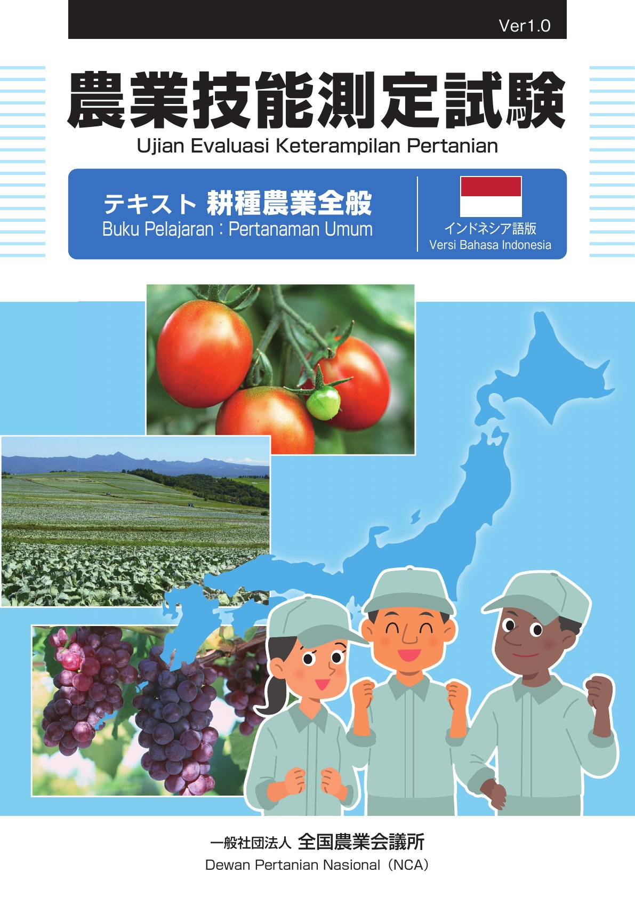
Teks halaman 1
テキスト 耕種農業全般
Buku Pelajaran：Pertanaman Umum
農業技能測定試験
Ujian Evaluasi Keterampilan Pertanian
Versi Bahasa Indonesia
一般社団法人 全国農業会議所
Dewan Pertanian Nasional（NCA）
インドネシア語版
Ver1.0
Halaman 2
Teks halaman 2
Riwayat revisi
Nomor versi Tanggal revisi
Ringkasan revisi
Bagian yang direvisi
1.0
02/12/2019
Versi pertama dirilis
Versi pertama dirilis
Halaman 3
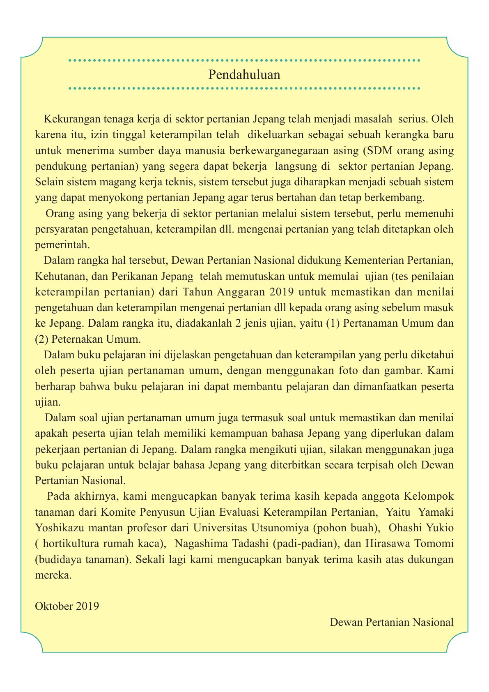
Teks halaman 3
Pendahuluan
Kekurangan tenaga kerja di sektor pertanian Jepang telah menjadi masalah serius. Oleh
karena itu, izin tinggal keterampilan telah dikeluarkan sebagai sebuah kerangka baru
untuk menerima sumber daya manusia berkewarganegaraan asing (SDM orang asing
pendukung pertanian) yang segera dapat bekerja langsung di sektor pertanian Jepang.
Selain sistem magang kerja teknis, sistem tersebut juga diharapkan menjadi sebuah sistem
yang dapat menyokong pertanian Jepang agar terus bertahan dan tetap berkembang.
Orang asing yang bekerja di sektor pertanian melalui sistem tersebut, perlu memenuhi
persyaratan pengetahuan, keterampilan dll. mengenai pertanian yang telah ditetapkan oleh
pemerintah.
Dalam rangka hal tersebut, Dewan Pertanian Nasional didukung Kementerian Pertanian,
Kehutanan, dan Perikanan Jepang telah memutuskan untuk memulai ujian (tes penilaian
keterampilan pertanian) dari Tahun Anggaran 2019 untuk memastikan dan menilai
pengetahuan dan keterampilan mengenai pertanian dll kepada orang asing sebelum masuk
ke Jepang. Dalam rangka itu, diadakanlah 2 jenis ujian, yaitu (1) Pertanaman Umum dan
(2) Peternakan Umum.
Dalam buku pelajaran ini dijelaskan pengetahuan dan keterampilan yang perlu diketahui
oleh peserta ujian pertanaman umum, dengan menggunakan foto dan gambar. Kami
berharap bahwa buku pelajaran ini dapat membantu pelajaran dan dimanfaatkan peserta
ujian.
Dalam soal ujian pertanaman umum juga termasuk soal untuk memastikan dan menilai
apakah peserta ujian telah memiliki kemampuan bahasa Jepang yang diperlukan dalam
pekerjaan pertanian di Jepang. Dalam rangka mengikuti ujian, silakan menggunakan juga
buku pelajaran untuk belajar bahasa Jepang yang diterbitkan secara terpisah oleh Dewan
Pertanian Nasional.
Pada akhirnya, kami mengucapkan banyak terima kasih kepada anggota Kelompok
tanaman dari Komite Penyusun Ujian Evaluasi Keterampilan Pertanian, Yaitu Yamaki
Yoshikazu mantan profesor dari Universitas Utsunomiya (pohon buah), Ohashi Yukio
( hortikultura rumah kaca), Nagashima Tadashi (padi-padian), dan Hirasawa Tomomi
(budidaya tanaman). Sekali lagi kami mengucapkan banyak terima kasih atas dukungan
mereka.
Oktober 2019
Dewan Pertanian Nasional
Halaman 4
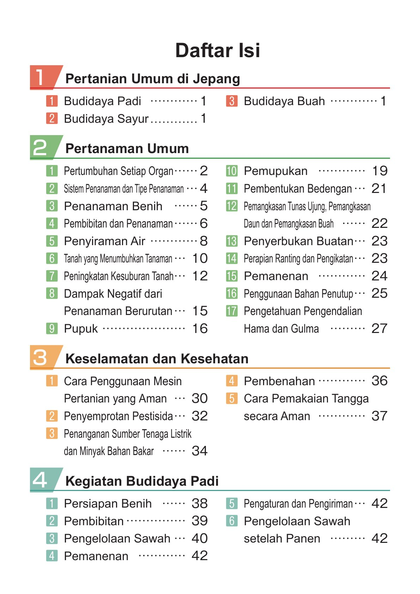
Teks halaman 4
Daftar Isi
1 Budidaya Padi… …………1
2 Budidaya Sayur……………1
3 Budidaya Buah……………1
1 Pertumbuhan Setiap Organ………2
2 Sistem Penanaman dan Tipe Penanaman……4
3 Penanaman Benih… ……5
4 Pembibitan dan Penanaman………6
5 Penyiraman Air……………8
6 Tanah yang Menumbuhkan Tanaman…… 10
7 Peningkatan Kesuburan Tanah…… 12
8 Dampak Negatif dari
Penanaman Berurutan…… 15
9 Pupuk…………………… 16
ⵌPemupukan… ………… 19
ⵍPembentukan Bedengan…… 21
ⵎPemangkasan Tunas Ujung, Pemangkasan
Daun dan Pemangkasan Buah… …… 22
ⵏPenyerbukan Buatan…… 23
ⵐPerapian Ranting dan Pengikatan…… 23
ⵑPemanenan… ………… 24
ⵒPenggunaan Bahan Penutup…… 25
ⵓPengetahuan Pengendalian
Hama dan Gulma… ……… 27
1 Cara Penggunaan Mesin
Pertanian yang Aman… … 30
2 Penyemprotan Pestisida…… 32
3 Penanganan Sumber Tenaga Listrik
dan Minyak Bahan Bakar… …… 34
4 Pembenahan…………… 36
5 Cara Pemakaian Tangga
secara Aman… ………… 37
1 Persiapan Benih… …… 38
2 Pembibitan……………… 39
3 Pengelolaan Sawah…… 40
4 Pemanenan… ………… 42
5 Pengaturan dan Pengiriman…… 42
6 Pengelolaan Sawah
setelah Panen… ……… 42
Pertanian Umum di Jepang
１
Pertanaman Umum
２
Keselamatan dan Kesehatan
３
Kegiatan Budidaya Padi
４
Halaman 5
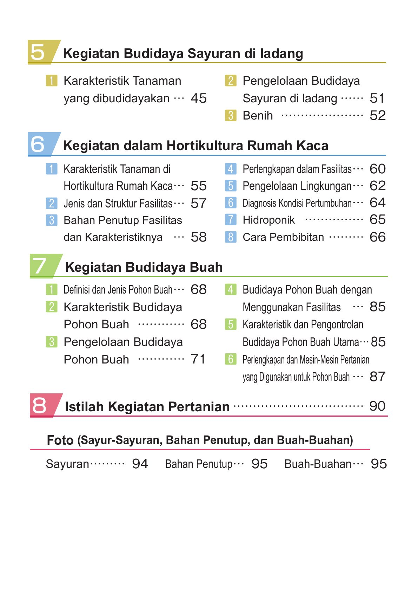
Teks halaman 5
1 Karakteristik Tanaman
yang dibudidayakan…… 45
2 Pengelolaan Budidaya
Sayuran di ladang……… 51
3 Benih… ………………… 52
1 Karakteristik Tanaman di
Hortikultura Rumah Kaca…… 55
2 Jenis dan Struktur Fasilitas…… 57
3 Bahan Penutup Fasilitas
dan Karakteristiknya… … 58
4 Perlengkapan dalam Fasilitas…… 60
5 Pengelolaan Lingkungan…… 62
6 Diagnosis Kondisi Pertumbuhan…… 64
7 Hidroponik… …………… 65
8 Cara Pembibitan………… 66
1 Definisi dan Jenis Pohon Buah…… 68
2 Karakteristik Budidaya
Pohon Buah… ………… 68
3 Pengelolaan Budidaya
Pohon Buah… ………… 71
4 Budidaya Pohon Buah dengan
Menggunakan Fasilitas… … 85
5 Karakteristik dan Pengontrolan
Budidaya Pohon Buah Utama……85
6 Perlengkapan dan Mesin-Mesin Pertanian
yang Digunakan untuk Pohon Buah…… 87
… …………………………… 90
Sayuran………… 94
Bahan Penutup…… 95
Buah-Buahan…… 95
Kegiatan Budidaya Sayuran di ladang
５
Kegiatan dalam Hortikultura Rumah Kaca
６
Kegiatan Budidaya Buah
7
Istilah Kegiatan Pertanian
8
Foto (Sayur-Sayuran, Bahan Penutup, dan Buah-Buahan)
Halaman 6
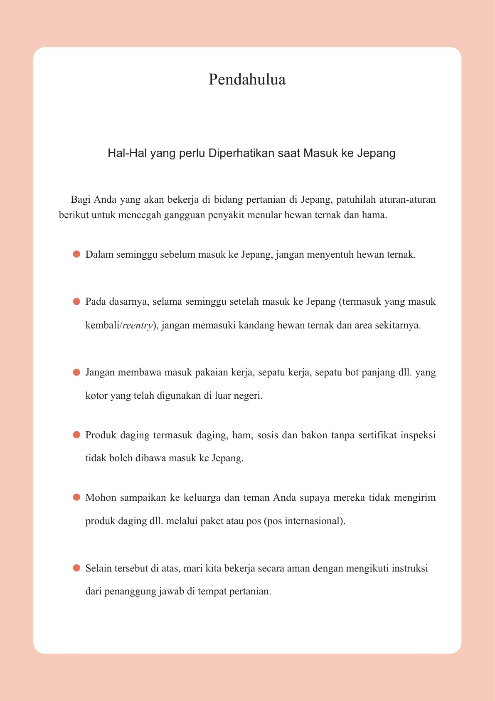
Teks halaman 6
Pendahulua
Hal-Hal yang perlu Diperhatikan saat Masuk ke Jepang
Bagi Anda yang akan bekerja di bidang pertanian di Jepang, patuhilah aturan-aturan
berikut untuk mencegah gangguan penyakit menular hewan ternak dan hama.
◦Dalam seminggu sebelum masuk ke Jepang, jangan menyentuh hewan ternak.
◦�Pada dasarnya, selama seminggu setelah masuk ke Jepang (termasuk yang masuk
kembali/reentry), jangan memasuki kandang hewan ternak dan area sekitarnya.
◦�Jangan membawa masuk pakaian kerja, sepatu kerja, sepatu bot panjang dll. yang
kotor yang telah digunakan di luar negeri.
◦�Produk daging termasuk daging, ham, sosis dan bakon tanpa sertifikat inspeksi
tidak boleh dibawa masuk ke Jepang.
◦�Mohon sampaikan ke keluarga dan teman Anda supaya mereka tidak mengirim
produk daging dll. melalui paket atau pos (pos internasional).
◦�Selain tersebut di atas, mari kita bekerja secara aman dengan mengikuti instruksi
dari penanggung jawab di tempat pertanian.
Halaman 7
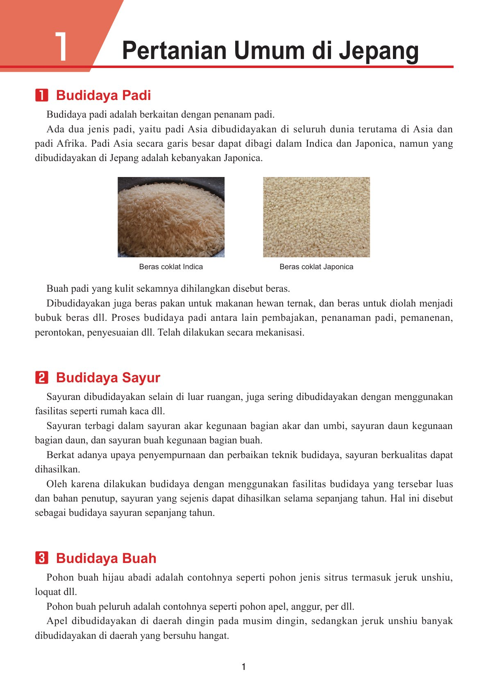
Teks halaman 7
1
1 Budidaya Padi
Budidaya padi adalah berkaitan dengan penanam padi.
Ada dua jenis padi, yaitu padi Asia dibudidayakan di seluruh dunia terutama di Asia dan
padi Afrika. Padi Asia secara garis besar dapat dibagi dalam Indica dan Japonica, namun yang
dibudidayakan di Jepang adalah kebanyakan Japonica.
Buah padi yang kulit sekamnya dihilangkan disebut beras.
Dibudidayakan juga beras pakan untuk makanan hewan ternak, dan beras untuk diolah menjadi
bubuk beras dll. Proses budidaya padi antara lain pembajakan, penanaman padi, pemanenan,
perontokan, penyesuaian dll. Telah dilakukan secara mekanisasi.
2 Budidaya Sayur
Sayuran dibudidayakan selain di luar ruangan, juga sering dibudidayakan dengan menggunakan
fasilitas seperti rumah kaca dll.
Sayuran terbagi dalam sayuran akar kegunaan bagian akar dan umbi, sayuran daun kegunaan
bagian daun, dan sayuran buah kegunaan bagian buah.
Berkat adanya upaya penyempurnaan dan perbaikan teknik budidaya, sayuran berkualitas dapat
dihasilkan.
Oleh karena dilakukan budidaya dengan menggunakan fasilitas budidaya yang tersebar luas
dan bahan penutup, sayuran yang sejenis dapat dihasilkan selama sepanjang tahun. Hal ini disebut
sebagai budidaya sayuran sepanjang tahun.
3 Budidaya Buah
Pohon buah hijau abadi adalah contohnya seperti pohon jenis sitrus termasuk jeruk unshiu,
loquat dll.
Pohon buah peluruh adalah contohnya seperti pohon apel, anggur, per dll.
Apel dibudidayakan di daerah dingin pada musim dingin, sedangkan jeruk unshiu banyak
dibudidayakan di daerah yang bersuhu hangat.
Pertanian Umum di Jepang
１
Beras coklat Indica
Beras coklat Japonica
Halaman 8
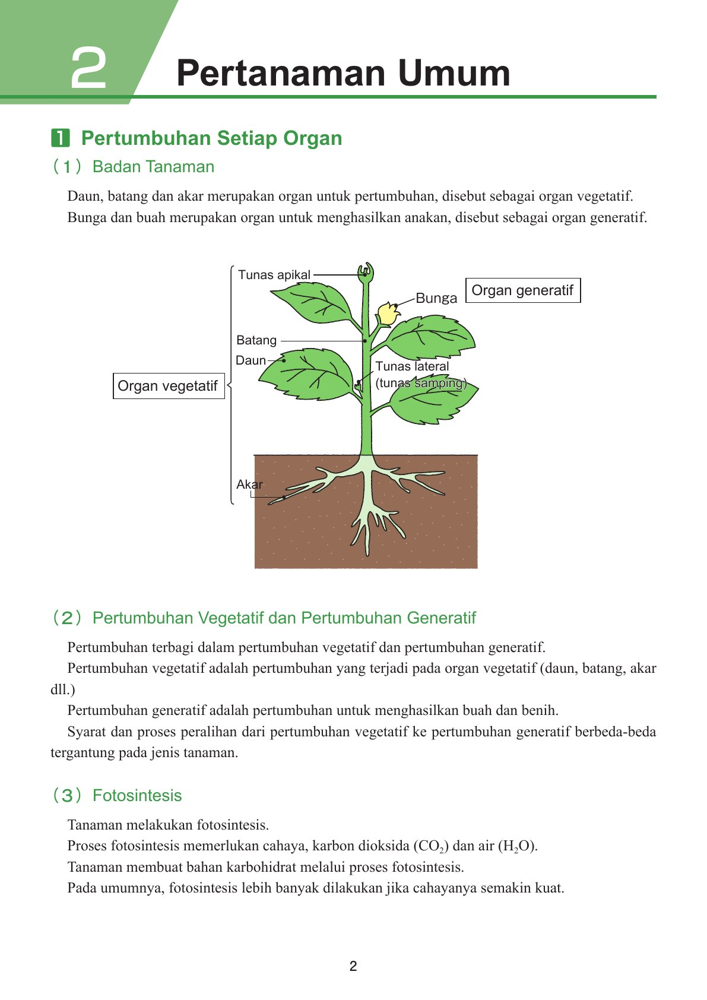
Teks halaman 8
2
1 Pertumbuhan Setiap Organ
（１）Badan Tanaman
Daun, batang dan akar merupakan organ untuk pertumbuhan, disebut sebagai organ vegetatif.
Bunga dan buah merupakan organ untuk menghasilkan anakan, disebut sebagai organ generatif.
（２）Pertumbuhan Vegetatif dan Pertumbuhan Generatif
Pertumbuhan terbagi dalam pertumbuhan vegetatif dan pertumbuhan generatif.
Pertumbuhan vegetatif adalah pertumbuhan yang terjadi pada organ vegetatif (daun, batang, akar
dll.)
Pertumbuhan generatif adalah pertumbuhan untuk menghasilkan buah dan benih.
Syarat dan proses peralihan dari pertumbuhan vegetatif ke pertumbuhan generatif berbeda-beda
tergantung pada jenis tanaman.
（３）Fotosintesis
Tanaman melakukan fotosintesis.
Proses fotosintesis memerlukan cahaya, karbon dioksida (CO2) dan air (H2O).
Tanaman membuat bahan karbohidrat melalui proses fotosintesis.
Pada umumnya, fotosintesis lebih banyak dilakukan jika cahayanya semakin kuat.
Pertanaman Umum
2
Batang
Bunga
Akar
Organ generatif
Organ vegetatif
Daun
が
Tunas apikal
Tunas lateral
(tunas samping)
Tunas lateral
(tunas samping)
Halaman 9
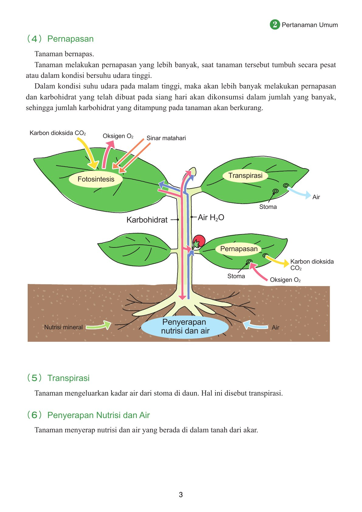
Teks halaman 9
3
Pertanaman Umum
２
（４）Pernapasan
Tanaman bernapas.
Tanaman melakukan pernapasan yang lebih banyak, saat tanaman tersebut tumbuh secara pesat
atau dalam kondisi bersuhu udara tinggi.
Dalam kondisi suhu udara pada malam tinggi, maka akan lebih banyak melakukan pernapasan
dan karbohidrat yang telah dibuat pada siang hari akan dikonsumsi dalam jumlah yang banyak,
sehingga jumlah karbohidrat yang ditampung pada tanaman akan berkurang.
（５）Transpirasi
Tanaman mengeluarkan kadar air dari stoma di daun. Hal ini disebut transpirasi.
（６）Penyerapan Nutrisi dan Air
Tanaman menyerap nutrisi dan air yang berada di dalam tanah dari akar.
Sinar matahari
Karbon dioksida CO2
Oksigen O2
Fotosintesis
Transpirasi
Pernapasan
Nutrisi mineral
Air
Air
Stoma
Stoma
Oksigen O2
Karbon dioksida
CO2
Penyerapan
nutrisi dan air
Karbohidrat
Air H2O
Halaman 10
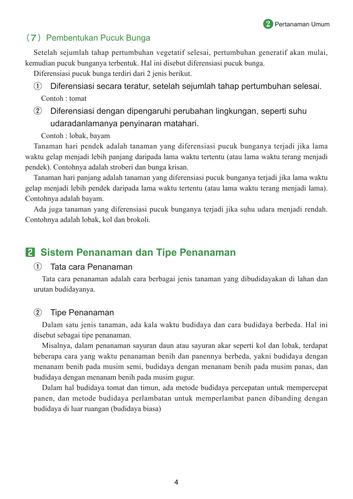
Teks halaman 10
4
Pertanaman Umum
２
（７）Pembentukan Pucuk Bunga
Setelah sejumlah tahap pertumbuhan vegetatif selesai, pertumbuhan generatif akan mulai,
kemudian pucuk bunganya terbentuk. Hal ini disebut diferensiasi pucuk bunga.
Diferensiasi pucuk bunga terdiri dari 2 jenis berikut.
① Diferensiasi secara teratur, setelah sejumlah tahap pertumbuhan selesai.
Contoh : tomat
② �Diferensiasi dengan dipengaruhi perubahan lingkungan, seperti suhu
udaradanlamanya penyinaran matahari.
Contoh : lobak, bayam
Tanaman hari pendek adalah tanaman yang diferensiasi pucuk bunganya terjadi jika lama
waktu gelap menjadi lebih panjang daripada lama waktu tertentu (atau lama waktu terang menjadi
pendek). Contohnya adalah stroberi dan bunga krisan.
Tanaman hari panjang adalah tanaman yang diferensiasi pucuk bunganya terjadi jika lama waktu
gelap menjadi lebih pendek daripada lama waktu tertentu (atau lama waktu terang menjadi lama).
Contohnya adalah bayam.
Ada juga tanaman yang diferensiasi pucuk bunganya terjadi jika suhu udara menjadi rendah.
Contohnya adalah lobak, kol dan brokoli.
2 Sistem Penanaman dan Tipe Penanaman
① Tata cara Penanaman
Tata cara penanaman adalah cara berbagai jenis tanaman yang dibudidayakan di lahan dan
urutan budidayanya.
② Tipe Penanaman
Dalam satu jenis tanaman, ada kala waktu budidaya dan cara budidaya berbeda. Hal ini
disebut sebagai tipe penanaman.
Misalnya, dalam penanaman sayuran daun atau sayuran akar seperti kol dan lobak, terdapat
beberapa cara yang waktu penanaman benih dan panennya berbeda, yakni budidaya dengan
menanam benih pada musim semi, budidaya dengan menanam benih pada musim panas, dan
budidaya dengan menanam benih pada musim gugur.
Dalam hal budidaya tomat dan timun, ada metode budidaya percepatan untuk mempercepat
panen, dan metode budidaya perlambatan untuk memperlambat panen dibanding dengan
budidaya di luar ruangan (budidaya biasa)
Halaman 11
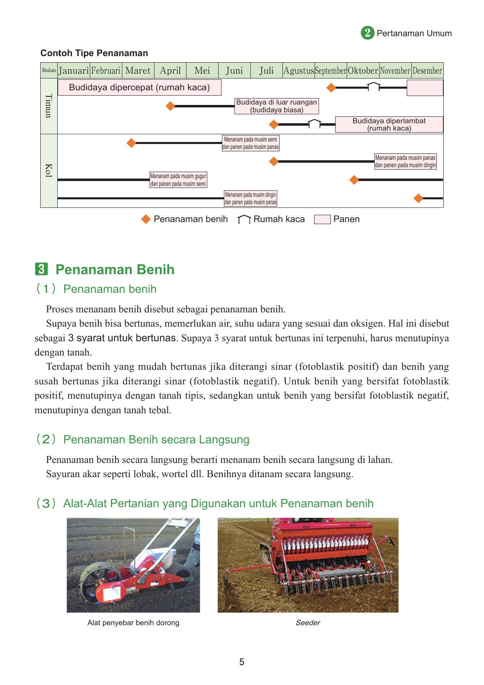
Teks halaman 11
5
Pertanaman Umum
２
.
3 Penanaman Benih
（１）Penanaman benih
Proses menanam benih disebut sebagai penanaman benih.
Supaya benih bisa bertunas, memerlukan air, suhu udara yang sesuai dan oksigen. Hal ini disebut
sebagai 3 syarat untuk bertunas. Supaya 3 syarat untuk bertunas ini terpenuhi, harus menutupinya
dengan tanah.
Terdapat benih yang mudah bertunas jika diterangi sinar (fotoblastik positif) dan benih yang
susah bertunas jika diterangi sinar (fotoblastik negatif). Untuk benih yang bersifat fotoblastik
positif, menutupinya dengan tanah tipis, sedangkan untuk benih yang bersifat fotoblastik negatif,
menutupinya dengan tanah tebal.
（２）Penanaman Benih secara Langsung
Penanaman benih secara langsung berarti menanam benih secara langsung di lahan.
Sayuran akar seperti lobak, wortel dll. Benihnya ditanam secara langsung.
（３）Alat-Alat Pertanian yang Digunakan untuk Penanaman benih
Contoh Tipe Penanaman
Bulan Januari Februari Maret
April
Mei
Juni
Juli
AgustusSeptemberOktober November Desember
Timun
Budidaya dipercepat (rumah kaca)
Budidaya di luar ruangan
(budidaya biasa)
Budidaya diperlambat
(rumah kaca)
Kol
Menanam pada musim semi
dan panen pada musim panas
Menanam pada musim panas
dan panen pada musim dingin
Menanam pada musim gugur
dan panen pada musim semi
Menanam pada musim dingin
dan panen pada musim panas
Penanaman benih
Rumah kaca
Panen
Seeder
Alat penyebar benih dorong
Halaman 12
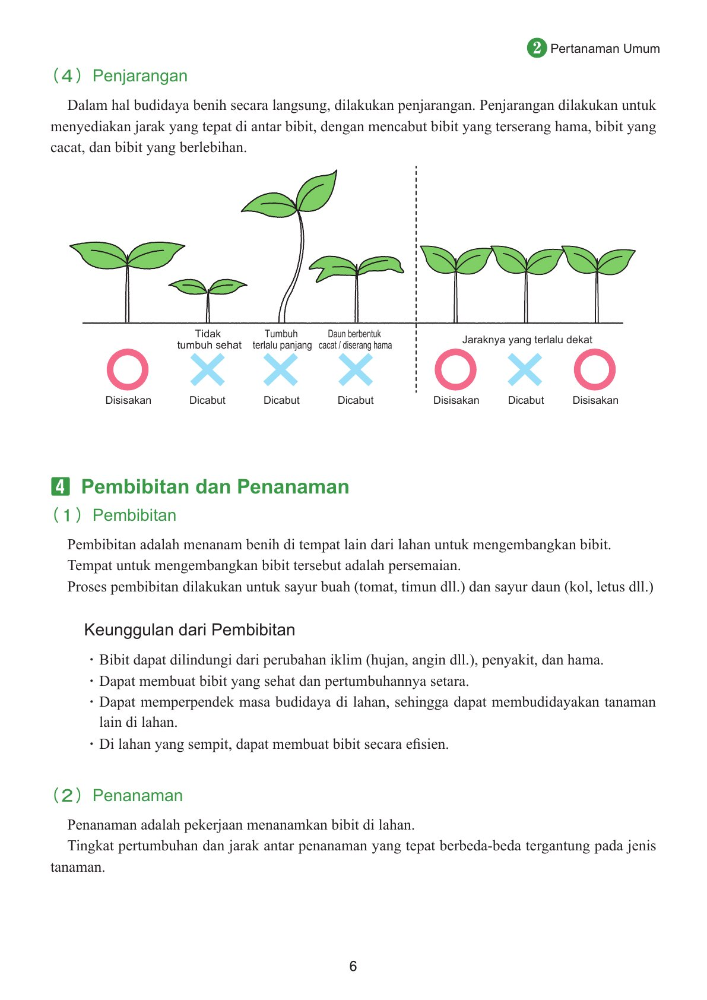
Teks halaman 12
6
Pertanaman Umum
２
（４）Penjarangan
Dalam hal budidaya benih secara langsung, dilakukan penjarangan. Penjarangan dilakukan untuk
menyediakan jarak yang tepat di antar bibit, dengan mencabut bibit yang terserang hama, bibit yang
cacat, dan bibit yang berlebihan.
4 Pembibitan dan Penanaman
（１）Pembibitan
Pembibitan adalah menanam benih di tempat lain dari lahan untuk mengembangkan bibit.
Tempat untuk mengembangkan bibit tersebut adalah persemaian.
Proses pembibitan dilakukan untuk sayur buah (tomat, timun dll.) dan sayur daun (kol, letus dll.)
Keunggulan dari Pembibitan
・Bibit dapat dilindungi dari perubahan iklim (hujan, angin dll.), penyakit, dan hama.
・Dapat membuat bibit yang sehat dan pertumbuhannya setara.
・�Dapat memperpendek masa budidaya di lahan, sehingga dapat membudidayakan tanaman
lain di lahan.
・�Di lahan yang sempit, dapat membuat bibit secara efisien.
（２）Penanaman
Penanaman adalah pekerjaan menanamkan bibit di lahan.
Tingkat pertumbuhan dan jarak antar penanaman yang tepat berbeda-beda tergantung pada jenis
tanaman.
Tidak
tumbuh sehat
Tumbuh
terlalu panjang
Daun berbentuk
cacat / diserang hama
Jaraknya yang terlalu dekat
Disisakan
Dicabut
Dicabut
Dicabut
Dicabut
Disisakan
Disisakan
Halaman 13
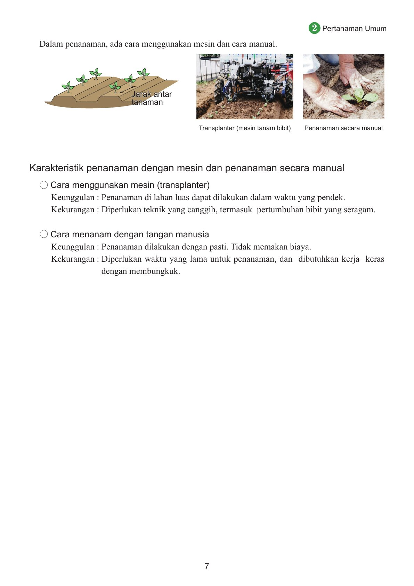
Teks halaman 13
7
Pertanaman Umum
２
Dalam penanaman, ada cara menggunakan mesin dan cara manual.
Karakteristik penanaman dengan mesin dan penanaman secara manual
○Cara menggunakan mesin (transplanter)
Keunggulan : Penanaman di lahan luas dapat dilakukan dalam waktu yang pendek.
Kekurangan : �Diperlukan teknik yang canggih, termasuk pertumbuhan bibit yang seragam.
○Cara menanam dengan tangan manusia
Keunggulan : Penanaman dilakukan dengan pasti. Tidak memakan biaya.
Kekurangan : �Diperlukan waktu yang lama untuk penanaman, dan dibutuhkan kerja keras
dengan membungkuk.
Jarak antar
tanaman
Jarak antar
tanaman
Transplanter (mesin tanam bibit)
Penanaman secara manual
Halaman 14
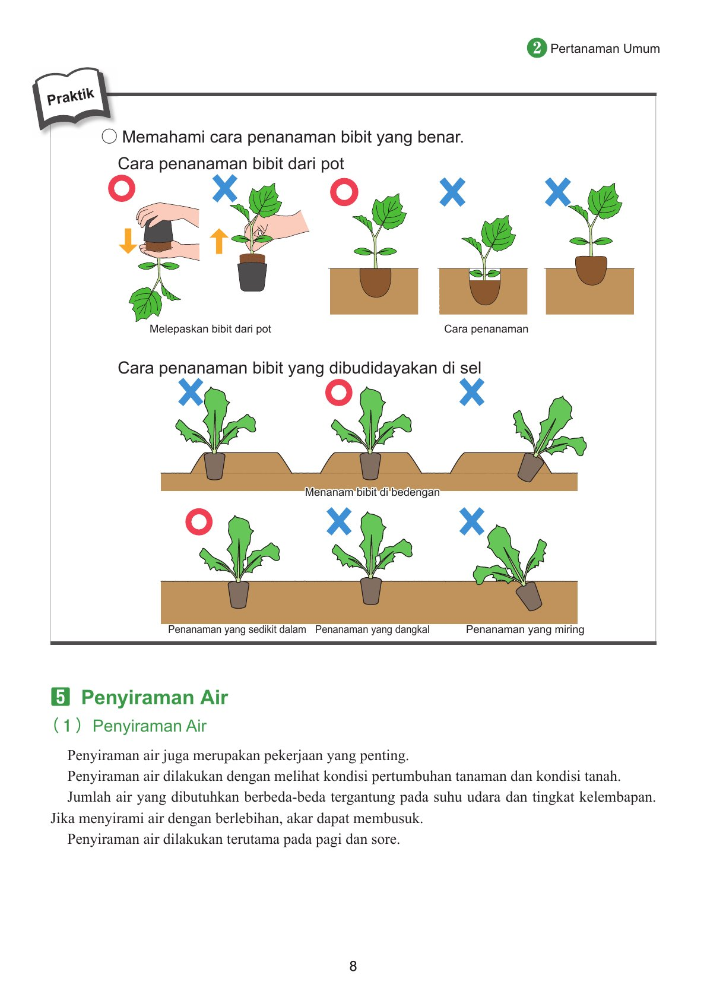
Teks halaman 14
8
Pertanaman Umum
２
5 Penyiraman Air
（１）Penyiraman Air
Penyiraman air juga merupakan pekerjaan yang penting.
Penyiraman air dilakukan dengan melihat kondisi pertumbuhan tanaman dan kondisi tanah.
Jumlah air yang dibutuhkan berbeda-beda tergantung pada suhu udara dan tingkat kelembapan.
Jika menyirami air dengan berlebihan, akar dapat membusuk.
Penyiraman air dilakukan terutama pada pagi dan sore.
Praktik
○Memahami cara penanaman bibit yang benar.
Cara penanaman bibit dari pot
Cara penanaman bibit yang dibudidayakan di sel
Cara penanaman
Melepaskan bibit dari pot
Penanaman yang sedikit dalam
Menanam bibit di bedengan
Penanaman yang dangkal
Penanaman yang miring
Menanam bibit di bedengan
Halaman 15
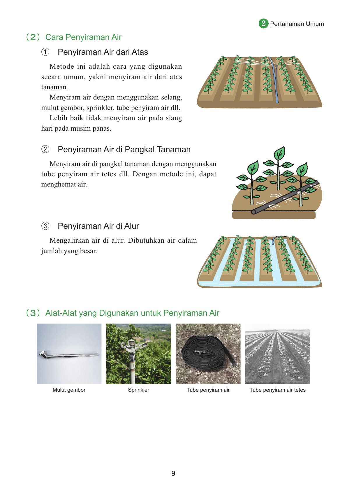
Teks halaman 15
9
Pertanaman Umum
２
（２）Cara Penyiraman Air
① Penyiraman Air dari Atas
Metode ini adalah cara yang digunakan
secara umum, yakni menyiram air dari atas
tanaman.
Menyiram air dengan menggunakan selang,
mulut gembor, sprinkler, tube penyiram air dll.
Lebih baik tidak menyiram air pada siang
hari pada musim panas.
② Penyiraman Air di Pangkal Tanaman
Menyiram air di pangkal tanaman dengan menggunakan
tube penyiram air tetes dll. Dengan metode ini, dapat
menghemat air.
③ Penyiraman Air di Alur
Mengalirkan air di alur. Dibutuhkan air dalam
jumlah yang besar.
（３）Alat-Alat yang Digunakan untuk Penyiraman Air
Tube penyiram air
Mulut gembor
Sprinkler
Tube penyiram air tetes
Halaman 16
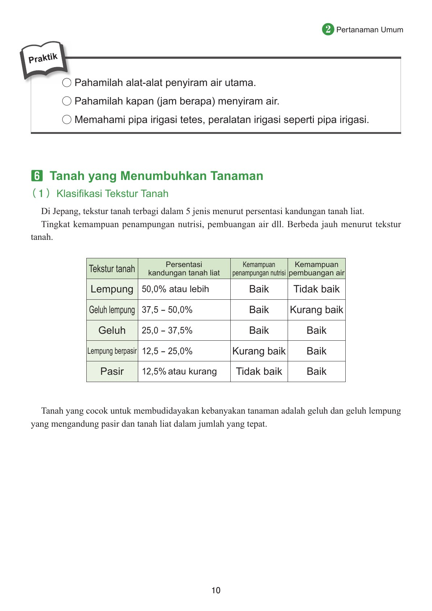
Teks halaman 16
10
Pertanaman Umum
２
6 Tanah yang Menumbuhkan Tanaman
（１）Klasifi kasi Tekstur Tanah
Di Jepang, tekstur tanah terbagi dalam 5 jenis menurut persentasi kandungan tanah liat.
Tingkat kemampuan penampungan nutrisi, pembuangan air dll. Berbeda jauh menurut tekstur
tanah.
Tanah yang cocok untuk membudidayakan kebanyakan tanaman adalah geluh dan geluh lempung
yang mengandung pasir dan tanah liat dalam jumlah yang tepat.
○Pahamilah alat-alat penyiram air utama.
○Pahamilah kapan (jam berapa) menyiram air.
○ Memahami pipa irigasi tetes, peralatan irigasi seperti pipa irigasi.
○
Praktik
Tekstur tanah
Persentasi
kandungan tanah liat
Kemampuan
penampungan nutrisi
Kemampuan
pembuangan air
Lempung
50,0% atau lebih
Baik
Tidak baik
Geluh lempung 37,5 - 50,0%
Baik
Kurang baik
Geluh
25,0 - 37,5%
Baik
Baik
Lempung berpasir 12,5 - 25,0%
Kurang baik
Baik
Pasir
12,5% atau kurang
Tidak baik
Baik
Halaman 17
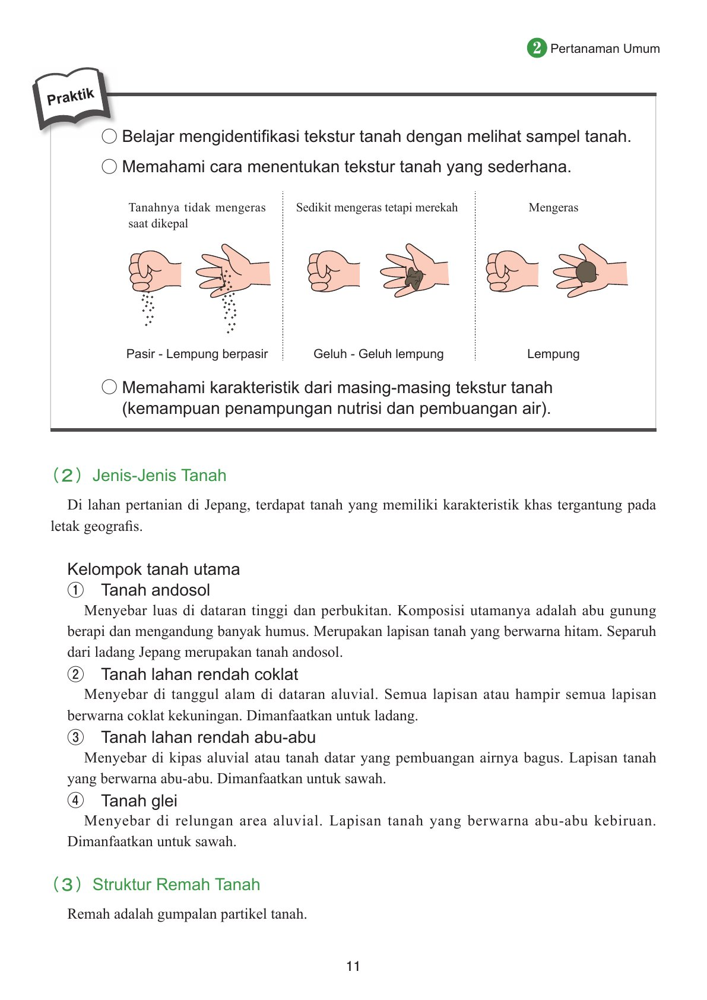
Teks halaman 17
11
Pertanaman Umum
２
（２）Jenis-Jenis Tanah
Di lahan pertanian di Jepang, terdapat tanah yang memiliki karakteristik khas tergantung pada
letak geografi s.
Kelompok tanah utama
① Tanah andosol
Menyebar luas di dataran tinggi dan perbukitan. Komposisi utamanya adalah abu gunung
berapi dan mengandung banyak humus. Merupakan lapisan tanah yang berwarna hitam. Separuh
dari ladang Jepang merupakan tanah andosol.
② Tanah lahan rendah coklat
Menyebar di tanggul alam di dataran aluvial. Semua lapisan atau hampir semua lapisan
berwarna coklat kekuningan. Dimanfaatkan untuk ladang.
③ Tanah lahan rendah abu-abu
Menyebar di kipas aluvial atau tanah datar yang pembuangan airnya bagus. Lapisan tanah
yang berwarna abu-abu. Dimanfaatkan untuk sawah.
④ Tanah glei
Menyebar di relungan area aluvial. Lapisan tanah yang berwarna abu-abu kebiruan.
Dimanfaatkan untuk sawah.
（３）Struktur Remah Tanah
Remah adalah gumpalan partikel tanah.
Praktik
○Belajar mengidentifi kasi tekstur tanah dengan melihat sampel tanah.
○Memahami cara menentukan tekstur tanah yang sederhana.
○ Memahami karakteristik dari masing-masing tekstur tanah
(kemampuan penampungan nutrisi dan pembuangan air).
Tanahnya tidak mengeras
saat dikepal
Sedikit mengeras tetapi merekah
Mengeras
Pasir - Lempung berpasir
Geluh - Geluh lempung
Lempung
Halaman 18
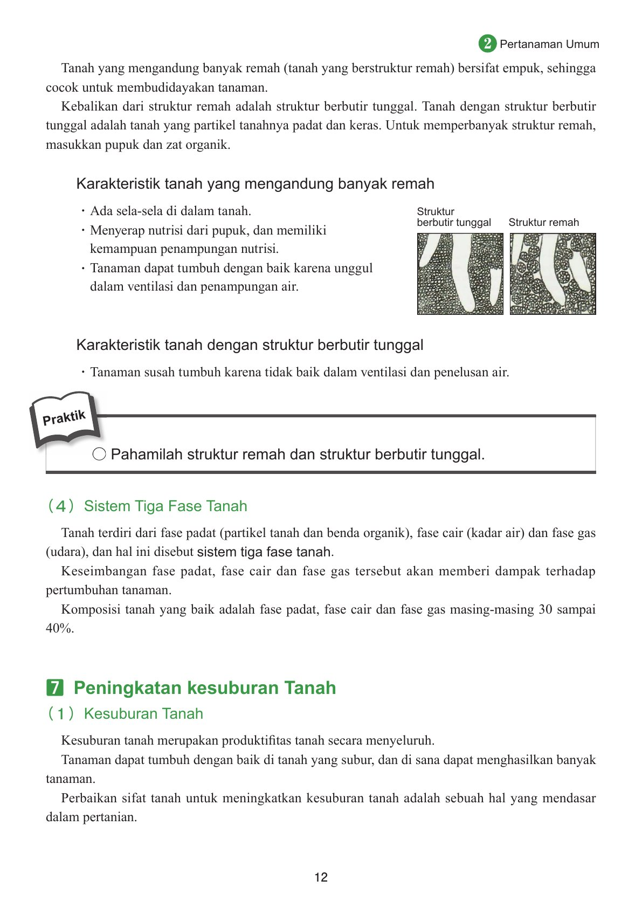
Teks halaman 18
12
Pertanaman Umum
２
Tanah yang mengandung banyak remah (tanah yang berstruktur remah) bersifat empuk, sehingga
cocok untuk membudidayakan tanaman.
Kebalikan dari struktur remah adalah struktur berbutir tunggal. Tanah dengan struktur berbutir
tunggal adalah tanah yang partikel tanahnya padat dan keras. Untuk memperbanyak struktur remah,
masukkan pupuk dan zat organik.
Karakteristik tanah yang mengandung banyak remah
・Ada sela-sela di dalam tanah.
・�Menyerap nutrisi dari pupuk, dan memiliki
kemampuan penampungan nutrisi.
・�Tanaman dapat tumbuh dengan baik karena unggul
dalam ventilasi dan penampungan air.
Karakteristik tanah dengan struktur berbutir tunggal
・Tanaman susah tumbuh karena tidak baik dalam ventilasi dan penelusan air.
（４）Sistem Tiga Fase Tanah
Tanah terdiri dari fase padat (partikel tanah dan benda organik), fase cair (kadar air) dan fase gas
(udara), dan hal ini disebut sistem tiga fase tanah.
Keseimbangan fase padat, fase cair dan fase gas tersebut akan memberi dampak terhadap
pertumbuhan tanaman.
Komposisi tanah yang baik adalah fase padat, fase cair dan fase gas masing-masing 30 sampai
40%.
₇ Peningkatan kesuburan Tanah
（１）Kesuburan Tanah
Kesuburan tanah merupakan produktifi tas tanah secara menyeluruh.
Tanaman dapat tumbuh dengan baik di tanah yang subur, dan di sana dapat menghasilkan banyak
tanaman.
Perbaikan sifat tanah untuk meningkatkan kesuburan tanah adalah sebuah hal yang mendasar
dalam pertanian.
○Pahamilah struktur remah dan struktur berbutir tunggal.
○
Praktik
Struktur
berbutir tunggal
Struktur remah
Halaman 19
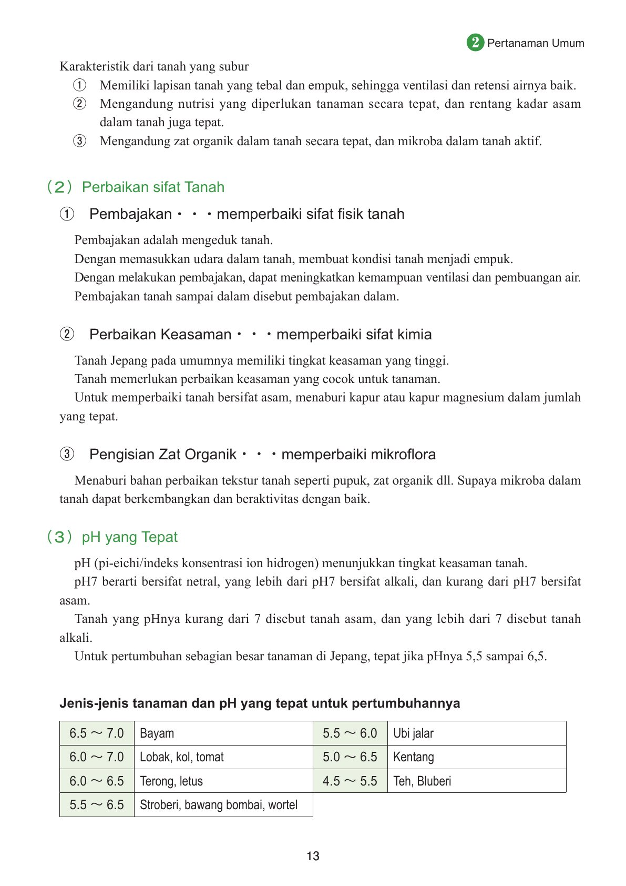
Teks halaman 19
13
Pertanaman Umum
２
Karakteristik dari tanah yang subur
① Memiliki lapisan tanah yang tebal dan empuk, sehingga ventilasi dan retensi airnya baik.
② �Mengandung nutrisi yang diperlukan tanaman secara tepat, dan rentang kadar asam
dalam tanah juga tepat.
③ Mengandung zat organik dalam tanah secara tepat, dan mikroba dalam tanah aktif.
（２）Perbaikan sifat Tanah
① Pembajakan・・・memperbaiki sifat fisik tanah
Pembajakan adalah mengeduk tanah.
Dengan memasukkan udara dalam tanah, membuat kondisi tanah menjadi empuk.
Dengan melakukan pembajakan, dapat meningkatkan kemampuan ventilasi dan pembuangan air.
Pembajakan tanah sampai dalam disebut pembajakan dalam.
② Perbaikan Keasaman・・・memperbaiki sifat kimia
Tanah Jepang pada umumnya memiliki tingkat keasaman yang tinggi.
Tanah memerlukan perbaikan keasaman yang cocok untuk tanaman.
Untuk memperbaiki tanah bersifat asam, menaburi kapur atau kapur magnesium dalam jumlah
yang tepat.
③ Pengisian Zat Organik・・・memperbaiki mikroflora
Menaburi bahan perbaikan tekstur tanah seperti pupuk, zat organik dll. Supaya mikroba dalam
tanah dapat berkembangkan dan beraktivitas dengan baik.
（３）pH yang Tepat
pH (pi-eichi/indeks konsentrasi ion hidrogen) menunjukkan tingkat keasaman tanah.
pH7 berarti bersifat netral, yang lebih dari pH7 bersifat alkali, dan kurang dari pH7 bersifat
asam.
Tanah yang pHnya kurang dari 7 disebut tanah asam, dan yang lebih dari 7 disebut tanah
alkali.
Untuk pertumbuhan sebagian besar tanaman di Jepang, tepat jika pHnya 5,5 sampai 6,5.
Jenis-jenis tanaman dan pH yang tepat untuk pertumbuhannya
6.5 ～7.0
Bayam
5.5 ～6.0
Ubi jalar
6.0 ～7.0
Lobak, kol, tomat
5.0 ～6.5
Kentang
6.0 ～6.5
Terong, letus
4.5 ～5.5
Teh, Bluberi
5.5 ～6.5
Stroberi, bawang bombai, wortel
Halaman 20
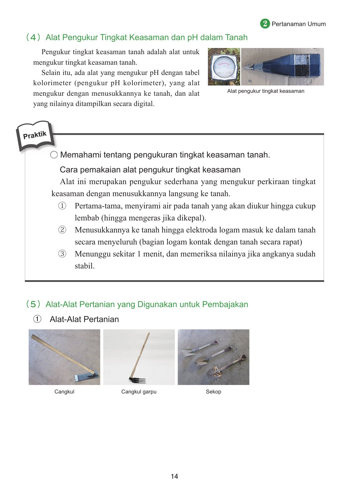
Teks halaman 20
14
Pertanaman Umum
２
（４）Alat Pengukur Tingkat Keasaman dan pH dalam Tanah
Pengukur tingkat keasaman tanah adalah alat untuk
mengukur tingkat keasaman tanah.
Selain itu, ada alat yang mengukur pH dengan tabel
kolorimeter (pengukur pH kolorimeter), yang alat
mengukur dengan menusukkannya ke tanah, dan alat
yang nilainya ditampilkan secara digital.
（５）Alat-Alat Pertanian yang Digunakan untuk Pembajakan
① Alat-Alat Pertanian
Alat pengukur tingkat keasaman
Cangkul
Sekop
Cangkul garpu
○Memahami tentang pengukuran tingkat keasaman tanah.
Cara pemakaian alat pengukur tingkat keasaman
Alat ini merupakan pengukur sederhana yang mengukur perkiraan tingkat
keasaman dengan menusukkannya langsung ke tanah.
① Pertama-tama, menyirami air pada tanah yang akan diukur hingga cukup
lembab (hingga mengeras jika dikepal).
② Menusukkannya ke tanah hingga elektroda logam masuk ke dalam tanah
secara menyeluruh (bagian logam kontak dengan tanah secara rapat)
③ Menunggu sekitar 1 menit, dan memeriksa nilainya jika angkanya sudah
stabil.
○
Praktik
Halaman 21
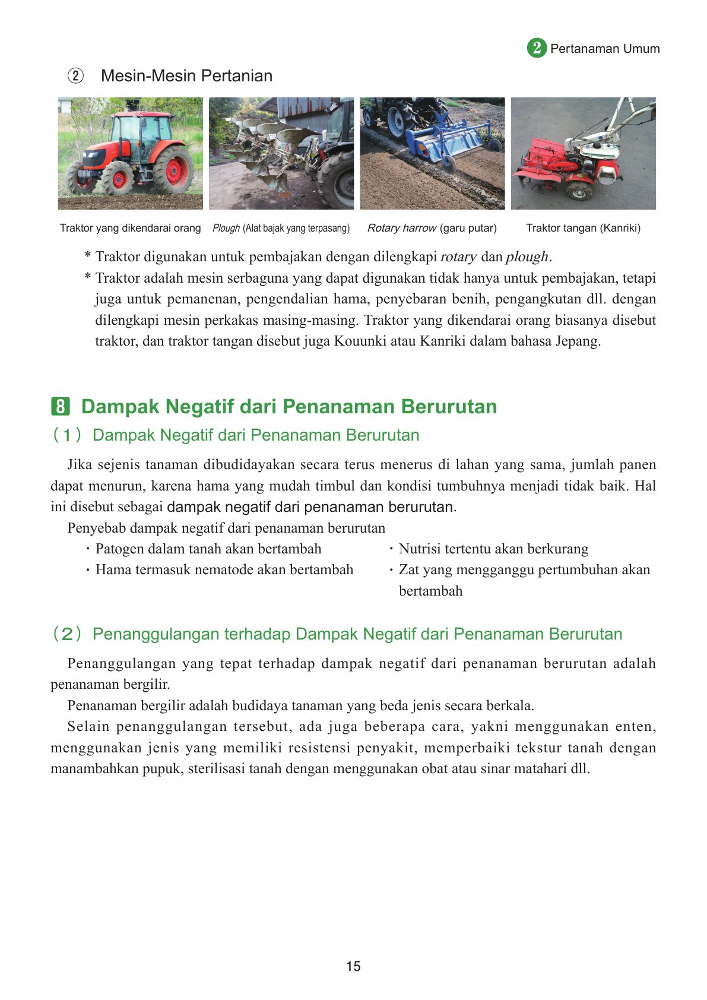
Teks halaman 21
15
Pertanaman Umum
２
② Mesin-Mesin Pertanian
* Traktor digunakan untuk pembajakan dengan dilengkapi rotary dan plough.
* �Traktor adalah mesin serbaguna yang dapat digunakan tidak hanya untuk pembajakan, tetapi
juga untuk pemanenan, pengendalian hama, penyebaran benih, pengangkutan dll. dengan
dilengkapi mesin perkakas masing-masing. Traktor yang dikendarai orang biasanya disebut
traktor, dan traktor tangan disebut juga Kouunki atau Kanriki dalam bahasa Jepang.
8 Dampak Negatif dari Penanaman Berurutan
（１）Dampak Negatif dari Penanaman Berurutan
Jika sejenis tanaman dibudidayakan secara terus menerus di lahan yang sama, jumlah panen
dapat menurun, karena hama yang mudah timbul dan kondisi tumbuhnya menjadi tidak baik. Hal
ini disebut sebagai dampak negatif dari penanaman berurutan.
Penyebab dampak negatif dari penanaman berurutan
・Patogen dalam tanah akan bertambah
・Nutrisi tertentu akan berkurang
・Hama termasuk nematode akan bertambah
・�Zat yang mengganggu pertumbuhan akan
bertambah
（２）Penanggulangan terhadap Dampak Negatif dari Penanaman Berurutan
Penanggulangan yang tepat terhadap dampak negatif dari penanaman berurutan adalah
penanaman bergilir.
Penanaman bergilir adalah budidaya tanaman yang beda jenis secara berkala.
Selain penanggulangan tersebut, ada juga beberapa cara, yakni menggunakan enten,
menggunakan jenis yang memiliki resistensi penyakit, memperbaiki tekstur tanah dengan
manambahkan pupuk, sterilisasi tanah dengan menggunakan obat atau sinar matahari dll.
Traktor yang dikendarai orang
Rotary harrow (garu putar)
Plough (Alat bajak yang terpasang)
Traktor tangan (Kanriki)
Halaman 22
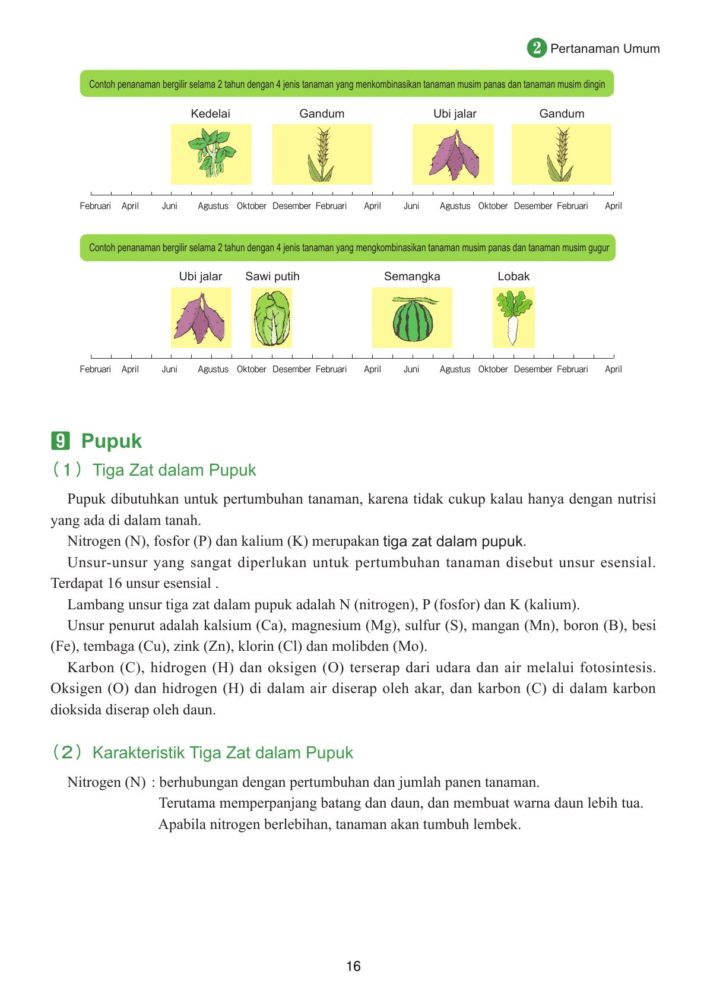
Teks halaman 22
16
Pertanaman Umum
２
9 Pupuk
（１）Tiga Zat dalam Pupuk
Pupuk dibutuhkan untuk pertumbuhan tanaman, karena tidak cukup kalau hanya dengan nutrisi
yang ada di dalam tanah.
Nitrogen (N), fosfor (P) dan kalium (K) merupakan tiga zat dalam pupuk.
Unsur-unsur yang sangat diperlukan untuk pertumbuhan tanaman disebut unsur esensial.
Terdapat 16 unsur esensial .
Lambang unsur tiga zat dalam pupuk adalah N (nitrogen), P (fosfor) dan K (kalium).
Unsur penurut adalah kalsium (Ca), magnesium (Mg), sulfur (S), mangan (Mn), boron (B), besi
(Fe), tembaga (Cu), zink (Zn), klorin (Cl) dan molibden (Mo).
Karbon (C), hidrogen (H) dan oksigen (O) terserap dari udara dan air melalui fotosintesis.
Oksigen (O) dan hidrogen (H) di dalam air diserap oleh akar, dan karbon (C) di dalam karbon
dioksida diserap oleh daun.
（２）Karakteristik Tiga Zat dalam Pupuk
Nitrogen (N) : berhubungan dengan pertumbuhan dan jumlah panen tanaman.
Terutama memperpanjang batang dan daun, dan membuat warna daun lebih tua.
Apabila nitrogen berlebihan, tanaman akan tumbuh lembek.
Kedelai
Gandum
Ubi jalar
Gandum
Ubi jalar
Sawi putih
Semangka
Lobak
Contoh penanaman bergilir selama 2 tahun dengan 4 jenis tanaman yang mengkombinasikan tanaman musim panas dan tanaman musim gugur
Contoh penanaman bergilir selama 2 tahun dengan 4 jenis tanaman yang menkombinasikan tanaman musim panas dan tanaman musim dingin
Februari
April
Juni
Agustus
Oktober Desember Februari
April
Juni
Agustus
Oktober Desember Februari
April
Februari
April
Juni
Agustus
Oktober Desember Februari
April
Juni
Agustus
Oktober Desember Februari
April
Halaman 23
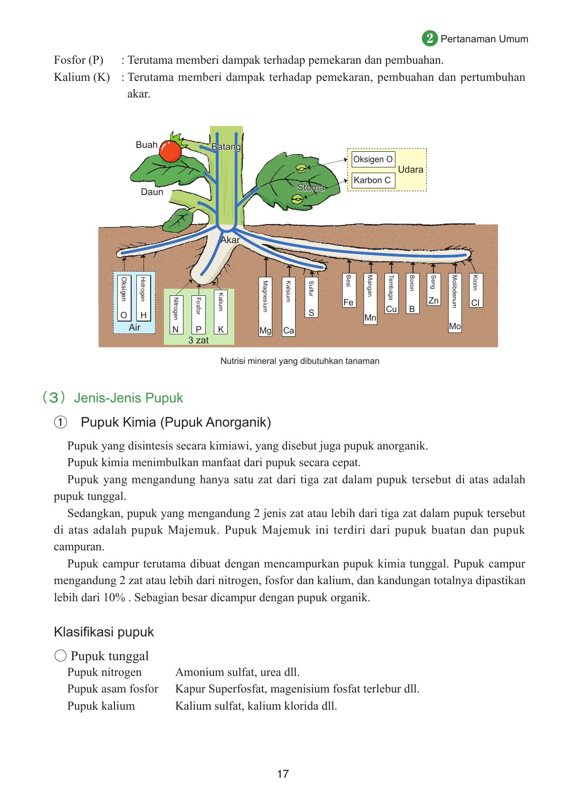
Teks halaman 23
17
Pertanaman Umum
２
Fosfor (P)
: Terutama memberi dampak terhadap pemekaran dan pembuahan.
Kalium (K) : �Terutama memberi dampak terhadap pemekaran, pembuahan dan pertumbuhan
akar.
（３）Jenis-Jenis Pupuk
① Pupuk Kimia (Pupuk Anorganik)
Pupuk yang disintesis secara kimiawi, yang disebut juga pupuk anorganik.
Pupuk kimia menimbulkan manfaat dari pupuk secara cepat.
Pupuk yang mengandung hanya satu zat dari tiga zat dalam pupuk tersebut di atas adalah
pupuk tunggal.
Sedangkan, pupuk yang mengandung 2 jenis zat atau lebih dari tiga zat dalam pupuk tersebut
di atas adalah pupuk Majemuk. Pupuk Majemuk ini terdiri dari pupuk buatan dan pupuk
campuran.
Pupuk campur terutama dibuat dengan mencampurkan pupuk kimia tunggal. Pupuk campur
mengandung 2 zat atau lebih dari nitrogen, fosfor dan kalium, dan kandungan totalnya dipastikan
lebih dari 10% . Sebagian besar dicampur dengan pupuk organik.
Klasifikasi pupuk
○Pupuk tunggal
Pupuk nitrogen
Amonium sulfat, urea dll.
Pupuk asam fosfor
Kapur Superfosfat, magenisium fosfat terlebur dll.
Pupuk kalium
Kalium sulfat, kalium klorida dll.
Udara
Air
N
P
K
Mg
Ca
S
Fe
Mn
Cu
B
Zn
Mo
Cl
3 zat
Oksigen O
Karbon C
O
H
Buah
Daun
Akar
Stoma
Batang
Stoma
Oksigen
Hidrogen
Nitrogen
Fosfor
Kalium
Magnesium
Kalsium
Sulfur
Besi
Mangan
Tembaga
Boron
Seng
Molibdenum
Klorin
Batang
Nutrisi mineral yang dibutuhkan tanaman
Halaman 24
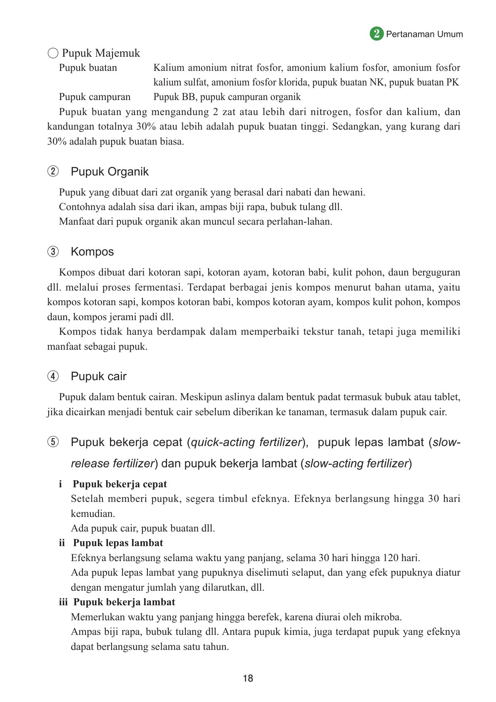
Teks halaman 24
18
Pertanaman Umum
２
○Pupuk Majemuk
Pupuk buatan
�Kalium amonium nitrat fosfor, amonium kalium fosfor, amonium fosfor
kalium sulfat, amonium fosfor klorida, pupuk buatan NK, pupuk buatan PK
Pupuk campuran
Pupuk BB, pupuk campuran organik
Pupuk buatan yang mengandung 2 zat atau lebih dari nitrogen, fosfor dan kalium, dan
kandungan totalnya 30% atau lebih adalah pupuk buatan tinggi. Sedangkan, yang kurang dari
30% adalah pupuk buatan biasa.
② Pupuk Organik
Pupuk yang dibuat dari zat organik yang berasal dari nabati dan hewani.
Contohnya adalah sisa dari ikan, ampas biji rapa, bubuk tulang dll.
Manfaat dari pupuk organik akan muncul secara perlahan-lahan.
③ Kompos
Kompos dibuat dari kotoran sapi, kotoran ayam, kotoran babi, kulit pohon, daun berguguran
dll. melalui proses fermentasi. Terdapat berbagai jenis kompos menurut bahan utama, yaitu
kompos kotoran sapi, kompos kotoran babi, kompos kotoran ayam, kompos kulit pohon, kompos
daun, kompos jerami padi dll.
Kompos tidak hanya berdampak dalam memperbaiki tekstur tanah, tetapi juga memiliki
manfaat sebagai pupuk.
④ Pupuk cair
Pupuk dalam bentuk cairan. Meskipun aslinya dalam bentuk padat termasuk bubuk atau tablet,
jika dicairkan menjadi bentuk cair sebelum diberikan ke tanaman, termasuk dalam pupuk cair.
⑤ �Pupuk bekerja cepat (quick-acting fertilizer), pupuk lepas lambat (slow-
release fertilizer) dan pupuk bekerja lambat (slow-acting fertilizer)
i Pupuk bekerja cepat
�Setelah memberi pupuk, segera timbul efeknya. Efeknya berlangsung hingga 30 hari
kemudian.
Ada pupuk cair, pupuk buatan dll.
ii Pupuk lepas lambat
Efeknya berlangsung selama waktu yang panjang, selama 30 hari hingga 120 hari.
�Ada pupuk lepas lambat yang pupuknya diselimuti selaput, dan yang efek pupuknya diatur
dengan mengatur jumlah yang dilarutkan, dll.
iii Pupuk bekerja lambat
Memerlukan waktu yang panjang hingga berefek, karena diurai oleh mikroba.
�Ampas biji rapa, bubuk tulang dll. Antara pupuk kimia, juga terdapat pupuk yang efeknya
dapat berlangsung selama satu tahun.
Halaman 25
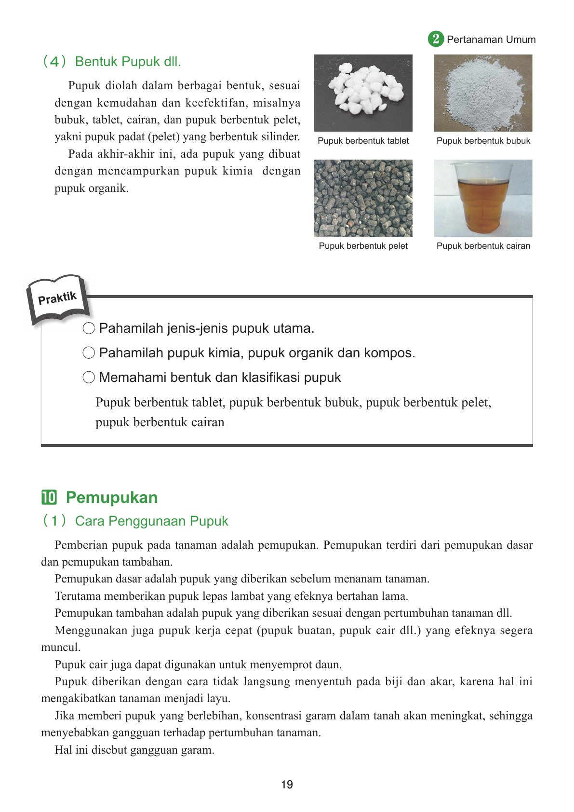
Teks halaman 25
19
Pertanaman Umum
２
（４）Bentuk Pupuk dll.
Pupuk diolah dalam berbagai bentuk, sesuai
dengan kemudahan dan keefektifan, misalnya
bubuk, tablet, cairan, dan pupuk berbentuk pelet,
yakni pupuk padat (pelet) yang berbentuk silinder.
Pada akhir-akhir ini, ada pupuk yang dibuat
dengan mencampurkan pupuk kimia dengan
pupuk organik.
ⵌPemupukan
（１）Cara Penggunaan Pupuk
Pemberian pupuk pada tanaman adalah pemupukan. Pemupukan terdiri dari pemupukan dasar
dan pemupukan tambahan.
Pemupukan dasar adalah pupuk yang diberikan sebelum menanam tanaman.
Terutama memberikan pupuk lepas lambat yang efeknya bertahan lama.
Pemupukan tambahan adalah pupuk yang diberikan sesuai dengan pertumbuhan tanaman dll.
Menggunakan juga pupuk kerja cepat (pupuk buatan, pupuk cair dll.) yang efeknya segera
muncul.
Pupuk cair juga dapat digunakan untuk menyemprot daun.
Pupuk diberikan dengan cara tidak langsung menyentuh pada biji dan akar, karena hal ini
mengakibatkan tanaman menjadi layu.
Jika memberi pupuk yang berlebihan, konsentrasi garam dalam tanah akan meningkat, sehingga
menyebabkan gangguan terhadap pertumbuhan tanaman.
Hal ini disebut gangguan garam.
○Pahamilah jenis-jenis pupuk utama.
○Pahamilah pupuk kimia, pupuk organik dan kompos.
○Memahami bentuk dan klasifi kasi pupuk
Pupuk berbentuk tablet, pupuk berbentuk bubuk, pupuk berbentuk pelet,
pupuk berbentuk cairan
○
Praktik
Pupuk berbentuk pelet
Pupuk berbentuk tablet
Pupuk berbentuk cairan
Pupuk berbentuk bubuk
Halaman 26
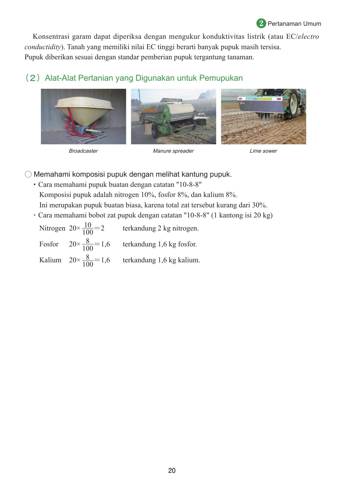
Teks halaman 26
20
Pertanaman Umum
２
Konsentrasi garam dapat diperiksa dengan mengukur konduktivitas listrik (atau EC/electro
conductidity). Tanah yang memiliki nilai EC tinggi berarti banyak pupuk masih tersisa.
Pupuk diberikan sesuai dengan standar pemberian pupuk tergantung tanaman.
（２）Alat-Alat Pertanian yang Digunakan untuk Pemupukan
○Memahami komposisi pupuk dengan melihat kantung pupuk.
・Cara memahami pupuk buatan dengan catatan "10-8-8"
Komposisi pupuk adalah nitrogen 10%, fosfor 8%, dan kalium 8%.
Ini merupakan pupuk buatan biasa, karena total zat tersebut kurang dari 30%.
・Cara memahami bobot zat pupuk dengan catatan "10-8-8" (1 kantong isi 20 kg)
Nitrogen 20× 10
100＝2
terkandung 2 kg nitrogen.
Fosfor
20× 8
100＝1,6
terkandung 1,6 kg fosfor.
Kalium 20× 8
100＝1,6
terkandung 1,6 kg kalium.
Broadcaster
Manure spreader
Lime sower
Halaman 27
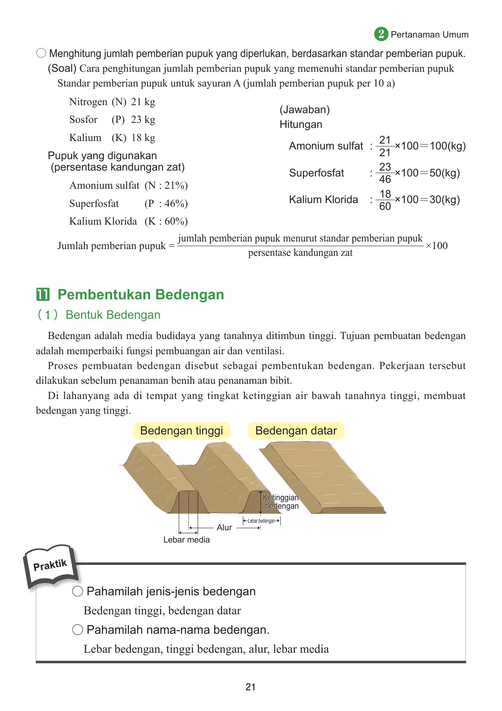
Teks halaman 27
21
Pertanaman Umum
２
○Menghitung jumlah pemberian pupuk yang diperlukan, berdasarkan standar pemberian pupuk.
(Soal) Cara penghitungan jumlah pemberian pupuk yang memenuhi standar pemberian pupuk
Standar pemberian pupuk untuk sayuran A (jumlah pemberian pupuk per 10 a)
Nitrogen (N) 21 kg
Sosfor
(P) 23 kg
Kalium (K) 18 kg
Pupuk yang digunakan
(persentase kandungan zat)
Amonium sulfat (N : 21%)
Superfosfat
(P : 46%)
Kalium Klorida (K : 60%)
Jumlah pemberian pupuk = jumlah pemberian pupuk menurut standar pemberian pupuk
persentase kandungan zat
×100
ⵍPembentukan Bedengan
（１）Bentuk Bedengan
Bedengan adalah media budidaya yang tanahnya ditimbun tinggi. Tujuan pembuatan bedengan
adalah memperbaiki fungsi pembuangan air dan ventilasi.
Proses pembuatan bedengan disebut sebagai pembentukan bedengan. Pekerjaan tersebut
dilakukan sebelum penanaman benih atau penanaman bibit.
Di lahanyang ada di tempat yang tingkat ketinggian air bawah tanahnya tinggi, membuat
bedengan yang tinggi.
(Jawaban)
Hitungan
Amonium sulfat : 21
21 ×100＝100(kg)
Superfosfat
: 23
46 ×100＝50(kg)
Kalium Klorida : 18
60 ×100＝30(kg)
Bedengan datar
Bedengan tinggi
Lebar bedengan
Alur
Lebar media
Ketinggian
bedengan
Ketinggian
bedengan
Praktik
○Pahamilah jenis-jenis bedengan
Bedengan tinggi, bedengan datar
○Pahamilah nama-nama bedengan.
Lebar bedengan, tinggi bedengan, alur, lebar media
Halaman 28
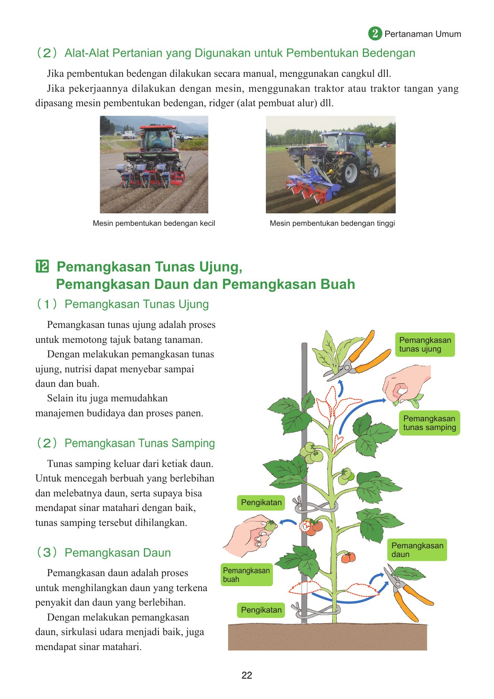
Teks halaman 28
22
Pertanaman Umum
２
（２）Alat-Alat Pertanian yang Digunakan untuk Pembentukan Bedengan
Jika pembentukan bedengan dilakukan secara manual, menggunakan cangkul dll.
Jika pekerjaannya dilakukan dengan mesin, menggunakan traktor atau traktor tangan yang
dipasang mesin pembentukan bedengan, ridger (alat pembuat alur) dll.
ⵎ�Pemangkasan Tunas Ujung,
Pemangkasan Daun dan Pemangkasan Buah
（１）Pemangkasan Tunas Ujung
Pemangkasan tunas ujung adalah proses
untuk memotong tajuk batang tanaman.
Dengan melakukan pemangkasan tunas
ujung, nutrisi dapat menyebar sampai
daun dan buah.
Selain itu juga memudahkan
manajemen budidaya dan proses panen.
（２）Pemangkasan Tunas Samping
Tunas samping keluar dari ketiak daun.
Untuk mencegah berbuah yang berlebihan
dan melebatnya daun, serta supaya bisa
mendapat sinar matahari dengan baik,
tunas samping tersebut dihilangkan.
（３）Pemangkasan Daun
Pemangkasan daun adalah proses
untuk menghilangkan daun yang terkena
penyakit dan daun yang berlebihan.
Dengan melakukan pemangkasan
daun, sirkulasi udara menjadi baik, juga
mendapat sinar matahari.
Mesin pembentukan bedengan kecil
Mesin pembentukan bedengan tinggi
Pemangkasan
tunas samping
Pemangkasan
tunas ujung
Pengikatan
Pengikatan
Pemangkasan
daun
Pemangkasan
buah
Halaman 29
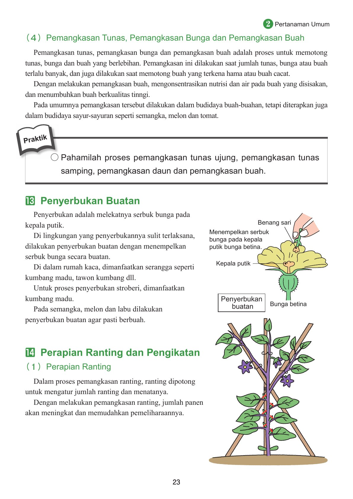
Teks halaman 29
23
Pertanaman Umum
２
（４）Pemangkasan Tunas, Pemangkasan Bunga dan Pemangkasan Buah
Pemangkasan tunas, pemangkasan bunga dan pemangkasan buah adalah proses untuk memotong
tunas, bunga dan buah yang berlebihan. Pemangkasan ini dilakukan saat jumlah tunas, bunga atau buah
terlalu banyak, dan juga dilakukan saat memotong buah yang terkena hama atau buah cacat.
Dengan melakukan pemangkasan buah, mengonsentrasikan nutrisi dan air pada buah yang disisakan,
dan menumbuhkan buah berkualitas tinngi.
Pada umumnya pemangkasan tersebut dilakukan dalam budidaya buah-buahan, tetapi diterapkan juga
dalam budidaya sayur-sayuran seperti semangka, melon dan tomat.
ⵏPenyerbukan Buatan
Penyerbukan adalah melekatnya serbuk bunga pada
kepala putik.
Di lingkungan yang penyerbukannya sulit terlaksana,
dilakukan penyerbukan buatan dengan menempelkan
serbuk bunga secara buatan.
Di dalam rumah kaca, dimanfaatkan serangga seperti
kumbang madu, tawon kumbang dll.
Untuk proses penyerbukan stroberi, dimanfaatkan
kumbang madu.
Pada semangka, melon dan labu dilakukan
penyerbukan buatan agar pasti berbuah.
ⵐPerapian Ranting dan Pengikatan
（１）Perapian Ranting
Dalam proses pemangkasan ranting, ranting dipotong
untuk mengatur jumlah ranting dan menatanya.
Dengan melakukan pemangkasan ranting, jumlah panen
akan meningkat dan memudahkan pemeliharaannya.
Praktik
○ Pahamilah proses pemangkasan tunas ujung, pemangkasan tunas
samping, pemangkasan daun dan pemangkasan buah.
Benang sari
Bunga betina
Kepala putik
Menempelkan serbuk
bunga pada kepala
putik bunga betina.
Penyerbukan
buatan
Halaman 30
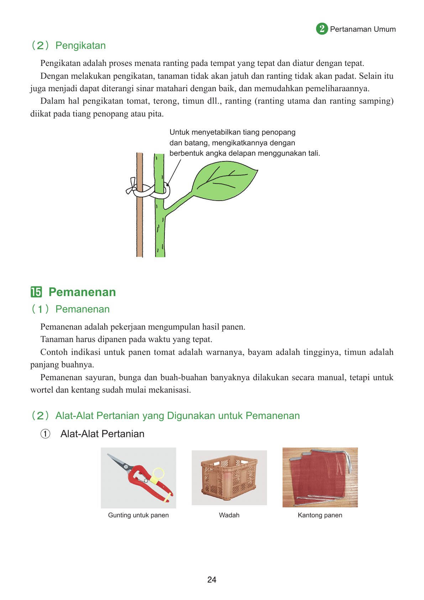
Teks halaman 30
24
Pertanaman Umum
２
（２）Pengikatan
Pengikatan adalah proses menata ranting pada tempat yang tepat dan diatur dengan tepat.
Dengan melakukan pengikatan, tanaman tidak akan jatuh dan ranting tidak akan padat. Selain itu
juga menjadi dapat diterangi sinar matahari dengan baik, dan memudahkan pemeliharaannya.
Dalam hal pengikatan tomat, terong, timun dll., ranting (ranting utama dan ranting samping)
diikat pada tiang penopang atau pita.
ⵑPemanenan
（１）Pemanenan
Pemanenan adalah pekerjaan mengumpulan hasil panen.
Tanaman harus dipanen pada waktu yang tepat.
Contoh indikasi untuk panen tomat adalah warnanya, bayam adalah tingginya, timun adalah
panjang buahnya.
Pemanenan sayuran, bunga dan buah-buahan banyaknya dilakukan secara manual, tetapi untuk
wortel dan kentang sudah mulai mekanisasi.
（２）Alat-Alat Pertanian yang Digunakan untuk Pemanenan
① Alat-Alat Pertanian
Untuk menyetabilkan tiang penopang
dan batang, mengikatkannya dengan
berbentuk angka delapan menggunakan tali.
Gunting untuk panen
Kantong panen
Wadah
Halaman 31
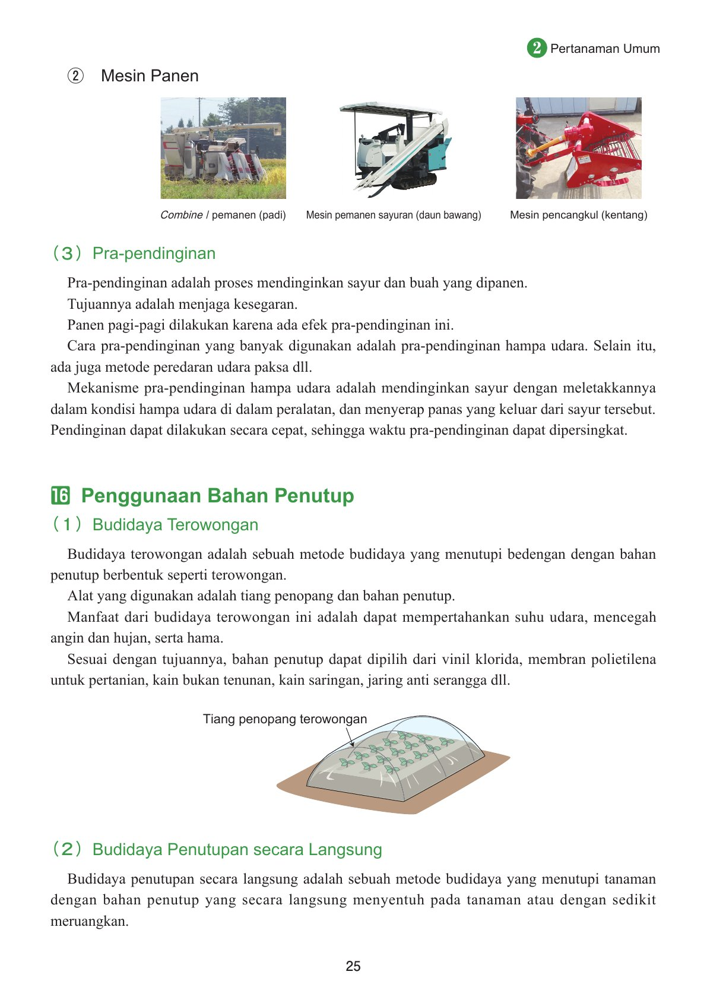
Teks halaman 31
25
Pertanaman Umum
２
② Mesin Panen
（３）Pra-pendinginan
Pra-pendinginan adalah proses mendinginkan sayur dan buah yang dipanen.
Tujuannya adalah menjaga kesegaran.
Panen pagi-pagi dilakukan karena ada efek pra-pendinginan ini.
Cara pra-pendinginan yang banyak digunakan adalah pra-pendinginan hampa udara. Selain itu,
ada juga metode peredaran udara paksa dll.
Mekanisme pra-pendinginan hampa udara adalah mendinginkan sayur dengan meletakkannya
dalam kondisi hampa udara di dalam peralatan, dan menyerap panas yang keluar dari sayur tersebut.
Pendinginan dapat dilakukan secara cepat, sehingga waktu pra-pendinginan dapat dipersingkat.
ⵒPenggunaan Bahan Penutup
（１）Budidaya Terowongan
Budidaya terowongan adalah sebuah metode budidaya yang menutupi bedengan dengan bahan
penutup berbentuk seperti terowongan.
Alat yang digunakan adalah tiang penopang dan bahan penutup.
Manfaat dari budidaya terowongan ini adalah dapat mempertahankan suhu udara, mencegah
angin dan hujan, serta hama.
Sesuai dengan tujuannya, bahan penutup dapat dipilih dari vinil klorida, membran polietilena
untuk pertanian, kain bukan tenunan, kain saringan, jaring anti serangga dll.
（２）Budidaya Penutupan secara Langsung
Budidaya penutupan secara langsung adalah sebuah metode budidaya yang menutupi tanaman
dengan bahan penutup yang secara langsung menyentuh pada tanaman atau dengan sedikit
meruangkan.
Mesin pemanen sayuran (daun bawang)
Combine / pemanen (padi)
Mesin pencangkul (kentang)
Tiang penopang terowongan
Halaman 32
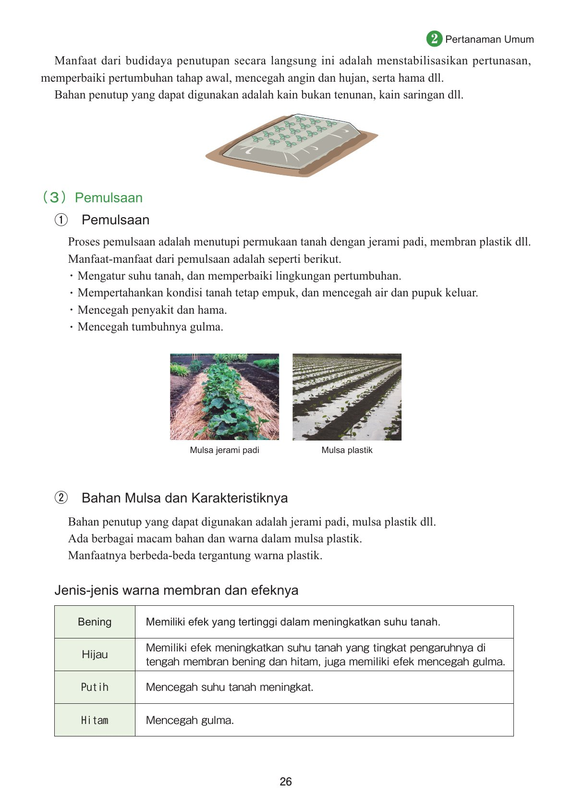
Teks halaman 32
26
Pertanaman Umum
２
Manfaat dari budidaya penutupan secara langsung ini adalah menstabilisasikan pertunasan,
memperbaiki pertumbuhan tahap awal, mencegah angin dan hujan, serta hama dll.
Bahan penutup yang dapat digunakan adalah kain bukan tenunan, kain saringan dll.
（３）Pemulsaan
① Pemulsaan
Proses pemulsaan adalah menutupi permukaan tanah dengan jerami padi, membran plastik dll.
Manfaat-manfaat dari pemulsaan adalah seperti berikut.
・Mengatur suhu tanah, dan memperbaiki lingkungan pertumbuhan.
・Mempertahankan kondisi tanah tetap empuk, dan mencegah air dan pupuk keluar.
・Mencegah penyakit dan hama.
・Mencegah tumbuhnya gulma.
② Bahan Mulsa dan Karakteristiknya
Bahan penutup yang dapat digunakan adalah jerami padi, mulsa plastik dll.
Ada berbagai macam bahan dan warna dalam mulsa plastik.
Manfaatnya berbeda-beda tergantung warna plastik.
Jenis-jenis warna membran dan efeknya
Mulsa plastik
Mulsa jerami padi
Bening
Memiliki efek yang tertinggi dalam meningkatkan suhu tanah.
Hijau
Memiliki efek meningkatkan suhu tanah yang tingkat pengaruhnya di
tengah membran bening dan hitam, juga memiliki efek mencegah gulma.
Ｐｕｔｉｈ
Mencegah suhu tanah meningkat.
Ｈｉｔａｍ
Mencegah gulma.
Halaman 33
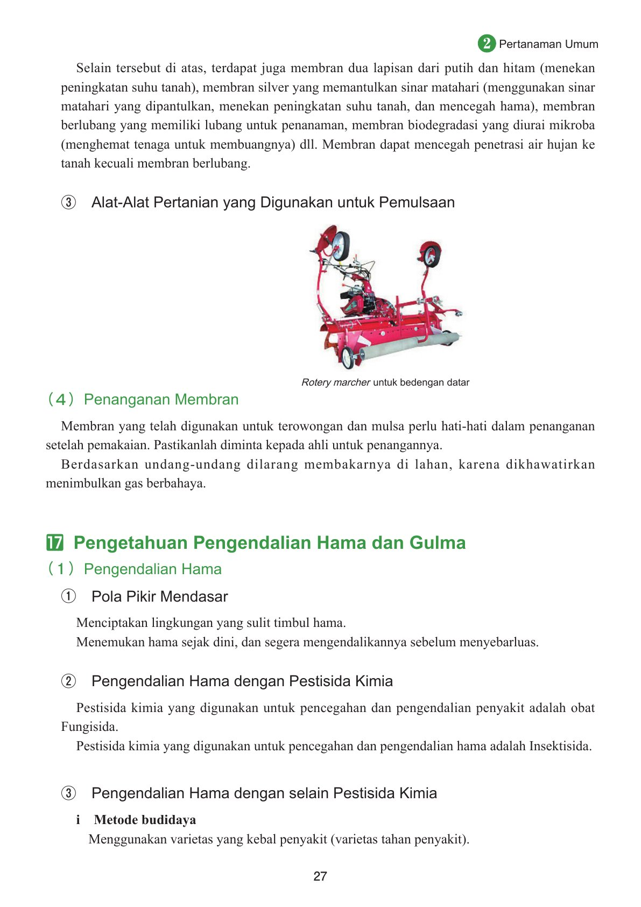
Teks halaman 33
27
Pertanaman Umum
２
Selain tersebut di atas, terdapat juga membran dua lapisan dari putih dan hitam (menekan
peningkatan suhu tanah), membran silver yang memantulkan sinar matahari (menggunakan sinar
matahari yang dipantulkan, menekan peningkatan suhu tanah, dan mencegah hama), membran
berlubang yang memiliki lubang untuk penanaman, membran biodegradasi yang diurai mikroba
(menghemat tenaga untuk membuangnya) dll. Membran dapat mencegah penetrasi air hujan ke
tanah kecuali membran berlubang.
③ Alat-Alat Pertanian yang Digunakan untuk Pemulsaan
（４）Penanganan Membran
Membran yang telah digunakan untuk terowongan dan mulsa perlu hati-hati dalam penanganan
setelah pemakaian. Pastikanlah diminta kepada ahli untuk penangannya.
Berdasarkan undang-undang dilarang membakarnya di lahan, karena dikhawatirkan
menimbulkan gas berbahaya.
ⵓPengetahuan Pengendalian Hama dan Gulma
（１）Pengendalian Hama
① Pola Pikir Mendasar
Menciptakan lingkungan yang sulit timbul hama.
Menemukan hama sejak dini, dan segera mengendalikannya sebelum menyebarluas.
② Pengendalian Hama dengan Pestisida Kimia
Pestisida kimia yang digunakan untuk pencegahan dan pengendalian penyakit adalah obat
Fungisida.
Pestisida kimia yang digunakan untuk pencegahan dan pengendalian hama adalah Insektisida.
③ Pengendalian Hama dengan selain Pestisida Kimia
i Metode budidaya
Menggunakan varietas yang kebal penyakit (varietas tahan penyakit).
Rotery marcher untuk bedengan datar
Halaman 34
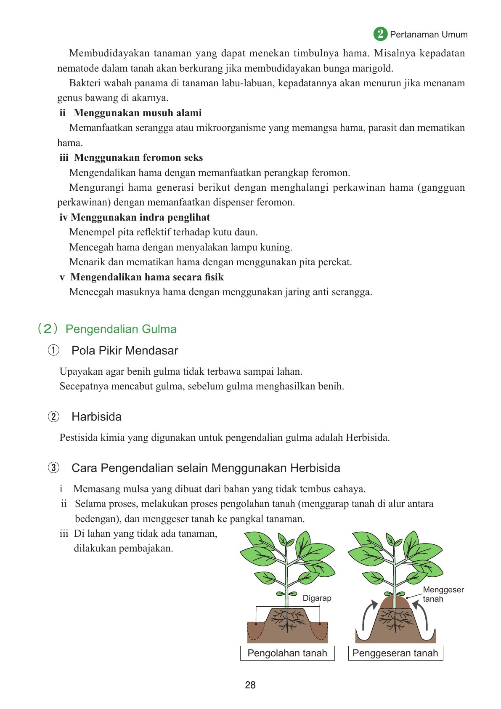
Teks halaman 34
28
Pertanaman Umum
２
Membudidayakan tanaman yang dapat menekan timbulnya hama. Misalnya kepadatan
nematode dalam tanah akan berkurang jika membudidayakan bunga marigold.
Bakteri wabah panama di tanaman labu-labuan, kepadatannya akan menurun jika menanam
genus bawang di akarnya.
ii Menggunakan musuh alami
Memanfaatkan serangga atau mikroorganisme yang memangsa hama, parasit dan mematikan
hama.
iii Menggunakan feromon seks
Mengendalikan hama dengan memanfaatkan perangkap feromon.
Mengurangi hama generasi berikut dengan menghalangi perkawinan hama (gangguan
perkawinan) dengan memanfaatkan dispenser feromon.
iv Menggunakan indra penglihat
Menempel pita reflektif terhadap kutu daun.
Mencegah hama dengan menyalakan lampu kuning.
Menarik dan mematikan hama dengan menggunakan pita perekat.
v Mengendalikan hama secara fisik
Mencegah masuknya hama dengan menggunakan jaring anti serangga.
（２）Pengendalian Gulma
① Pola Pikir Mendasar
Upayakan agar benih gulma tidak terbawa sampai lahan.
Secepatnya mencabut gulma, sebelum gulma menghasilkan benih.
② Harbisida
Pestisida kimia yang digunakan untuk pengendalian gulma adalah Herbisida.
③ Cara Pengendalian selain Menggunakan Herbisida
i �Memasang mulsa yang dibuat dari bahan yang tidak tembus cahaya.
ii �Selama proses, melakukan proses pengolahan tanah (menggarap tanah di alur antara
bedengan), dan menggeser tanah ke pangkal tanaman.
iii �Di lahan yang tidak ada tanaman,
dilakukan pembajakan.
Digarap
Pengolahan tanah
Menggeser
tanah
Penggeseran tanah
Halaman 35
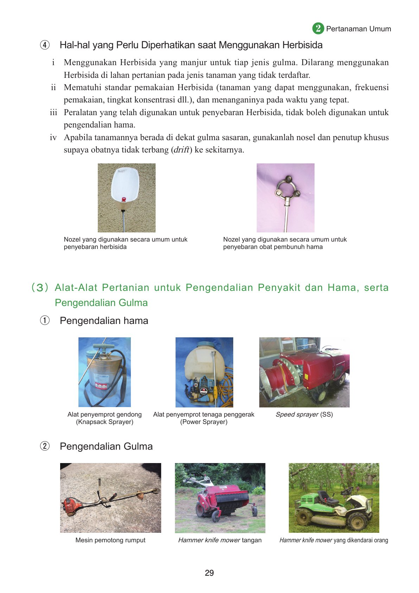
Teks halaman 35
29
Pertanaman Umum
２
④ Hal-hal yang Perlu Diperhatikan saat Menggunakan Herbisida
i �Menggunakan Herbisida yang manjur untuk tiap jenis gulma. Dilarang menggunakan
Herbisida di lahan pertanian pada jenis tanaman yang tidak terdaftar.
ii �Mematuhi standar pemakaian Herbisida (tanaman yang dapat menggunakan, frekuensi
pemakaian, tingkat konsentrasi dll.), dan menanganinya pada waktu yang tepat.
iii �Peralatan yang telah digunakan untuk penyebaran Herbisida, tidak boleh digunakan untuk
pengendalian hama.
iv �Apabila tanamannya berada di dekat gulma sasaran, gunakanlah nosel dan penutup khusus
supaya obatnya tidak terbang (drift) ke sekitarnya.
（３）�Alat-Alat Pertanian untuk Pengendalian Penyakit dan Hama, serta
Pengendalian Gulma
① Pengendalian hama
② Pengendalian Gulma
Nozel yang digunakan secara umum untuk
penyebaran herbisida
Nozel yang digunakan secara umum untuk
penyebaran obat pembunuh hama
Speed sprayer (SS)
Alat penyemprot gendong
(Knapsack Sprayer)
Alat penyemprot tenaga penggerak
(Power Sprayer)
Hammer knife mower tangan
Hammer knife mower yang dikendarai orang
Mesin pemotong rumput
Halaman 36
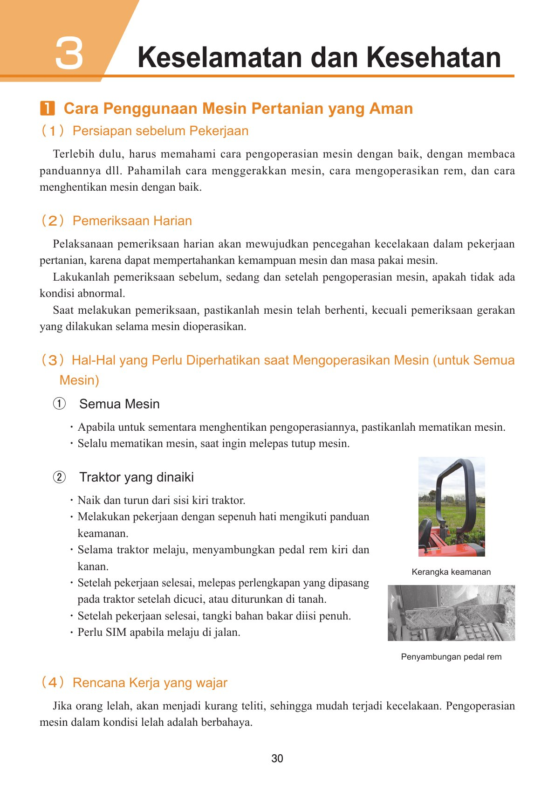
Teks halaman 36
30
1 Cara Penggunaan Mesin Pertanian yang Aman
（１）Persiapan sebelum Pekerjaan
Terlebih dulu, harus memahami cara pengoperasian mesin dengan baik, dengan membaca
panduannya dll. Pahamilah cara menggerakkan mesin, cara mengoperasikan rem, dan cara
menghentikan mesin dengan baik.
（２）Pemeriksaan Harian
Pelaksanaan pemeriksaan harian akan mewujudkan pencegahan kecelakaan dalam pekerjaan
pertanian, karena dapat mempertahankan kemampuan mesin dan masa pakai mesin.
Lakukanlah pemeriksaan sebelum, sedang dan setelah pengoperasian mesin, apakah tidak ada
kondisi abnormal.
Saat melakukan pemeriksaan, pastikanlah mesin telah berhenti, kecuali pemeriksaan gerakan
yang dilakukan selama mesin dioperasikan.
（３�）Hal-Hal yang Perlu Diperhatikan saat Mengoperasikan Mesin (untuk Semua
Mesin)
① Semua Mesin
・Apabila untuk sementara menghentikan pengoperasiannya, pastikanlah mematikan mesin.
・Selalu mematikan mesin, saat ingin melepas tutup mesin.
② Traktor yang dinaiki
・Naik dan turun dari sisi kiri traktor.
・�Melakukan pekerjaan dengan sepenuh hati mengikuti panduan
keamanan.
・�Selama traktor melaju, menyambungkan pedal rem kiri dan
kanan.
・�Setelah pekerjaan selesai, melepas perlengkapan yang dipasang
pada traktor setelah dicuci, atau diturunkan di tanah.
・Setelah pekerjaan selesai, tangki bahan bakar diisi penuh.
・Perlu SIM apabila melaju di jalan.
（４）Rencana Kerja yang wajar
Jika orang lelah, akan menjadi kurang teliti, sehingga mudah terjadi kecelakaan. Pengoperasian
mesin dalam kondisi lelah adalah berbahaya.
Keselamatan dan Kesehatan
3
Penyambungan pedal rem
Kerangka keamanan
Halaman 37
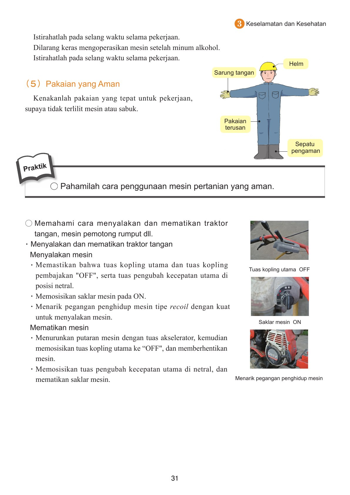
Teks halaman 37
Keselamatan dan Kesehatan
３
31
Istirahatlah pada selang waktu selama pekerjaan.
Dilarang keras mengoperasikan mesin setelah minum alkohol.
Istirahatlah pada selang waktu selama pekerjaan.
（５）Pakaian yang Aman
Kenakanlah pakaian yang tepat untuk pekerjaan,
supaya tidak terlilit mesin atau sabuk.
○ Memahami cara menyalakan dan mematikan traktor
tangan, mesin pemotong rumput dll.
・Menyalakan dan mematikan traktor tangan
Menyalakan mesin
・�Memastikan bahwa tuas kopling utama dan tuas kopling
pembajakan "OFF", serta tuas pengubah kecepatan utama di
posisi netral.
・�Memosisikan saklar mesin pada ON.
・�Menarik pegangan penghidup mesin tipe recoil dengan kuat
untuk menyalakan mesin.
Mematikan mesin
・�Menurunkan putaran mesin dengan tuas akselerator, kemudian
memosisikan tuas kopling utama ke “OFF", dan memberhentikan
mesin.
・�Memosisikan tuas pengubah kecepatan utama di netral, dan
mematikan saklar mesin.
Helm
Sepatu
pengaman
Pakaian
terusan
Sarung tangan
○Pahamilah cara penggunaan mesin pertanian yang aman.
○
Praktik
Saklar mesin ON
Tuas kopling utama OFF
Menarik pegangan penghidup mesin
Halaman 38
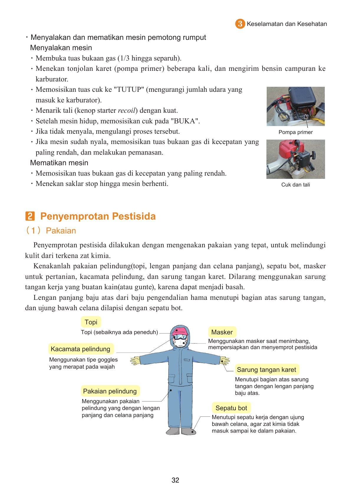
Teks halaman 38
Keselamatan dan Kesehatan
３
32
・Menyalakan dan mematikan mesin pemotong rumput
Menyalakan mesin
・Membuka tuas bukaan gas (1/3 hingga separuh).
・�Menekan tonjolan karet (pompa primer) beberapa kali, dan mengirim bensin campuran ke
karburator.
・�Memosisikan tuas cuk ke "TUTUP" (mengurangi jumlah udara yang
masuk ke karburator).
・Menarik tali (kenop starter recoil) dengan kuat.
・Setelah mesin hidup, memosisikan cuk pada "BUKA".
・Jika tidak menyala, mengulangi proses tersebut.
・�Jika mesin sudah nyala, memosisikan tuas bukaan gas di kecepatan yang
paling rendah, dan melakukan pemanasan.
Mematikan mesin
・Memosisikan tuas bukaan gas di kecepatan yang paling rendah.
・Menekan saklar stop hingga mesin berhenti.
2 Penyemprotan Pestisida
（１）Pakaian
Penyemprotan pestisida dilakukan dengan mengenakan pakaian yang tepat, untuk melindungi
kulit dari terkena zat kimia.
Kenakanlah pakaian pelindung(topi, lengan panjang dan celana panjang), sepatu bot, masker
untuk pertanian, kacamata pelindung, dan sarung tangan karet. Dilarang menggunakan sarung
tangan kerja yang buatan kain(atau gunte), karena dapat menjadi basah.
Lengan panjang baju atas dari baju pengendalian hama menutupi bagian atas sarung tangan,
dan ujung bawah celana dilapisi dengan sepatu bot.
Topi
Sarung tangan karet
Sepatu bot
Kacamata pelindung
Topi (sebaiknya ada peneduh)
Menggunakan tipe goggles
yang merapat pada wajah
Pakaian pelindung
Masker
Menggunakan pakaian
pelindung yang dengan lengan
panjang dan celana panjang
Menutupi bagian atas sarung
tangan dengan lengan panjang
baju atas.
Menggunakan masker saat menimbang,
mempersiapkan dan menyemprot pestisida
Menutupi sepatu kerja dengan ujung
bawah celana, agar zat kimia tidak
masuk sampai ke dalam pakaian.
Cuk dan tali
Pompa primer
Halaman 39
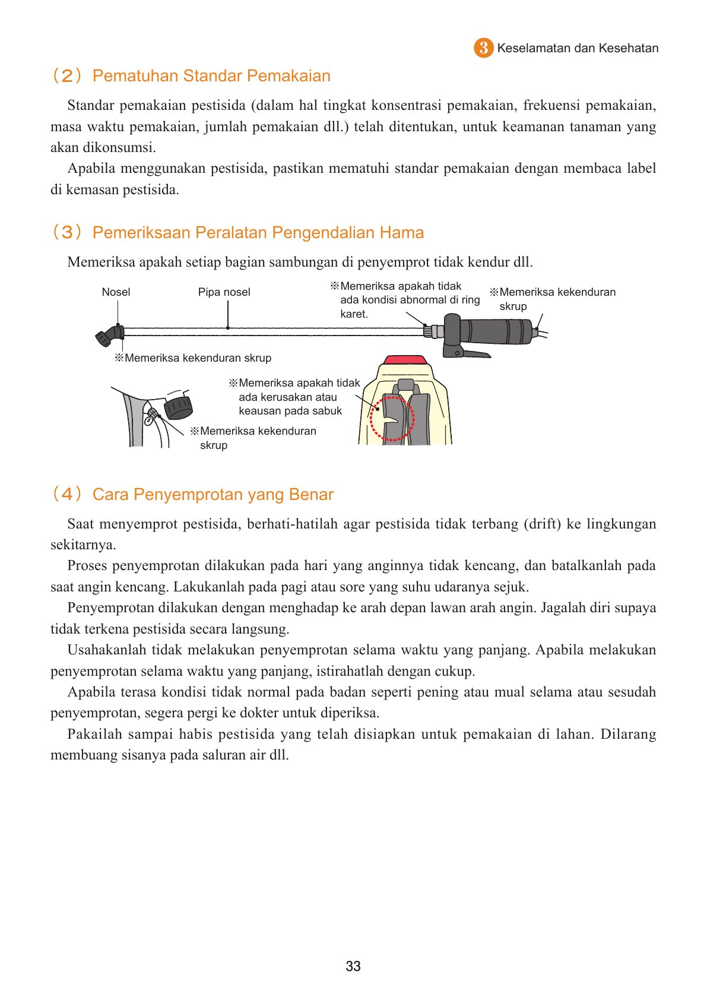
Teks halaman 39
Keselamatan dan Kesehatan
３
33
（２）Pematuhan Standar Pemakaian
Standar pemakaian pestisida (dalam hal tingkat konsentrasi pemakaian, frekuensi pemakaian,
masa waktu pemakaian, jumlah pemakaian dll.) telah ditentukan, untuk keamanan tanaman yang
akan dikonsumsi.
Apabila menggunakan pestisida, pastikan mematuhi standar pemakaian dengan membaca label
di kemasan pestisida.
（３）Pemeriksaan Peralatan Pengendalian Hama
Memeriksa apakah setiap bagian sambungan di penyemprot tidak kendur dll.
（４）Cara Penyemprotan yang Benar
Saat menyemprot pestisida, berhati-hatilah agar pestisida tidak terbang (drift) ke lingkungan
sekitarnya.
Proses penyemprotan dilakukan pada hari yang anginnya tidak kencang, dan batalkanlah pada
saat angin kencang. Lakukanlah pada pagi atau sore yang suhu udaranya sejuk.
Penyemprotan dilakukan dengan menghadap ke arah depan lawan arah angin. Jagalah diri supaya
tidak terkena pestisida secara langsung.
Usahakanlah tidak melakukan penyemprotan selama waktu yang panjang. Apabila melakukan
penyemprotan selama waktu yang panjang, istirahatlah dengan cukup.
Apabila terasa kondisi tidak normal pada badan seperti pening atau mual selama atau sesudah
penyemprotan, segera pergi ke dokter untuk diperiksa.
Pakailah sampai habis pestisida yang telah disiapkan untuk pemakaian di lahan. Dilarang
membuang sisanya pada saluran air dll.
Nosel
※Memeriksa kekenduran skrup
Pipa nosel
※Memeriksa kekenduran
skrup
※Memeriksa kekenduran
skrup
※Memeriksa apakah tidak
ada kondisi abnormal di ring
karet.
※Memeriksa apakah tidak
ada kerusakan atau
keausan pada sabuk
Halaman 40
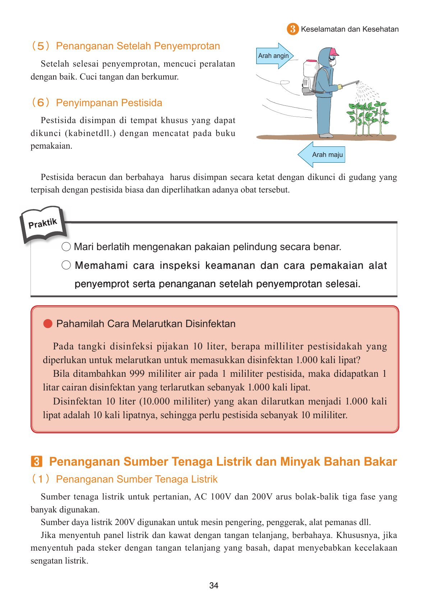
Teks halaman 40
Keselamatan dan Kesehatan
３
34
（５）Penanganan Setelah Penyemprotan
Setelah selesai penyemprotan, mencuci peralatan
dengan baik. Cuci tangan dan berkumur.
（６）Penyimpanan Pestisida
Pestisida disimpan di tempat khusus yang dapat
dikunci (kabinetdll.) dengan mencatat pada buku
pemakaian.
Pestisida beracun dan berbahaya harus disimpan secara ketat dengan dikunci di gudang yang
terpisah dengan pestisida biasa dan diperlihatkan adanya obat tersebut.
3 Penanganan Sumber Tenaga Listrik dan Minyak Bahan Bakar
（１）Penanganan Sumber Tenaga Listrik
Sumber tenaga listrik untuk pertanian, AC 100V dan 200V arus bolak-balik tiga fase yang
banyak digunakan.
Sumber daya listrik 200V digunakan untuk mesin pengering, penggerak, alat pemanas dll.
Jika menyentuh panel listrik dan kawat dengan tangan telanjang, berbahaya. Khususnya, jika
menyentuh pada steker dengan tangan telanjang yang basah, dapat menyebabkan kecelakaan
sengatan listrik.
Arah angin
Arah maju
Praktik
○Mari berlatih mengenakan pakaian pelindung secara benar.
○ Memahami cara inspeksi keamanan dan cara pemakaian alat
penyemprot serta penanganan setelah penyemprotan selesai.
●�Pahamilah Cara Melarutkan Disinfektan
Pada tangki disinfeksi pijakan 10 liter, berapa milliliter pestisidakah yang
diperlukan untuk melarutkan untuk memasukkan disinfektan 1.000 kali lipat?
Bila ditambahkan 999 mililiter air pada 1 mililiter pestisida, maka didapatkan 1
litar cairan disinfektan yang terlarutkan sebanyak 1.000 kali lipat.
Disinfektan 10 liter (10.000 mililiter) yang akan dilarutkan menjadi 1.000 kali
lipat adalah 10 kali lipatnya, sehingga perlu pestisida sebanyak 10 mililiter.
Halaman 41
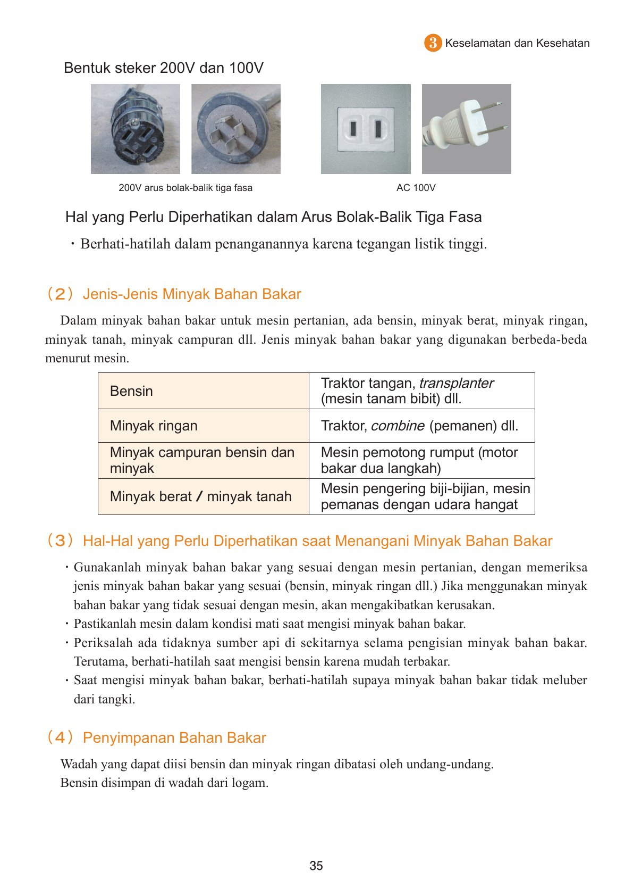
Teks halaman 41
Keselamatan dan Kesehatan
３
35
（２）Jenis-Jenis Minyak Bahan Bakar
Dalam minyak bahan bakar untuk mesin pertanian, ada bensin, minyak berat, minyak ringan,
minyak tanah, minyak campuran dll. Jenis minyak bahan bakar yang digunakan berbeda-beda
menurut mesin.
（３）Hal-Hal yang Perlu Diperhatikan saat Menangani Minyak Bahan Bakar
・�Gunakanlah minyak bahan bakar yang sesuai dengan mesin pertanian, dengan memeriksa
jenis minyak bahan bakar yang sesuai (bensin, minyak ringan dll.) Jika menggunakan minyak
bahan bakar yang tidak sesuai dengan mesin, akan mengakibatkan kerusakan.
・�Pastikanlah mesin dalam kondisi mati saat mengisi minyak bahan bakar.
・�Periksalah ada tidaknya sumber api di sekitarnya selama pengisian minyak bahan bakar.
Terutama, berhati-hatilah saat mengisi bensin karena mudah terbakar.
・�Saat mengisi minyak bahan bakar, berhati-hatilah supaya minyak bahan bakar tidak meluber
dari tangki.
（４）Penyimpanan Bahan Bakar
Wadah yang dapat diisi bensin dan minyak ringan dibatasi oleh undang-undang.
Bensin disimpan di wadah dari logam.
200V arus bolak-balik tiga fasa
AC 100V
Bentuk steker 200V dan 100V
Hal yang Perlu Diperhatikan dalam Arus Bolak-Balik Tiga Fasa
・Berhati-hatilah dalam penanganannya karena tegangan listik tinggi.
Bensin
Traktor tangan, transplanter
(mesin tanam bibit) dll.
Minyak ringan
Traktor, combine (pemanen) dll.
Minyak campuran bensin dan
minyak
Mesin pemotong rumput (motor
bakar dua langkah)
Minyak berat / minyak tanah
Mesin pengering biji-bijian, mesin
pemanas dengan udara hangat
Halaman 42
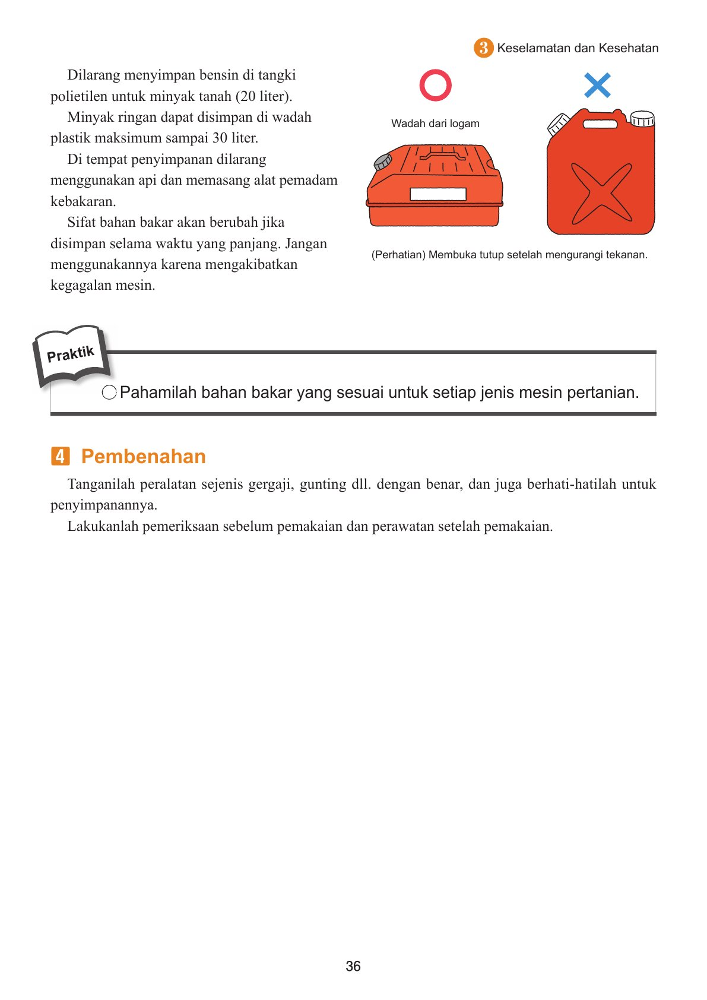
Teks halaman 42
Keselamatan dan Kesehatan
３
36
Dilarang menyimpan bensin di tangki
polietilen untuk minyak tanah (20 liter).
Minyak ringan dapat disimpan di wadah
plastik maksimum sampai 30 liter.
Di tempat penyimpanan dilarang
menggunakan api dan memasang alat pemadam
kebakaran.
Sifat bahan bakar akan berubah jika
disimpan selama waktu yang panjang. Jangan
menggunakannya karena mengakibatkan
kegagalan mesin.
4 Pembenahan
Tanganilah peralatan sejenis gergaji, gunting dll. dengan benar, dan juga berhati-hatilah untuk
penyimpanannya.
Lakukanlah pemeriksaan sebelum pemakaian dan perawatan setelah pemakaian.
○Pahamilah bahan bakar yang sesuai untuk setiap jenis mesin pertanian.
○
Praktik
(Perhatian) Membuka tutup setelah mengurangi tekanan.
Wadah dari logam
Halaman 43
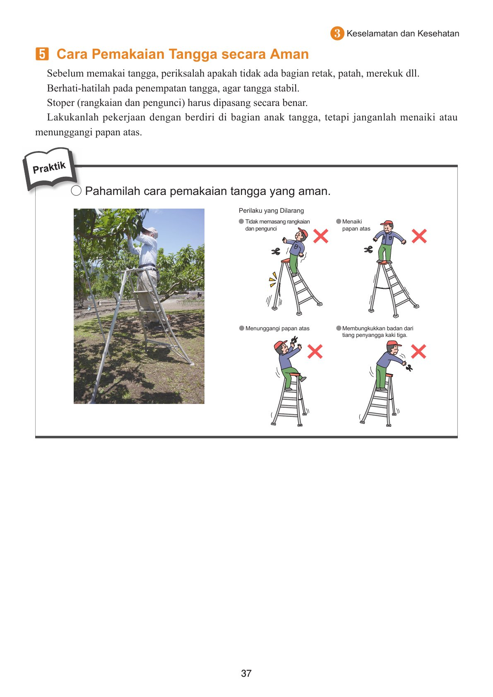
Teks halaman 43
Keselamatan dan Kesehatan
３
37
5 Cara Pemakaian Tangga secara Aman
Sebelum memakai tangga, periksalah apakah tidak ada bagian retak, patah, merekuk dll.
Berhati-hatilah pada penempatan tangga, agar tangga stabil.
Stoper (rangkaian dan pengunci) harus dipasang secara benar.
Lakukanlah pekerjaan dengan berdiri di bagian anak tangga, tetapi janganlah menaiki atau
menunggangi papan atas.
Praktik
○Pahamilah cara pemakaian tangga yang aman.
Perilaku yang Dilarang
●Tidak memasang rangkaian
dan pengunci
●Menaiki
papan atas
●Menunggangi papan atas
●Membungkukkan badan dari
tiang penyangga kaki tiga.
Halaman 44
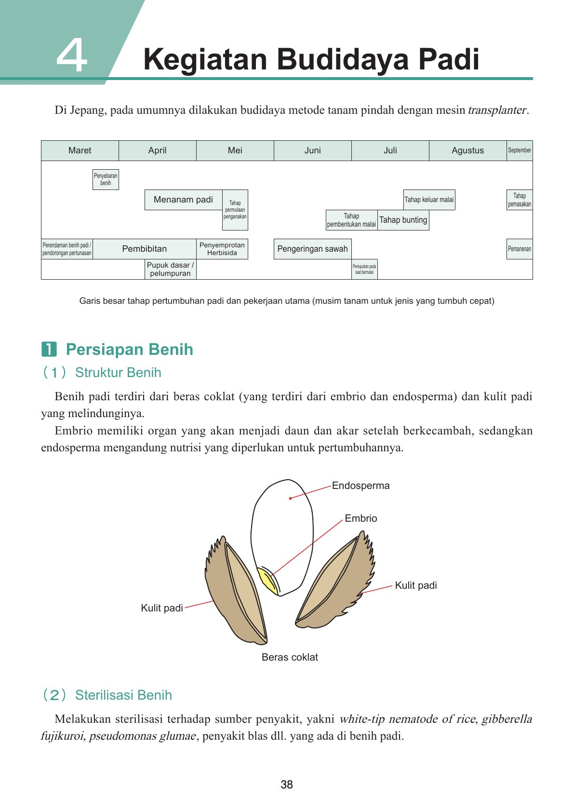
Teks halaman 44
38
Di Jepang, pada umumnya dilakukan budidaya metode tanam pindah dengan mesin transplanter.
Maret
April
Mei
Juni
Juli
Agustus
September
Penyebaran
benih
Menanam padi
Tahap
permulaan
penganakan
Tahap keluar malai
Tahap
pemasakan
Tahap
pembentukan malai Tahap bunting
Perendaman benih padi /
pendorongan pertunasan
Pembibitan
Penyemprotan
Herbisida
Pengeringan sawah
Pemanenan
Pupuk dasar /
pelumpuran
Pemupukan pada
saat bermalai
Garis besar tahap pertumbuhan padi dan pekerjaan utama (musim tanam untuk jenis yang tumbuh cepat)
1 Persiapan Benih
（１）Struktur Benih
Benih padi terdiri dari beras coklat (yang terdiri dari embrio dan endosperma) dan kulit padi
yang melindunginya.
Embrio memiliki organ yang akan menjadi daun dan akar setelah berkecambah, sedangkan
endosperma mengandung nutrisi yang diperlukan untuk pertumbuhannya.
（２）Sterilisasi Benih
Melakukan sterilisasi terhadap sumber penyakit, yakni white-tip nematode of rice, gibberella
fujikuroi, pseudomonas glumae, penyakit blas dll. yang ada di benih padi.
Endosperma
Embrio
Kulit padi
Kulit padi
Beras coklat
Kegiatan Budidaya Padi
4
Halaman 45
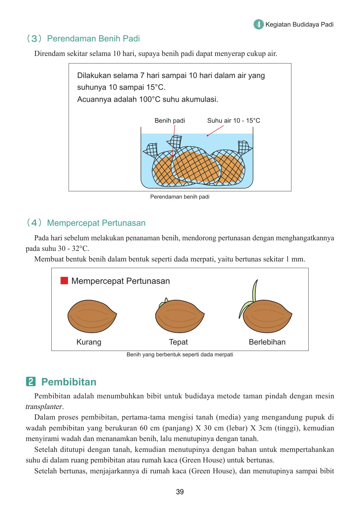
Teks halaman 45
4
39
Kegiatan Budidaya Padi
（３）Perendaman Benih Padi
Direndam sekitar selama 10 hari, supaya benih padi dapat menyerap cukup air.
Perendaman benih padi
（４）Mempercepat Pertunasan
Pada hari sebelum melakukan penanaman benih, mendorong pertunasan dengan menghangatkannya
pada suhu 30 - 32°C.
Membuat bentuk benih dalam bentuk seperti dada merpati, yaitu bertunas sekitar 1 mm.
Benih yang berbentuk seperti dada merpati
2 Pembibitan
Pembibitan adalah menumbuhkan bibit untuk budidaya metode taman pindah dengan mesin
transplanter.
Dalam proses pembibitan, pertama-tama mengisi tanah (media) yang mengandung pupuk di
wadah pembibitan yang berukuran 60 cm (panjang) X 30 cm (lebar) X 3cm (tinggi), kemudian
menyirami wadah dan menanamkan benih, lalu menutupinya dengan tanah.
Setelah ditutupi dengan tanah, kemudian menutupinya dengan bahan untuk mempertahankan
suhu di dalam ruang pembibitan atau rumah kaca (Green House) untuk bertunas.
Setelah bertunas, menjajarkannya di rumah kaca (Green House), dan menutupinya sampai bibit
Dilakukan selama 7 hari sampai 10 hari dalam air yang
suhunya 10 sampai 15°C.
Acuannya adalah 100°C suhu akumulasi.
Benih padi
Suhu air 10 - 15°C
■ Mempercepat Pertunasan
Kurang
Tepat
Berlebihan
Halaman 46
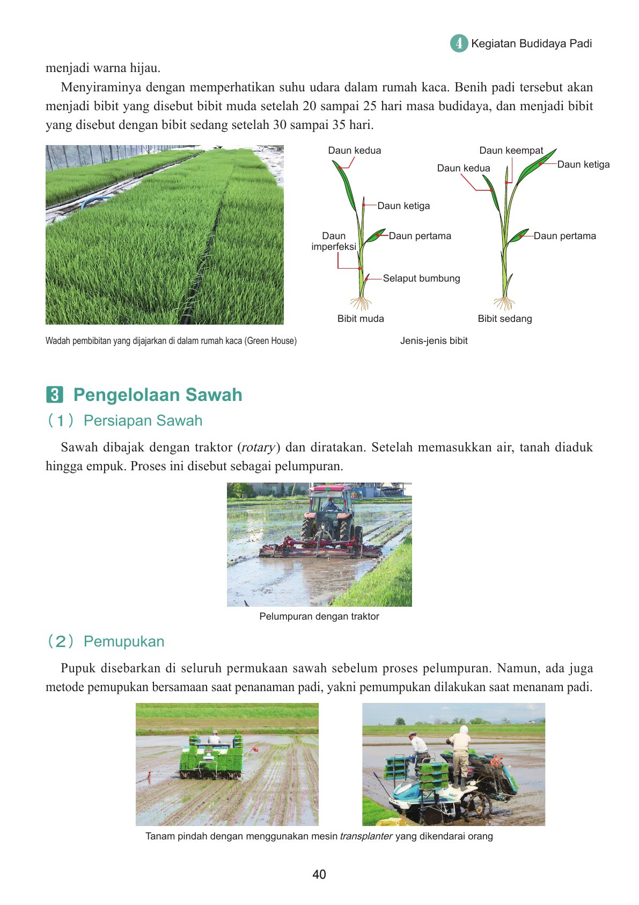
Teks halaman 46
4
40
Kegiatan Budidaya Padi
menjadi warna hijau.
Menyiraminya dengan memperhatikan suhu udara dalam rumah kaca. Benih padi tersebut akan
menjadi bibit yang disebut bibit muda setelah 20 sampai 25 hari masa budidaya, dan menjadi bibit
yang disebut dengan bibit sedang setelah 30 sampai 35 hari.
Wadah pembibitan yang dijajarkan di dalam rumah kaca (Green House)
Jenis-jenis bibit
3 Pengelolaan Sawah
（１）Persiapan Sawah
Sawah dibajak dengan traktor (rotary) dan diratakan. Setelah memasukkan air, tanah diaduk
hingga empuk. Proses ini disebut sebagai pelumpuran.
Pelumpuran dengan traktor
（２）Pemupukan
Pupuk disebarkan di seluruh permukaan sawah sebelum proses pelumpuran. Namun, ada juga
metode pemupukan bersamaan saat penanaman padi, yakni pemumpukan dilakukan saat menanam padi.
Tanam pindah dengan menggunakan mesin transplanter yang dikendarai orang
Bibit muda
Bibit sedang
Daun pertama
Daun pertama
Daun ketiga
Daun ketiga
Daun kedua
Daun kedua
Daun keempat
Selaput bumbung
Daun
imperfeksi
Halaman 47
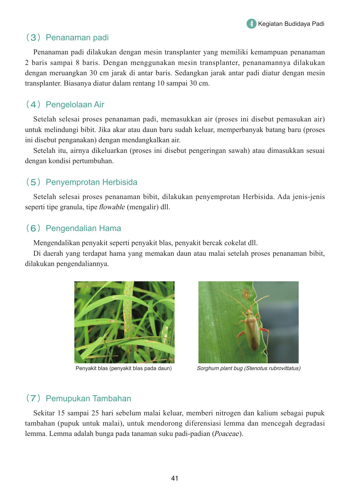
Teks halaman 47
4
41
Kegiatan Budidaya Padi
（３）Penanaman padi
Penanaman padi dilakukan dengan mesin transplanter yang memiliki kemampuan penanaman
2 baris sampai 8 baris. Dengan menggunakan mesin transplanter, penanamannya dilakukan
dengan meruangkan 30 cm jarak di antar baris. Sedangkan jarak antar padi diatur dengan mesin
transplanter. Biasanya diatur dalam rentang 10 sampai 30 cm.
（４）Pengelolaan Air
Setelah selesai proses penanaman padi, memasukkan air (proses ini disebut pemasukan air)
untuk melindungi bibit. Jika akar atau daun baru sudah keluar, memperbanyak batang baru (proses
ini disebut penganakan) dengan mendangkalkan air.
Setelah itu, airnya dikeluarkan (proses ini disebut pengeringan sawah) atau dimasukkan sesuai
dengan kondisi pertumbuhan.
（５）Penyemprotan Herbisida
Setelah selesai proses penanaman bibit, dilakukan penyemprotan Herbisida. Ada jenis-jenis
seperti tipe granula, tipe flowable (mengalir) dll.
（６）Pengendalian Hama
Mengendalikan penyakit seperti penyakit blas, penyakit bercak cokelat dll.
Di daerah yang terdapat hama yang memakan daun atau malai setelah proses penanaman bibit,
dilakukan pengendaliannya.
Penyakit blas (penyakit blas pada daun)
Sorghum plant bug (Stenotus rubrovittatus)
（７）Pemupukan Tambahan
Sekitar 15 sampai 25 hari sebelum malai keluar, memberi nitrogen dan kalium sebagai pupuk
tambahan (pupuk untuk malai), untuk mendorong diferensiasi lemma dan mencegah degradasi
lemma. Lemma adalah bunga pada tanaman suku padi-padian (Poaceae).
Halaman 48
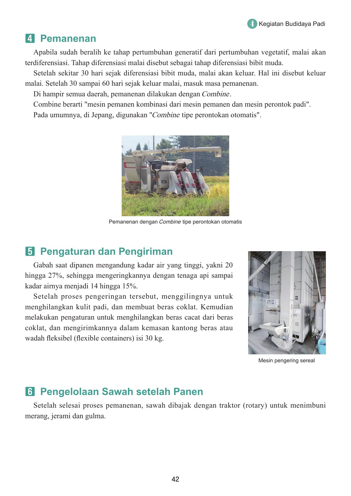
Teks halaman 48
4
42
Kegiatan Budidaya Padi
4 Pemanenan
Apabila sudah beralih ke tahap pertumbuhan generatif dari pertumbuhan vegetatif, malai akan
terdiferensiasi. Tahap diferensiasi malai disebut sebagai tahap diferensiasi bibit muda.
Setelah sekitar 30 hari sejak diferensiasi bibit muda, malai akan keluar. Hal ini disebut keluar
malai. Setelah 30 sampai 60 hari sejak keluar malai, masuk masa pemanenan.
Di hampir semua daerah, pemanenan dilakukan dengan Combine.
Combine berarti "mesin pemanen kombinasi dari mesin pemanen dan mesin perontok padi".
Pada umumnya, di Jepang, digunakan "Combine tipe perontokan otomatis".
Pemanenan dengan Combine tipe perontokan otomatis
5 Pengaturan dan Pengiriman
Gabah saat dipanen mengandung kadar air yang tinggi, yakni 20
hingga 27%, sehingga mengeringkannya dengan tenaga api sampai
kadar airnya menjadi 14 hingga 15%.
Setelah proses pengeringan tersebut, menggilingnya untuk
menghilangkan kulit padi, dan membuat beras coklat. Kemudian
melakukan pengaturan untuk menghilangkan beras cacat dari beras
coklat, dan mengirimkannya dalam kemasan kantong beras atau
wadah fleksibel (flexible containers) isi 30 kg.
6 Pengelolaan Sawah setelah Panen
Setelah selesai proses pemanenan, sawah dibajak dengan traktor (rotary) untuk menimbuni
merang, jerami dan gulma.
Mesin pengering sereal
Halaman 49
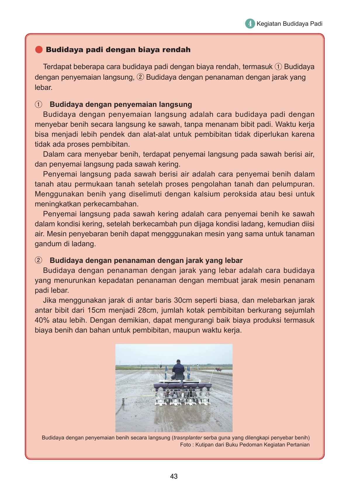
Teks halaman 49
4
43
Kegiatan Budidaya Padi
● Budidaya padi dengan biaya rendah
Terdapat beberapa cara budidaya padi dengan biaya rendah, termasuk ① Budidaya
dengan penyemaian langsung, ② Budidaya dengan penanaman dengan jarak yang
lebar.
① Budidaya dengan penyemaian langsung
Budidaya dengan penyemaian langsung adalah cara budidaya padi dengan
menyebar benih secara langsung ke sawah, tanpa menanam bibit padi. Waktu kerja
bisa menjadi lebih pendek dan alat-alat untuk pembibitan tidak diperlukan karena
tidak ada proses pembibitan.
Dalam cara menyebar benih, terdapat penyemai langsung pada sawah berisi air,
dan penyemai langsung pada sawah kering.
Penyemai langsung pada sawah berisi air adalah cara penyemai benih dalam
tanah atau permukaan tanah setelah proses pengolahan tanah dan pelumpuran.
Menggunakan benih yang diselimuti dengan kalsium peroksida atau besi untuk
meningkatkan perkecambahan.
Penyemai langsung pada sawah kering adalah cara penyemai benih ke sawah
dalam kondisi kering, setelah berkecambah pun dijaga kondisi ladang, kemudian diisi
air. Mesin penyebaran benih dapat mengggunakan mesin yang sama untuk tanaman
gandum di ladang.
② Budidaya dengan penanaman dengan jarak yang lebar
Budidaya dengan penanaman dengan jarak yang lebar adalah cara budidaya
yang menurunkan kepadatan penanaman dengan membuat jarak mesin penanam
padi lebar.
Jika menggunakan jarak di antar baris 30cm seperti biasa, dan melebarkan jarak
antar bibit dari 15cm menjadi 28cm, jumlah kotak pembibitan berkurang sejumlah
40% atau lebih. Dengan demikian, dapat mengurangi baik biaya produksi termasuk
biaya benih dan bahan untuk pembibitan, maupun waktu kerja.
Budidaya dengan penyemaian benih secara langsung (trasnplanter serba guna yang dilengkapi penyebar benih)
Foto : Kutipan dari Buku Pedoman Kegiatan Pertanian
Halaman 50
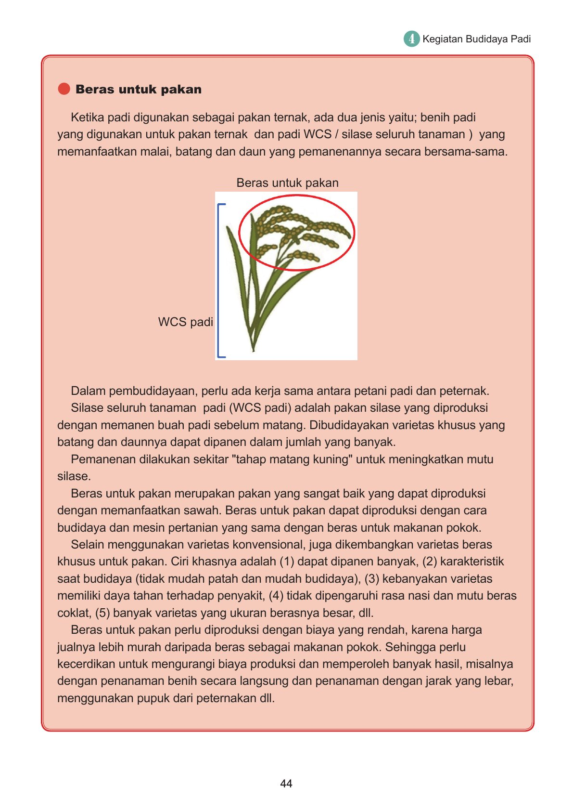
Teks halaman 50
4
44
Kegiatan Budidaya Padi
● Beras untuk pakan
Ketika padi digunakan sebagai pakan ternak, ada dua jenis yaitu; benih padi
yang digunakan untuk pakan ternak dan padi WCS / silase seluruh tanaman ) yang
memanfaatkan malai, batang dan daun yang pemanenannya secara bersama-sama.
Beras untuk pakan
WCS padi
Dalam pembudidayaan, perlu ada kerja sama antara petani padi dan peternak.
Silase seluruh tanaman padi (WCS padi) adalah pakan silase yang diproduksi
dengan memanen buah padi sebelum matang. Dibudidayakan varietas khusus yang
batang dan daunnya dapat dipanen dalam jumlah yang banyak.
Pemanenan dilakukan sekitar "tahap matang kuning" untuk meningkatkan mutu
silase.
Beras untuk pakan merupakan pakan yang sangat baik yang dapat diproduksi
dengan memanfaatkan sawah. Beras untuk pakan dapat diproduksi dengan cara
budidaya dan mesin pertanian yang sama dengan beras untuk makanan pokok.
Selain menggunakan varietas konvensional, juga dikembangkan varietas beras
khusus untuk pakan. Ciri khasnya adalah (1) dapat dipanen banyak, (2) karakteristik
saat budidaya (tidak mudah patah dan mudah budidaya), (3) kebanyakan varietas
memiliki daya tahan terhadap penyakit, (4) tidak dipengaruhi rasa nasi dan mutu beras
coklat, (5) banyak varietas yang ukuran berasnya besar, dll.
Beras untuk pakan perlu diproduksi dengan biaya yang rendah, karena harga
jualnya lebih murah daripada beras sebagai makanan pokok. Sehingga perlu
kecerdikan untuk mengurangi biaya produksi dan memperoleh banyak hasil, misalnya
dengan penanaman benih secara langsung dan penanaman dengan jarak yang lebar,
menggunakan pupuk dari peternakan dll.
Halaman 51
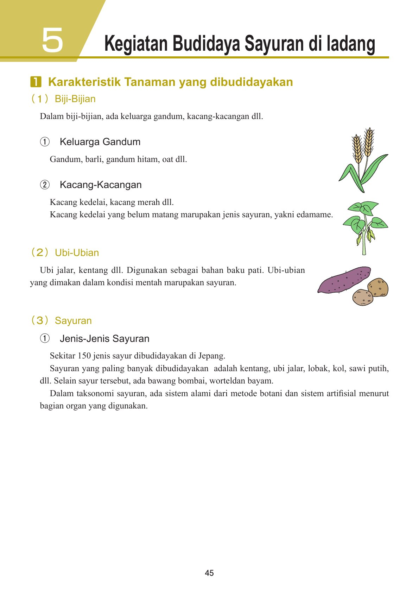
Teks halaman 51
45
1 Karakteristik Tanaman yang dibudidayakan
（１）Biji-Bijian
Dalam biji-bijian, ada keluarga gandum, kacang-kacangan dll.
① Keluarga Gandum
Gandum, barli, gandum hitam, oat dll.
② Kacang-Kacangan
Kacang kedelai, kacang merah dll.
Kacang kedelai yang belum matang marupakan jenis sayuran, yakni edamame.
（２）Ubi-Ubian
Ubi jalar, kentang dll. Digunakan sebagai bahan baku pati. Ubi-ubian
yang dimakan dalam kondisi mentah marupakan sayuran.
（３）Sayuran
① Jenis-Jenis Sayuran
Sekitar 150 jenis sayur dibudidayakan di Jepang.
Sayuran yang paling banyak dibudidayakan adalah kentang, ubi jalar, lobak, kol, sawi putih,
dll. Selain sayur tersebut, ada bawang bombai, worteldan bayam.
Dalam taksonomi sayuran, ada sistem alami dari metode botani dan sistem artifisial menurut
bagian organ yang digunakan.
Kegiatan Budidaya Sayuran di ladang
5
Halaman 52
Teks halaman 52
5
46
Kegiatan Budidaya Sayuran di ladang
Dalam taksonomi menurut sistem alami, tanaman dalam satu suku memiliki kesamaan.
Taksonomi menurut sistem alami
Suku
Sayuran utama
Suku labu-labuan
Timun
Melon
Semangka
Labu
Suku
terong-terongan
Terong
Tomat
Paprika
Kentang
Suku
bawang-bawangan
Bawang bombai Bawang daun
Suku
kenikir-kenikiran
Letus Gobo Shungiku
Suku
bayam-bayaman
Bayam
Suku
kubis-kubisan
Kol
Sawi putih
Lobak
Suku
adas-adasan
Wortel
Suku
alas-talasan
Talas
Suku
padi-padian
Jagung
Suku
kangkung-kangkungan
Ubi jalar
Suku
mawar-mawaran
Stroberi
Halaman 53
Teks halaman 53
5
47
Kegiatan Budidaya Sayuran di ladang
Taksonomi menurut bagian organ yang digunakan
Sayuran daun : daunnya dimakan
Sayuran akar : akar atau umbinya dimakan
Sayuran buah : buah atau bijinya dimakan
② Karakteristik Sayuran Utama (Berdasarkan Sistem Artifi sial)
i��Sayuran daun
a Kol
Cocok untuk iklim yang sejuk.
Dilakukan budidaya dengan metode tanam pindah.
Selain dimakan langsung, juga digunakan untuk berbagai
masakan.
b Sawi putih
Sawi putih adalah sayuran musim gugur yang vital tidak
hanya untuk acar tetapi juga untuk masakan nabe (masakan
panci). Tumbuh dengan baik di iklim yang sejuk.
Pada umumnya dilakukan metode tanam pindah, tetapi ada
daerah juga yang menggunakan metode penanaman benih secara
langsung.
Terdapat jenis dengan bentuk tertutup, bentuk setengah
tertutup, dan bentuk tidak tertutup.
Spinach
Chinese cabbage
Cabbage
Potatoes
Radish
Carrot
Teratai
Akar teratai
Cucumber
Tomato
Green pepper
Eggplant
Edamame
Halaman 54
Teks halaman 54
5
48
Kegiatan Budidaya Sayuran di ladang
c Letus
Ada berbagai jenis letus, misalnya ada yang daunnya
menggulung seperti bola, ada yang tidak, ada yang daunnya
kusut dll.
Tumbuh dengan baik di iklim yang sejuk.
Dilakukan budidaya dengan metode tanam pindah.
Benihnya memiliki sifat fotoblastik, dan lemah terhadap sifat
asam.
Dalam kondisi suhu tinggi, terjadi diferensiasi pada pucuk bunga.
d Bayam
Bayam dapat dipanen setelah 1 bulan setengah hingga 2
bulan sejak penanaman benih, sehingga merupakan sayuran
yang mudah dibudidayakan. Bayam dapat dipanen apabila tinggi
daunnya mencapai sekitar 25 cm.
Pada umumnya dilakukan budidaya dengan metode penanaman
benih secara langsung, namun pada akhir-akhir ini juga dilakukan
dengan metode tanam pindah.
Berkat adanya upaya penyempurnaan, sudah mulai dilakukan
budidaya selama sepanjang tahun.
ii Sayuran Akar
a Bawang Bombai
Bawang bombai untuk dimakan yang berbentuk bola,
dibentuk karena daun dan batang berlapis, namun bawang
bombai merupakan sayuran akar.
Budidayanya dilakukan dengan metode tanam pindah.
b Lobak
Dahulu umumnya lobak dipanen musim gugur sampai musim
dingin, akan tetapi jumlah produksi lobak pada musim semi dan
musim panas juga meningkat, sehingga sudah dibudidayakan
selama sepanjang tahun.
Pada musim dingin, juga dilakukan budidaya model terowongan.
Budidaya dilakukan dengan metode penanaman benih secara
langsung.
Dalam kondisi terus-menerus bersuhu rendah, terjadi diferensiasi pada pucuk bunga.
Halaman 55
Teks halaman 55
5
49
Kegiatan Budidaya Sayuran di ladang
c Kentang
Selain dimakan berupa kentang segar, juga digunakan sebagai
bahan baku pati dan makanan olahan.
Budidaya dilakukan dengan menanam bibit kentang di lahan.
d Ubi jalar
Kita memakan bagian akar yang membesar. Ubi jalar dapat
tumbuh dengan baik meskipun di tanah yang mengandung
pupuk yang sedikit. Jika kandungan pupuk terlalu tinggi, daun
dan batang yang akan membesar, namun bagian akar tidak akan
membesar.
Membudidayakan tunas dari bibit ubi jalar, memotongnya
untuk digunakan sebagai benih, kemudian menanamkannya di
lahan.
e Wortel
Kaya dengan karotena. Wortel digunakan tidak hanya untuk
bahan masak, tetapi juga untuk jus.
Wortel tumbuh dengan baik di iklim yang sejuk, akan tetapi
dibudidayakan di seluruh Jepang.
Budidaya dilakukan dengan metode penanaman benih secara langsung. Wortel memiliki
sifat yang sulit bertunas jika kering.
iii Sayuran Buah
a Tomat
Tomat memiliki banyak jenis, sehingga ada juga varietas untuk bahan masak yang
dipanaskan.
Tomat mini yang mengandung kadar gula yang tinggi juga
sangat populer.
Budidayanya dilakukan dengan metode tanam pindah. Pada
pohon tomat dilakukan proses penyetekan.
Untuk membuat jumlah batang yang tunggal, dilakukan
"pemangkasan tunas samping" pada waktu tunas samping masih
kecil.
Juga dilakukan pemangkasan tunas ujung dan pemangkasan buah.
Halaman 56
Teks halaman 56
5
50
Kegiatan Budidaya Sayuran di ladang
b Timun
Kita makan bagian buah berwarna hijau yang belum matang.
Timun digunakan untuk selada dan acar.
Timun dibudidayakan tidak hanya di luar ruangan, tetapi juga
dibudidayakan dengan menggunakan fasilitas, sehingga dapat
dipanen selama sepanjang tahun.
Timun dipanen jika panjang buahnya sudah sampai sekitar 20
cm.
Budidayanya dilakukan dengan metode tanam pindah. Pada
pohon timun dilakukan proses penyetekan.
c Terong
Terong memiliki banyak jenis, dan ada banyak varietas khas
di masing-masing daerah.
Oleh karena panjangnya masa budidaya, diperlukan
pemupukan yang memadai.
Budidayanya dilakukan dengan metode tanam pindah.
Sesuai dengan pertumbuhan, memasang tiang penopang,
melakukan pemangkasan tunas, pengikatan dan perapian cabangnya.
（４）Tanaman Industri
Tanaman industri adalah tanaman yang perlu diolah dalam proses yang canggih.
Contohnya adalah teh, konnyaku, kacang tanah, mansiang, tembakau, bit gula, tebu dll.
a Teh
Teh adalah daun dari pohon teh (Camellia
sinensis). Oleh karena tanaman ini adalah
pohon, jika sudah sekali ditanam, dapat
dipanen selama bertahun-tahun. Lahan pohon
teh disebut sebagai perkebunan teh.
Tinggi pohon teh dibuat sekitar tinggi
pinggang, untuk memudahkan pemanenan.
Halaman 57
Teks halaman 57
5
51
Kegiatan Budidaya Sayuran di ladang
b Konnyaku
Konnyaku diolah dari umbi konnyaku
yang merupakan umbi akar.
Budidayanya dilakukan di daratan
yang kondisi pembuangan airnya bagus
atau di lereng.
Umbi konnyaku dibudidayakan dari
bibit umbi konnyaku.
c Kacang tanah
Kacang tanah adalah tanaman yang termasuk dalam suku polong-polongan. Setelah
proses penyerbukan terjadi pada bunga yang ada di atas tanah, tangkai putik (ginofor) yang
memanjang akan menusuk ke dalam
tanah, dan ujungnya akan membesar,
kemudian menjadi polong. Pemanenan
dilakukan dengan menggali polong
tersebut yang ada di dalam tanah.
Budidayanya dilakukan dengan
menanam benih di lahan.
（５）Tanaman untuk Pakan
Tanaman untuk pakan adalah tanaman yang dijadikan pakan untuk ternak, termasuk pakan
rumput, padi, jagung, garai, oat dll.
Diberikan kepada ternak dengan bentuk secara langsung, kering atau silase.
Silase adalah pakan yang dibuat dengan memanen rumput pakan, padi dan jagung serta tangkai
bersama-sama, lalu memfermentasinya dan menyimpannya dalam keadaan tertutup tanpa oksigen
(udara).
Pemanenan dilakukan saat nilai gizi tanaman tinggi.
2 Pengelolaan Budidaya Sayuran di ladang
① Suhu Udara
Tanaman memiliki suhu optimal untuk pertumbuhan tergantung jenis sayuran dan tahap
pertumbuhan. Ada tanaman yang menyukai suhu udara rendah, dan juga ada yang menyukai
suhu udara tinggi.
Berkat adanya upaya penyempurnaan dan perkembangan metode budidaya, daerah yang dapat
digunakan untuk budidaya telah meluas.
Dengan menggunakan rumah kaca, metode budidaya terowongan, metode budidaya penutupan
secara langsung dll., tanaman yang tumbuh dengan baik di dalam suhu udara yang tinggi pun
dapat dibudidayakan di daerah yang dingin,
Halaman 58
Teks halaman 58
5
52
Kegiatan Budidaya Sayuran di ladang
② Tingkat Cahaya dan Fotosintesis
Tanaman akan tumbuh dengan melakukan fotosintesis.
Pada umumnya, proses fotosintesis semakin aktif jika cahaya semakin kuat. Akan tetapi,
terdapat titik saturasi cahaya, yakni jika telah melebihi kekuatan cahaya tertentu, itu sudah
mencapai maksimal.
Kekuatan cahaya yang diperlukan berbeda tergantung tanaman.
Sayur yang memerlukan cahaya yang kuat adalah tomat, melon, jagung, wortel dll.
Sayur yang tumbuh dengan cahaya yang lemah adalah mitsuba, myoga dll.
③ Kadar Air
Pertumbuhan tanaman dipengaruhi juga kondisi kadar air di dalam tanah.
Jika kadar airnya berkurang, tanaman akan melayu, dan dapat menyebabkan kekurangan zat
nutrisi.
Sebaliknya, jika kadar air berlebihan, akan menjadi kekurangan oksigen, dan akarnya dapat
membusuk.
Untuk mengukur kadar air, menggunakan tension meter atau alat pengukur kadar air di dalam
tanah. Nilai kadar air dinyatakan dengan % atau nilai pF. Nilai kadar air dalam tanah yang tepat
adalah 35 sampai 55%.
3 Benih
（１）Benih
① Pertunasan
Supaya benih bertunas (pertunasan), diperlukan air, suhu udara dan oksigen.
Hal ini disebut "tiga syarat pertunasan".
Jika diberi air yang berlebihan, membuat kondisi kekurangan oksigen, sehingga pertunasan
tidak berjalan dengan baik.
② Benih Fotoblastik Positif dan Fotoblastik Negatif
Benih yang mudah berkecambah jika diterangi cahaya adalah fotoblastik positif.
Contoh : wortel, letus dll.
Benih yang susah berkecambah jika diterangi cahaya adalah fotoblastik negatif.
Contoh : Lobak, tomat, semangka dll.
③ Usia Benih dan Cara Penyimpanannya
Benih ada batas usia. Usia tersebut berbeda tergantung jenis tanaman dan sayuran, ada yang
pendek ada juga yang panjang.
Penyimpanan benih dilakukan dalam kondisi yang memenuhi syarat suhu udara rendah dan
kering.
Halaman 59
Teks halaman 59
5
53
Kegiatan Budidaya Sayuran di ladang
Apabila kondisi penyimpanannya tidak baik, batas waktu pemakaian benih akan menjadi lebih
pendek.
Batas usia benih sayur
1 – 2 tahun : wortel, jagung, bayam
2 – 3 tahun : bawang daun, bawang bombai, lobak, kol
3 – 4 tahun : tomat, terong
④
Benih olahan
Benih yang diolah semakin banyak untuk memudahkan penanamannya, meningkatkan
perkecambahannya, dan mencegah penyakit.
・�Benih yang dilapisi : diolah dalam bentuk bulat yang seragam
・�Benih telanjang : benih yang diolah menjadi telanjang dengan dihilangkannya bagian kulit
yang keras (bayam)
・�Benih steril : Benih yang disterilisasi
・Seed tape (pita benih) : benih dipasang di pita dengan jarak tertentu
⑤
Benih F1(efu-wan)
Disebut juga benih generasi pertama.
Benih yang memiliki kemampuan yang unggul dari induknya, dengan memanfaatkan
heterosis.
Sekarang, benih F1 digunakan untuk banyak sayur.
Varietas unggul merupakan benih yang mewarisi kemampuan yang unggul dari induknya.
Sayuran khas daerah seperti Kyo-yasai dan Kaga-yasai termasuk varietas bersari bebas.
Benihnya bisa diambil sendiri.
○Memahami jenis sayur dengan melihat benih sayur.
○Memahami benih yang diolah.
○Pahamilah cara penyimpanan benih.
○Memahami perbedaan batas usia menurut jenis sayur.
○ Memahami jenis-jenis utama dari fotoblastik positif dan fotoblastik
negatif.
○
Praktik
Halaman 60
Teks halaman 60
5
54
Kegiatan Budidaya Sayuran di ladang
（２）Penanaman Benih
Tata cara penanaman benih, ada penanaman benih dengan disebar, penanaman benih sesuai jalur,
dan penanaman beberapa benih dalam satu titik.
Cara penanamannya dipilih sesuai dengan jenis sayuran.
Proses menutupinya dengan tanah setelah penanaman benih disebut penutupan dengan tanah.
Benih yang bersifat fotoblastik positif seperti wortel ditutupi dengan tanah yang tipis, karena jika
ditutupi dengan tanah yang terlalu tebal, sulit berkecambah.
Jarak antar
tanaman
Jarak antar
tanaman
Penanaman benih
dalam satu titik
Penanaman benih
sesuai jalur
Penanaman beberapa
benih dengan disebar
Di bedengan, ditanam secara sebaris
(wortel dll.)
Di satu titik, ditanam beberapa benih
(lobak dll.)
Di sebarkan di seluruh permukaan bendengan
(pembibitan bawang bombai dll.)
Benih
Benih
Benih
Jarak antar
tanaman
○Pahamilah cara penanaman benih.
○
Praktik
Halaman 61
Teks halaman 61
55
1 Karakteristik Tanaman di Hortikultura Rumah Kaca
（１）Sayuran
① Tomat
Tomat adalah sayur buah dalam suku terong-terongan (Solanaceae).
Ada banyak tipe penanaman yang diterapkan pada tomat dan
dibudidayakan sepanjang tahun.
Tomat tumbuh dengan baik dalam suhu udara yang agak tinggi,
namun bisa tumbuh juga dalam suhu udara yang rendah.
Untuk pertumbuhannya, diperlukan cahaya yang kuat.
② Stroberi
Stroberi adalah sayur buah dalam suku mawar-mawaran (Rosaceae).
Budidaya dengan bangku tinggi yang memungkinkan pekerjaan
sambil berdiri, makin bertambah.
Stroberi melakukan reproduksi vegetatif. Setelah proses pemekaran
dan pembuahan berakhir, geragih akan keluar. Anakan yang keluar
pada ujungnya digunakan untuk pembiakan.
Cara pembibitan yang mempercepat diferensiasi pada pucuk
bunga telah menyebar, dan dilakukan budidaya dipercepat.
③ Timun
Timun adalah sayur buah dalam suku labu-labuan (Cucurbitaceae)
(menggunakan buah yang muda).
Tanaman timun memiliki bunga jantan dan bunga betina, sehingga
dapat melakukan alogami. Namun timun dapat berbuah (partenokarpi)
tanpa adanya proses penyerbukan.
Kebanyakan budidaya timun dilakukan dengan menggunakan
tiang penopang (budidaya tiang penopang).
④ Lain-Lain
Banyak sayur-sayuran dibudidayakan di fasilitas. Contohnya, bayam (suku Chenopodiaceae,
sayuran daun), terong (suku terong-terongan (Solanaceae), sayuran buah), paprika (suku terong-
terongan (Solanaceae), sayuran buah) dll.
Kegiatan dalam Hortikultura Rumah Kaca
6
Halaman 62
Teks halaman 62
56
Kegiatan dalam Hortikulture Rumah Kaca
6
Bayam
Terong
Paprika
（２）Bunga
Bunga juga sering dibudidayakan dengan menggunakan fasilitas. Waktu pemekaran dapat
disesuaikan, dan dapat memproduksi bunga potong dan bunga dalam pot yang berkualitas.
① Bunga Krisan (Chrysanthemum)
Bunga krisan adalah tanaman abadi.
Pembibitan dilakukan dengan setek.
Bunga krisan musim gugur adalah tanaman hari pendek.
Untuk melambatkan pemekaran bunga, dilakukan budidaya
dengan diterangi cahaya buatan selama malam hari.
Bunga krisan memiliki banyak varietas seperti bunga krisan musim
panas, dan sepanjang tahun dipasarkan.
② Bunga Mawar
Bunga potong dari pohon bunga.
Bunga mawar dibudidayakan dengan menggunakan
fasilitas, dan sepanjang tahun dipasarkan.
③ Bunga Lili
Bunga potong yang dibudidayakan dari umbi bunga.
Ada banyak varietas seperti bunga bakung paskah (Lilium
longiflorum), tipe asiatik, tipe oriental dll., dan sepanjang
tahun dipasarkan dengan menerapkan perawatan suhu
rendah.
Halaman 63
Teks halaman 63
57
Kegiatan dalam Hortikulture Rumah Kaca
6
④ Bunga Anyelir
Bunga Anyelir merupakan tumbuhan yang tetap hidup dan
digunakan untuk bungan potong.
Sekitar 70% penanaman dilakukan dengan tipe cipratan,
yakni di satu batang beberapa bunga memekar.
2 Jenis dan Struktur Fasilitas
（１）Jenis
Tergantung pada bahan penutup, dapat dibagi ke green house dan green house dari plastik.
① Green house
Rumah kaca adalah ruang panas yang menggunakan kaca.
Cahaya mudah tembus. Green house mempunyai daya tahan yang kuat, sehingga dapat
digunakan selama bertahun-tahun.
Biaya pembuatan lebih mahal dibanding dengan yang dari plastik.
② Green house dari plastik
Green house dari plastik adalah fasilitas yang menggunakan membram plastik fleksibel
ataupun membram plastik tegar yang ringan dan mudah ditangani. Daya tahannya berkurang
jika dibanding dengan yang dari kaca. Namun, akhir-akhir ini pemakaian rumah kaca dari
plastik bertambah, karena plastik yang dapat digunakan selama waktu yang panjang telah
dikembangkan, dan biaya pembuatannya murah.
③ Rumah Pelindung Hujan
Rumah kaca dari plastik yang hanya bagian atap saja yang
ditutupi dengan membran.
Efeknya adalah mencegah penyakit, hama dan pecahnya buah,
karena tanaman tidak terkena hujan secara langsung.
（２）Struktur
① Tipe
a Tipe tunggal
Tipe yang memiliki satu atap. Bersifat kuat terhadap angin dan salju, dan bagus dalam
ventilasi dan penerangan sinar matahari.
b Tipe deretan
Tipe dengan beberapa rumah tunggal disambungkan. Dibanding dengan tipe tunggal,
Halaman 64
Teks halaman 64
58
Kegiatan dalam Hortikulture Rumah Kaca
6
efisiensi pemanas lebih bagus. Kemudahan kerja akan meningkat karena bagian dalamnya
luas, akan tetapi terdapat kekurangan seperti sinar matahari pada bagian sambungan
berkurang.
② Bentuk atap
a Tipe atap kedua sisi
Kedua sisi atap memiliki kemiringan, dan berbentuk seperti rumah.
b Tipe atap bulat
Atapnya berbentuk bulat.
c Tipe three-quarter
Lebar dari salah satu atap dari dua atap lebih sempit daripada yang lain.
d Tipe venlo
Rumah berukuran besar dengan atap yang tinggi, yang dikembangkan di Belanda.
3 Bahan Penutup Fasilitas dan Karakteristiknya
（１）Bahan Penutup Luar
① Kaca
Kaca lembaran yang digunakan. Cahaya menembus dengan baik.
② Membran Plastik Lunak
Ada yang dari membran vinil klorida untuk pertanian dan membran khusus poliolefin untuk
pertanian.
Tinggi
atap
Tipe tunggal
Tipe atap kedua sisi
Deretan dengan tipe atap kedua sisi
Tipe deretan
Tipe atap kedua sisi (berukuran besar)
Tipe three-quarter
Tipe venlo
Tipe atap bulat
Deretan dengan tipe atap bulat
Halaman 65
Teks halaman 65
59
Kegiatan dalam Hortikulture Rumah Kaca
6
③ Membran Plastik Tegar
Terdapat membran fluorin untuk pertanian, dan memiliki daya tahan lebih dari 10 tahun.
Ada juga tipe papan akrilik yang dapat dipasang selama lebih dari 10 tahun.
（２）Bahan Penutup Dalam
① Membran Plastik Lunak
Membran transparan termasuk membran vinil klorida untuk
pertanian, membran polietilen untuk pertanian, membran resin
kopolimer asetat vinil etilena untuk pertanian, membran khusus
poliolefin untuk pertanian, juga digunakan sebagai penutup dalam.
Penutup dalam menggunakan yang lebih tipis daripada penutup luar.
Diantara membran plastik lunak, membran polietilen untuk
pertanian kurang baik dalam kemampuan retensi panas.
② Kain Nonwoven
Digunakan untuk penutup dalam, sebagai gorden retensi panas. Daya tembus cahaya lebih
rendah daripada membran yang transparan, tetapi memiliki daya tembus kelembaban dan air.
③ Kain Saringan (Kanreisha)
Menghalangi cahaya, tetapi berventilasi.
Kain Nonwoven
Kain Saringan (Kanreisha)
Karakteristik
i Membran vinil klorida untuk pertanian
Membran yang mudah ditembus cahaya, dan memiliki kemampuan retensi panas yang
tinggi.
Bahannya berat. Sering lengket dan mudah kotor. Mudah sobek.
Setiap 1 - 2 tahun, perlu memasang yang baru. Jika dibakar, menghasilkan gas beracun.
ii Membran khusus poliolefin untuk pertanian
Dibandingkan dengan membran vinil klorida untuk pertanian, lebih ringan. Tidak
lengket dan sulit kotor.
Ada tipe untuk pemasangan jangka waktu 2-3 tahun, ada juga tipe untuk jangka waktu
lebih panjang 3-5 tahun.
Halaman 66
Teks halaman 66
60
Kegiatan dalam Hortikulture Rumah Kaca
6
4 Perlengkapan dalam Fasilitas
（１）Perlengkapan Pemanas
Dalam metode pemanasan, terdapat metode udara hangat dan
metode air hangat. Metode udara hangat banyak digunakan karena
pemasangannya mudah.
Minyak berat dan minyak tanah yang banyak digunakan sebagai
bahan bakar. Ada juga perlengkapan pemanas yang menggunakan
listrik, gas atau pelet kayu.
Panas matahari dan pompa panas juga mulai diterapkan.
（２）Ventilator
Selama siang hari, suhu udara dalam fasilitas meningkat dengan panas sinar matahari dan
menjadi tinggi. Perlu memasukkan udara dari luar dengan melakukan ventilasi, supaya suhu udara
dalam ruangan tidak terlalu tinggi.
Ada 2 cara ventilasi seperti berikut.
① Ventilasi Alami
Cara ventilasi untuk memasukkan udara dari luar dengan membuka jendela atau sebagian
bahan penutup. Cara ini dipengaruhi oleh cuaca.
② Ventilasi Paksa
Cara ventilasi untuk memasukkan udara dari luar secara paksa dengan memutarkan kipas
angin. Cara ini memerlukan daya listrik, dan efeknya tergantung pada kemampuan kipas angin.
○Memahami jenis-jenis dan kegunaan utama dari bahan penutup.
○
Praktik
Rumah kaca tanpa pemanas
Rumah kaca tanpa pemanas merupakan metode tanpa menggunakan alat pemanas. Cocok
untuk tanaman yang kuat dalam suhu rendah. Keunggulannya adalah tidak memakan
biaya bahan bakar.
Apabila menggunakan terowongan secara bersama, dapat meningkatkan efek retensi
panas selama malam hari.
Halaman 67
Teks halaman 67
61
Kegiatan dalam Hortikulture Rumah Kaca
6
③ Urutan Ventilasi
Ventilasi dilakukan mulai dari ventilasi
alami. Untuk melakukan ventilasi alami,
pertama-tama membuka penutup dalam,
kemudian membuka jendela atap. Jika
suhunya masih tinggi, membuka bagian
samping.
Jika suhu udara tidak menurun dengan
ventilasi alami, melakukan ventilasi paksa.
（３）Alat Penghasil Gas Karbon Dioksida
Karbon dioksida (gas karbon dioksida) mendorong proses fotosintesis
tanaman. Di dalam fasilitas yang tertutup, kadang terjadi kekurangan
karbon dioksida. Dengan menambah karbon dioksida dengan
menggunakan alat penghasil gas karbon dioksida, dapat mendorong
fotosintesis.
（４）Perlengkapan untuk Pengendalian Hama
Karena tingginya suhu udara dan tingkat kelembapan di dalam fasilitas, memudahkan
menyebabkan adanya hama dan ada kalanya menyebar secara pesat. Penyebaran pestisida di
dalam fasilitas dilakukan dengan menggunakan alat yang menyebarkan pestisida secara otomatis
(contohnya penyemprot berjalan sendiri), untuk mengurangi tenaga dan keselamatan pekerja.
Selain itu, ada juga cara yang tidak menggunakan pestisida kimia (contohnya alat penerangan anti
serangga) dengan lampu berwarna kuning.
Ventilasi alami
Menukar udara luar dan
udara dalam melalui
jendela.
Ventilasi paksa
Menukar udara luar dan
udara dalam secara
paksa.
Kontrol panel
Jendela atap
○Memahami metode ventilasi dan urutan ventilasi.
○
Praktik
Penyemprot berjalan sendiri
Penerangan anti serangga
Alat penghasil gas karbon dioksida
Halaman 68
Teks halaman 68
62
Kegiatan dalam Hortikulture Rumah Kaca
6
5 Pengelolaan Lingkungan
Budidaya di luar ruangan sangat dipengaruhi cuaca dan iklim.
Dengan budidaya dengan menggunakan fasilitas, dapat menyesuaikan lingkungan di atas tanah
(suhu udara, tingkat kelembapan, sinar matahari dll.) dan lingkungan di bawah tanah (suhu tanah,
kadar air di dalam tanah, tingkat konsentrasi nutrisi dll.)
（１）Pengelolaan Suhu Udara
① Pengelolaan Suhu Udara
Mengontrol suhu udara di dalam fasilitas sesuai dengan suhu udara sesuai masing-masing
tanaman.
Di dalam fasilitas, ada kemungkinan suhu udaranya menjadi terlalu tinggi pada siang hari,
sehingga perlu menurunkan suhu udara dengan melakukan ventilasi. Pada musim panas yang
bersuhu tinggi, kadang menurunkan suhu udara dengan pendingin.
Pada waktu suhu udaranya rendah, pagi-pagi dan malam hari, memanaskan udara dengan
pemanas untuk meningkatkan suhu udara.
② Alat-Alat untuk Mengukur Suhu Udara
Terdapat termometer batang yang berisi alkohol berwarna (menampilkan suhu udara saat
ini ), termometer maksimum dan minimum yang berisi merkuri (menampilkan suhu udara saat
ini dan suhu udara maksimum ataupun minimum sejak reset sebelumnya.), termometer digital
yang menampilkan suhu udara saat ini secara digital (menampilkan suhu udara maksimum dan
minimum yang direkam sejak reset sebelumnya ) dll.
③ Cara Retensi Panas
Efek retensi panas ditentukan dengan jumlah lapisan bahan
penutup (berlapis) dan jenis bahan penutup.
Dalam penggunaan bahan penutup yang sama, penggunaan
makin banyak , efek retensi panas akan menjadi semakin tinggi.
Efektif juga meningkatkan kekedapan udara dengan menutupi celah.
Terdapat 2 metode untuk penutup dalam untuk meningkatkan
retensi panas, sebagai berikut. ① Metode untuk memasang bahan retensi panas dengan sedikit
ruang di sisi dalam penutup luar. k. ② Metode bergerak yang dapat dibuka dan ditutup (gorden).
Ada juga metode dengan memasang terowongan 1 atau 2 lapis di dalam rumah kaca.
Termometer batang
Termometer maksimum dan minimum
Termometer digital
Membran vinil
Gorden
Terowongan
Halaman 69
Teks halaman 69
63
Kegiatan dalam Hortikulture Rumah Kaca
6
Tensionmeter
（２）Kadar Air
Pertumbuhan tanaman dipengaruhi juga oleh kondisi kadar air di dalam tanah.
Jika kadar airnya berkurang, tanaman akan melayu, dan dapat menyebabkan kekurangan zat nutrisi.
Sebaliknya, jika kadar air berlebihan, akan menjadi
kekurangan oksigen, sehingga tidak tumbuh dengan baik dan
akarnya dapat membusuk.
Untuk mengukur kadar air, menggunakan tensiometer
atau alat pengukur kadar air di dalam tanah. Nilai kadar air
dinyatakan dengan % atau nilai pF.
Nilai kadar air dalam tanah yang tepat adalah antara 35%
sampai 55%.
（３）Kelembapan
Di dalam fasilitas, tingkat kelembapan mudah meningkat dikarenakan proses untuk
mempertahankan suhu udara dan memanaskan suhu udara.
○ Pahamilah jenis-jenis termometer dan cara
pemakaiannya.
Di Jepang, digunakan skala selsius.
Angka termometer dilihat dari samping cairan.
Satuannya derajat atau °C.
Posisi mata yang benar
21℃
20
30
○
Praktik
○ Pahamilah cara pemakaian termometer maksimum dan minimum.
Suhu udara maksimum, suhu udara minimum dan suhu udara saat ini dapat
diukur secara bersamaan.
Untuk mengetahui suhu udara
maksimum, memeriksa ujung bawah
sisi kanan (indikator suhu udara
bagian dalam cairan).
Sedangkan, untuk mengetahui
suhu udara minimum, memeriksa
ujung sisi kiri.
12℃
20
30
40
50
10
20
10
‒10
‒20
0
0
Sisi kiri
(Suhu udara
minimum)
Sisi kanan
(Suhu udara
maksimum)
Indikator
Suhu udara
saat ini
Posisi mata yang benar
Milimeter air raksa
Suhu udara minimum
(Ujung indikator sisi kiri)
Suhu udara maksimum
(Ujung indikator sisi kanan)
○
Praktik
Tensiometer
Alat pengukur kadar
air di dalam tanah
Halaman 70
Teks halaman 70
64
Kegiatan dalam Hortikulture Rumah Kaca
6
Khususnya pada malam hari selama musim dingin, tingkat kelembapan sering meningkat,
sehingga menyebabkan penyakit. Dalam kondisi tersebut, perlu menurunkan tingkat kelembapan
dan mencegah kondensasi.
（４）Kontrol Lingkungan Majemuk
Kontrol lingkungan majemuk adalah pengelolaan beberapa faktor lingkungan seperti suhu udara,
kelembaban, cahaya, karbon dioksida secara bersamaan.
Komputer memungkinkan pengelolaan otomatis termasuk kontrol ventilasi dan pemanas.
6 Diagnosis Kondisi Pertumbuhan
Apabila memberi air atau pupuk, melihat kondisi pertumbuhan tanaman. Untuk mengetahui
kondisi pertumbuhan, memeriksa jumlah daun, jarak di antar ruas (panjang antar ruas), tinggi
tanaman, warna daun dll.
Praktik
○ Mari berlatih mengukur
tinggi tanaman dan
panjang antar ruas.
○ Pahamilah jumlah daun.
Antar ruas
Anak daun
tidak dihitung
Menghitung
jumlah daun
utama
Tinggi
tanaman
[Jumlah daun]
Halaman 71
Teks halaman 71
65
Kegiatan dalam Hortikulture Rumah Kaca
6
₇ Hidroponik
（１）Hidroponik
Hidroponik merupakan metode membudidayakan tanaman dengan
larutan inkubasi, yakni air yang terlarut nutrisi tanpa menggunakan
tanah.
Ada dua metode hidroponik: menggunakan media padat dan tanpa
menggunakannya.
Media padat berupa rockwool, babakan
kelapa, peat moss, kerikil dll.
Cara yang tidak menggunakan media
padat adalah aeroponik dan hiponika.
○Menilai bibit yang sehat.
Bibit yang tidak sehat memiliki ciri khas seperti berikut : tumbuh terlalu
panjang, ada bekas penyakit atau dimakan hama di daun atau batang, antara
interlobar berwarna kuning, anak daun terlepas, daun atau batang menua dll.
○Memahami penyebab tidak tumbuh.
・ Kekurangan air : ujung batang menurun, dan daunnya
melayu.
・ Kekurangan ・ Kekurangan kalsium : gangguan
pupuk
fi siologis (busuk bawah)
・ Kekurangan zat besi : daun baru
menjadi warna kuning
・ Kekurangan sinar matahari : batang kecil, antar ruas
panjang, daun tipis dan besar.
Bibit yang tumbuh terlalu panjang
Bibit yang menua
Jarak antar ruas
panjang
Batang
kecil
Daunnya tipis
dan besar, sering
terkulai
Batang
tebal
Bibit yang sehat
Jarak antar
ruas dekat
Batang
tebal
Anak daun
tegak
Daun mendongak
ke atas
Daun berukuran
kecil dan
bergelung
Anak daun
berukuran kecil
Jarak antar
ruas dekat dan
warnanya tua
Bagian bawah tomat
membusuk
○
Praktik
Kultur dengan rockwool
Kultur dengan kerikil
Hidroponik
Halaman 72
Teks halaman 72
66
Kegiatan dalam Hortikulture Rumah Kaca
6
（２）Karakteristik hidroponik
・�Penyakit yang tertular dari tanah jarang terjadi.
・�Tidak ada kegagalan akibat penanaman
・�Proses pengolahan tanah, penyiraman air dan
satu jenis secara berulang.
cabutan rumput dapat dihilangkan.
・Pengelolaannya mudah diotomatisasi.
・Tidak ada pupuk tersia-sia.
・�Memerlukan biaya untuk membangun
fasilitas.
（３）Peralatan hidroponik
Diperlukan tangki untuk menyimpan larutan
inkubasi, wadah, pompa untuk mengirim
larutan inkubasi ke wadahnya, dll.
8 Cara Pembibitan
（１）Cara Pembibitan
① Pembibitan di Tanah Persemaian
Membuat persemaian dan menanam benih. Dalam persemaian, ada persemaian hangat dan
persemaian dingin. Untuk persemaian dingin, tidak diperlukan bahan khusus. Pada persemaian
hangat, menghangatkan tanah dengan memasang kawat kalor listrik.
② Pembibitan di Kotak
Menanam benih di kotak pembibitan, perlu mempersiapkan kotak pembibitan.
③ Pembibitan di Pot
Menanam benih di pot yang dibuat dari plastik. Ada berbagai ukuran polypot.
④ Pembibitan di Paperpot (Pot Kertas)
Menanam benih di paperpot yang akan diurai menjadi tanah.
⑤ Pembibitan Pembentukan Sel
Menanam benih di wadah sel khusus. Jumlah lubang di wadah sel ini dapat dipilih sesuai
dengan jenis sayuran.
Pompa
Tangki
Wadah
Media kultur
Pompa
Media kultur
Halaman 73
Teks halaman 73
67
Kegiatan dalam Hortikulture Rumah Kaca
6
（２）Pembibitan Tanaman dengan Okulasi
Pembibitan tanaman diokulasi adalah bibit yang dibuat dengan menyambungkan batang bawah
dan batang atas.
Okulasi diterapkan pada terong, timun, tomat, semangka dll.
Untuk batang bawah, digunakan varietas yang kuat terhadap penyakit dan hama.
Untuk batang atas, digunakan varietas yang unggul, yakni jumlah panennya banyak dan
berkualitas.
Manfaat dari okulasi adalah bibit menjadi kuat terhadap penyakit dan hama, serta jumlah panen
akan meningkat.
（３）Bibit Sehat
Kondisi bibit yang sehat adalah panjang ruasnya pendek, batangnya tebal dan kekar.
Jika diberi air yang berlebihan atau pengelolaan suhu udara dilakukan pada suhu udara tinggi,
akan menjadi bibit panjang (bibit yang ranting atau batangnya tumbuh terlalu panjang).
Kondisi kekurangan cahaya juga membuat bibit panjang.
Jika kekurangan pupuk nitrogen, daun di bagian bawah akan menjadi warna kuning dan
kecepatan pertumbuhan bibit akan menurun.
Pembibitan pembentukan sel
Pembibitan di pot
Pembibitan di kotak
Pembibitan di tanah persemaian
Paperpot (pot kertas)
Wadah sel
Kotak pembibitan
Polypot
Halaman 74
Teks halaman 74
68
1 Definisi dan Jenis Pohon Buah
（１）Definisi Pohon Buah
Pohon buah adalah pohon yang dibudidayakan untuk memanen buahnya. Dalam hal buah melon,
semangka dll., bagian yang dipanen adalah bagian buah, namun tanaman tersebut akan melayu
dalam 1 tahun, sehingga merupakan "rumput" yang termasuk dalam sayuran.
Buah juga disebut "kajitsu" atau "mi" dalam bahasa Jepang.
（２）Jenis-Jenis Pohon Buah
Pohon buah peluruh adalah pohon yang daunnya gugur pada musim dingin. Contohnya pohon
apel, anggur, pir, persik, kesemek, kastanye dll.
Sedangkan, pohon buah hijau abadi adalah yang berdaun sepanjang tahun. Contohnya pohon
jeruk unshiu, yuzu, loquat dll.
（３）Mengapa budidaya Pohon Buah?
Buah-buahan yang manis dan harum membuat pola makan kita lebih beragam.
Buah-buahan yang berkualitas dapat dijual dengan harga yang tinggi, sehingga menghasilkan
pendapatan yang tinggi meskipun tanah tidak luas.
2 Karakteristik Budidaya Pohon Buah
（１）Sepanjang Hidup Pohon Buah
Apabila menanam bibit, membesarkan pohon tersebut selama beberapa tahun dan usahakan agar
pohon itu tidak berbuah. Jika pohon tersebut sudah tumbuh besar, membuat pohon berbuah dan
memanen buahnya.
Setelah itu, setiap tahun dapat memanen buah selama 20 sampai 40 tahun, tergantung pada jenis
pohon buah.
Kegiatan Budidaya Buah
7
Halaman 75
Teks halaman 75
Kegiatan Budidaya Buah
69
7
（２）Pertumbuhan Pohon Buah
① Pembentukan Kuncup Daun dan Pucuk Bunga
Dalam lingkup tunas pohon buah, ada "kuncup daun" yang keluar daun, dan "pucuk bunga"
yaitu tempat bunga memekar dan berbuah.
Tergantung pada jenis pohon buah, waktu pucuk bunga terbentuk adalah berbeda-beda.
Kebanyakan pohon buah, pucuk bunga terbentuk pada tahun sebelum bunga mekar dan berbuah.
Dalam pembentukan pucuk bunga, terdapat 2 tipe. Pucuk bunga persik dan ceri akan keluar di
ranting yang tumbuh pada tahun sebelumnya. Sedangkan pucuk bunga apel, per dan anggur akan
keluar di ranting yang tumbuh pada tahun ini. Kalau jeruk unshiu, terdapat kedua tipe tersebut.
Cara pemangkasan ranting berbeda tergantung pada posisi pucuk bunga.
Faktor yang membantu proses diferensiasi pucuk bunga
・Mengurangi efek pupuk dari pupuk nitrogen.
・Tidak melakukan banyak pemangkasan ranting.
・Menghindari pembuahan yang berlebihan.
・Sedikit mengurangi kadar air di dalam tanah.
Jumlah buah
Jumlah pucuk buah
Pohon anak
Pohon muda
Pohon dewasa
Pohon tua
0
10
20
30
Tingkat pertumbuhan
dan jumlah panen
buah-buahan
Jumlah buah
Besarnya pohon
Pohon anak
Pohon muda
Pohon tua
Pohon dewasa
Umur pohon (tahun)
Waktu mulai
pembuahan
Sepanjang hidup pohon buah (umur pohon dan jumlah pembuatan pucuk bunga serta jumlah pembuahan)
Halaman 76
Teks halaman 76
Kegiatan Budidaya Buah
70
7
Waktu diferensiasi pucuk bunga
Banyak pohon buah peluruh mengalami diferensiasi pucuk bunga pada bulan Juni
hingga Agustus. Anggur pada akhir bulan Mei, dan jeruk unshiu pada bulan Oktober hingga
Desember.
② Tahap berbunga dan Pembuahan
Setelah bunga memekar, dan serbuk bunga melakukan penyerbukan pada kepala putik,
akan terjadi pembuahan, kemudian buahnya mulai tumbuh. Namun, ada juga pohon buah yang
buahnya tumbuh tanpa ada proses penyerbukan, seperti jeruk unshiu.
Partenokarpi adalah buah bertumbuh tanpa proses penyerbukan. Pohon buah yang terjadi
partenokarpi adalah jeruk unshiu, buah ara, kesemek Hiratanenashi dll. Buah anggur tanpa biji
dihasilkan melalui pengolahan dengan giberelin.
③ Pertumbuhan dan Pematangan Buah
Buah akan membesar sedikit demi sedikit dan menyimpan kandungan gula, sehingga jika
buah tersebut sudah matang, kebanyakan buah memiliki rasa yang manis. Tidak hanya itu,
buahnya menjadi empuk karena selnya mengalami perubahan.
Dalam proses pertumbuhan buah, pertama-tama jumlah sel bertambah, kemudian ukuran sel
membesar.
（３）Lingkungan Budidaya Pohon Buah
① Suhu Udara, Penerangan Sinar Matahari, Curah Hujan dan Angin
Untuk pertumbuhan tunas (=ranting yang akan memanjang secara baru) dan buah memerlukan
suhu udara, waktu penerangan sinar matahari dan curah hujan yang tepat.
Selain itu, jika ditiup angin yang kencang, buah dapat rusak atau jatuh, sehingga perlu untuk
melindunginya dari angin.
Pir yang ditanam di rak dilakukan dengan tujuan buah per tidak rusak atau jatuh akibat angin
kencang seperti topan.
② Nutrisi
Untuk pertumbuhan pohon buah, diperlukan nutrisi yang seimbang, antara lain nitrogen,
fosfor, kalium dll.
Hal yang penting adalah ketepatan waktu pemberian pupuk dan jumlah pupuk yang diberikan.
③ Tanah
Supaya pohon buah berakar dan bisa menyerap nutrisi dan air, diperlukan pengolahan tanah
yang tepat.
Hal yang penting adalah pupuk sulit mengalir keluar, kemampuan menampung air, dan
pembuangan air.
Halaman 77
Teks halaman 77
Kegiatan Budidaya Buah
71
7
3 Pengelolaan Budidaya Pohon Buah
（１）Pengelolaan Pohon
① Produksi dan Penumbuhan Bibit
Bibit pohon buah biasanya dibuat dengan menyambungkan batang atas dengan batang bawah.
Pemilihan batang bawah dilakukan dari varietas yang tahan terhadap penyakit dan dapat
berakar dengan baik.
Pemilihan batang atas dilakukan dari varietas yang unggul, yaitu pohon buah yang
menghasilkan buah yang berkualitas. Dalam penyambungan batang, ada penyambungan ranting
dan penyambungan pucuk.
Penyambungan ranting adalah menyambung ranting pada batang bawah.
Dalam metode penyambungan ranting, terdapat metode penyambungan dengan potong,
metode penyambungan pada celah, dan metode penyambungan pada samping.
Penyambungan tunas adalah proses menyambungkan tunas pada batang bawah.
Dalam metode penyambungan tunas, ada metode penyambungan tunas dengan berbentuk T
dan metode penyambungan tunas dengan menggerus.
Cara produksi
Keterangan
Karakteristik
Melipat gandakan
dengan penyambungan
Menyambungkan batang atas pada batang
bawah
Biasa dilakukan untuk
pohon buah
Melipatgandakan
dengan Stek
Memotong sebagian ranting, daun dll., kemudian
menusukkannya pada tanah atau media, supaya
tanaman bertunas dan berakar, dan memakainya
sebagai bibit.
Anggur, buah ara dll.
Melipatgandakan
dengan
pencangkokan
Sebagian dari ranting ditimbun dalam tanah
dengan membengkokkannya, dan jika sudah
berakar, memotongnya dan dipakai sebagai bibit.
Apel dll.
Melipatgandakan
dengan tunas
Membuat bibit dengan menanam benih
Cara memproduksi batang
bawah
Pencangkokan (sebelum berakar)
Stek
Pencangkokan (sesudah berakar)
Pohon buah
hijau abadi
Pohon buah
peluruh
Halaman 78
Teks halaman 78
Kegiatan Budidaya Buah
72
7
Dalam produksi bibit pohon, terdapat metode pembiakan vegetatif (termasuk penyambungan
batang) dan metode pembiakan dari biji.
Bibit yang berkembang dari biji adalah bibit seedling (mishonae).
Pembiakan dari biji dilakukan ketika ingin menumbuhkan batang bawah atau menumbuhkan
varietas baru.
Bibit pohon yang baik memiliki akar kecil yang memanjang dengan baik, dan tidak terserang
penyakit atau hama.
Batang yang digunakan sebagai batang atas adalah yang tidak terserang penyakit atau hama
Tujuan dari penyambungan batang
①
Memperbanyak individu varietas atau jenis yang sama.
②
Memajukan waktu mulainya pembuahan.
③
Varietas diperbarui dalam jangka pendek dengan penyambungan atas.
④ �Dengan batang bawah yang memiliki daya tahan, mengurangi kerusakan oleh penyakit
dan hama.
Praktik
○Pahamilah bibit pohon buah utama.
Jenis sitrus
Kesemek
Anggur
Pohon buah
peluruh
Pohon buah
peluruh
Halaman 79
Teks halaman 79
Kegiatan Budidaya Buah
73
7
Praktik
○Pahamilah metode dasar penyambungan ranting dan penyambungan tunas.
《Penyambungan ranting》
《Penyambungan tunas》
○ Pahamilah
peralatan yang
diperlukan untuk
penyambungan
batang.
○Pahamilah cara
penanaman bibit
yang dibuat dari
penyambungan.
Membuat celah pada batang bawah dan menyisipkan
batang atas yang berbentuk ganjal. Metode ini terutama
digunakan untuk memperbarui ranting utama.
Metode penyambungan pada celah
Dengan mencocokkan kambium
batang bawah dan batang atas,
dan menyisipkan batang atas.
Metode penyambungan dengan potong
Metode penyambungan pada samping
Melakukan penyambungan
tanpa memotong ranting dan
batang.
①Memotong satu tunas.
③Menyelipkan tunas.
④Menggulungkan isolasi dalam kondisi bagian tunas keluar.
②Menorehkan bentuk T pada batang bawah.
Pisau kecil
Isolasi untuk penyambungan batang
Lilin untuk penyambungan
Batang bawah
Bagian yang disambung
Bagian yang disambung
dikeluarkan di atas tanah.
Halaman 80
Teks halaman 80
Kegiatan Budidaya Buah
74
7
○Memahami cara penyambungan ranting.
①
①
②
③
③
④
Sisi samping
Sisi depan
4.5～6cm
Batang bawah
Batang atas
①
②
③
Cara
penyambungan
Cara mencocokkan batang bawah dan batang atas
Xilem (bagian pembuluh kayu)
Xilem
(bagian pembuluh kayu)
Kambium
Kulit pohon
Batang bawah
Batang atas
Contoh
baik
Contoh
buruk
Mencocokkan sesama bagian kanbium
※
※
Floem(pembuluh tapis)
Floem
(pembuluh tapis)
②
Xilem
(bagian
pembuluh
kayu)
Kambium
Floem
(pembuluh tapis)
Parenkima xilem
(pembuluh kayu)
Menoreh dengan
pisau kecil
Sekitar 3 cm
Menoreh agak
masuk ke
bagian dalam
Jika menoreh ke bagian luar, dikhawatirkan bahwa jari
atau tangan terluka karena dapat dipotong dengan keras.
① Batang bawah dipotong pada ketinggian 4,5 hingga 6 cm dari permukaan tanah.
② Bagian bahu dipotong dan dihilangkan dengan sudut 45 derajat.
③ Menoreh ke arah bawah pada bagian yang miring.
④ Sebelum mata potongan kering, menyambungkan batang atas.
Bagian yang
dijadikan
batang atas
Bagian yang
disambungkan pada
batang bawah
① Batang atas diambil dari bagian tengah ranting yang ada banyak tunas.
② Dipotong miring sekitar 3,6 cm dengan tipis, dengan menyisakan 1 sampai 3 tunas.
③ Bagian belakang juga dipotong miring sekitar 9 mm, dengan sudut sekitar 45 derajat.
Sekitar 3 cm
Sekitar 3.6 cm
Sekitar 9 mm
45 derajat
① Kambium batang bawah dan batang atas dicocokkan, dan menyisipkan batang atas.
Kambium tidak dapat diperiksa oleh mata, sehingga mencocokkan bagian luar xilem (bagian pembuluh).
Mengoleskan lilin untuk penyambungan pada sisi atas batang bawah
② Memaku dengan isolasi.
③ Membungkusi batang bawah dan batang atas dengan kantong polietilena dll.
(Catatan) Perhatikanlah agar tidak ada celah di antara batang bawah dan batang atas.
Parenkima xilem
(pembuluh kayu)
○
Praktik
Halaman 81
Teks halaman 81
Kegiatan Budidaya Buah
75
7
② Perapian dan Pemangkasan
Perapian adalah proses merapikan bentuk pohon dengan memotong dan mengikat ranting dll.
Pemangkasan adalah proses memotong ranting.
Tujuannya agar memungkinkan pohon berbunga dengan baik dan memanen buah secara
stabil, dan juga memudahkan pekerjaan.
Tergantung pada tingkat pemotongan ranting, terbagi dalam pemangkasan berat dan
pemangkasan ringan.
Pemangkasan berat mendorong pertumbuhan vegetatif. Sedangkan pemangkasan ringan
mendorong pertumbuhan generatif, dengan menekan pertumbuhan vegetatif.
Dalam hal pohon buah, terdapat bentuk (bentuk pohon) yang unik menurut jenis dan varietas
masing-masing.
Tipe batang utama diterapkan untuk budidaya kerdil dalam apel, persik dll., tipe batang utama
anomali untuk apel, kesemek dll., tipe pusat terbuka untuk persik dll., metode rak digunakan
untuk anggur, per Jepang dll.
Dalam perapian, berhati-hatilah agar tidak terbentuk "ranting roda putar", yaitu beberapa
ranting utama keluar dari satu titik batang utama.
Pemangkasan terutama dilakukan pada musim dingin, yakni "pemangkasan pada musim
dingin". "Pemangkasan pada musim panas" dilakukan sebagai tambahan.
Dalam pemangkasan, ada 2 jenis pemangkasan : "pemangkasan di tengah ranting" dan
"pemangkasan untuk penjarangan".
"Pemangkasan di tengah ranting" mendorong pertumbuhan ranting yang baru dengan
memotong ranting yang telah panjang.
"Pemangkasan untuk penjarangan" dilakukan untuk memotong ranting yang tidak diperlukan
dengan menyisakan ranting yang diperlukan, supaya udara dapat masuk dan memperoleh sinar
matahari dengan baik.
Ranting roda putar
Halaman 82
Teks halaman 82
Kegiatan Budidaya Buah
76
7
Praktik
○ Memahami prinsip pemangkasan.
Sebelum melakukan pemangkasan, menentukan ranting yang dipangkas,
dengan memeriksa keseluruhan pohon dan mempertimbangkan posisi ranting
utama dan ranting sekunder, kepadatan ranting, posisi pembuahan dll.
Pertama-tama, dimulai dari ranting utama. Memotong ranting yang tidak
diperlukan dari ujung atas ke bagian dasar.
Ranting besar yang tidak diperlukan, dipotong dengan gergaji dari pangkal
ranting (pemangkasan untuk penjarangan).
Ranting kecil yang disisakan, dipotong di atas tunas daun di arah yang
akan memanjang (pemangkasan di tengah ranting).
Ranting kecil yang tidak diperlukan, dipotong dengan gunting dari pangkal
ranting (pemangkasan untuk penjarangan).
Halaman 83
Teks halaman 83
Kegiatan Budidaya Buah
77
7
○Memahami cara pemangkasan.
○
Praktik
Sebelum pemangkasan
Sesudah pemangkasan
Pemangkasan untuk penjarangan
Pemangkasan di tengah ranting
Memotong ranting baru yang memanjang dari batang utama.
Cara memotong ranting besar
Cara memotong ranting kecil
Dahan utama
Ranting
panjang
Ranting
panjang
Ranting
berdiri
Ranting berbalik
Ranting
epikormik
Ranting berbalik
Ranting
sejajar
Ranting berbalik
Ranting
silang
Sulur
Ranting yang perlu dipangkas
Ranting panjang, ranting berdiri, ranting berbalik,
ranting sejajar, ranting silang, ranting epikormik, sulur
perlu dipangkas.
Dahan utama tidak dipotong.
Halaman 84
Teks halaman 84
Kegiatan Budidaya Buah
78
7
Praktik
○Pahamilah bentuk (bentuk pohon) utama dan jenis-jenis pohon buah.
Tipe batang utama
(Apel dan persik)
(Budidaya kerdil)
Tipe batang utama anomali
(Apel dan kesemak)
Tipe pusat terbuka
(Persik, plum dan prunus mume)
Metode rak
(Anggur dan pir Jepang)
Batang
utama
Batang
utama
Batang
utama
Batang
utama
Ranting utama
Ranting utama
Ranting utama
Rak
Ranting
panjang
③ Pengikatan
Untuk pir Jepang, anggur dll. perlu dilakukan proses pengikatan, untuk mengatur arah
memanjangnya ranting muda.
④ Pengelolaan Pembuahan
Terdapat proses seperti berikut, dari tahap sebelum bunga memekar hingga pemanenan.
� i Pemangkasan Tunas dan Pemangkasan Bunga
Dengan tujuan menumbuhkan buah yang berkualitas dan memperbaiki kondisi berbunga
pada tahun berikutnya, dipangkas tunas dan bunga yang berlebihan.
� ii Penyerbukan
Saat berbunga, menempelkan serbuk bunga pada kepala putik melalui proses penyerbukan
buatan.
Untuk hal tersebut, ada kalanya menggunakan serangga seperti kumbang.
Untuk membuat proses pembuahan lebih baik, terlebih dulu menanamkan pohon pollinizer,
yang merupakan pohon yang beda varietas.
Halaman 85
Teks halaman 85
Kegiatan Budidaya Buah
79
7
� iii Pemangkasan Buah
Dengan tujuan memanen buah yang berkualitas dan memperbaiki kondisi berbunga pada
tahun berikutnya, dipangkas buah muda yang berlebihan.
Praktik
Pohon buah peluruh
○Pahamilah peralatan yang digunakan untuk penyerbukan buatan.
Kapas pom-pom/Bonten
Alat penyerbukan buatan
Alat penyerbukan buatan
Praktik
Umum
○Pahamilah kondisi buah yang dipangkas
① Buah yang terkena dampak hama atau rusak
② Buah yang kondisi pertumbuhannya lambat dan bentuknya berubah
③ Buah yang ada di posisi yang sulit ditutupi kantong
Buah berbentuk
seperti menutup
kepala dengan piring
Buah yang
disisakan
Buah yang dipangkas
Jeruk
Pir
Buah yang disisakan
Buah yang
bentuknya berubah
Buah berbentuk
seperti buah ara
Buah yang dipangkas
Buah yang memiliki
bentuk urat
Halaman 86
Teks halaman 86
Kegiatan Budidaya Buah
80
7
� iv Pembungkusan Buah dengan Kantong
Untuk mencegah hama dan menghasilkan buah yang bagus, membungkus buah dengan
kantong.
Praktik
Pohon buah peluruh
○Pahamilah cara yang dasar untuk membungkus buah dengan kantong.
Pohon buah hijau malar
○Pahamilah pemangkasan buah jeruk unshiu.
○
Praktik
Halaman 87
Teks halaman 87
Kegiatan Budidaya Buah
81
7
Pohon buah peluruh
○Pahamilah dasar-dasar jenis
kantong untuk pohon buah dan
cara pembungkusan buah dengan
kantong.
Persik
Mengembungkan kantong,
memasukkan ranting pada bagian
potongan kantong, dan memasukkan
buah ke tengah kantong dengan pasti.
Menyatukan bagian atas kantong pada bagian
belakang ranting, dan membuatnya dalam posisi
tidur ke arah pangkal ranting, kemudian memasang
(menggulungkan) pengait dengan rapat.
Pengait
○P
Praktik
Kantong untuk persik
Kantong untuk angur
Anggur
【Poin Umum】①Buahnya secara pasti dimasukkan di tengah kantong.
② Saat menggulung pengait dengan rapat, berhati-hatilah agar tangkai buah dan ranting
tidak hancur.
Mengembungkan kantong,
memasukkan buah anggur ke bagian
tengah kantong, dan menutupi
bagian yang tidak ada pengait.
Menutupi bagian yang ada pengait,
membuat pengaitnya ke posisi tidur, dan
menggulungkan pada batang buah,
kemudian menutupi kantong dengan rapat.
Pengait
Tangkai
buah
Halaman 88
Teks halaman 88
Kegiatan Budidaya Buah
82
7
⑤ Pemanenan
Buah apel, pir Jepang, jenis sitrus dll. dipanen jika buahnya sudah matang.
Buah pir barat, kiwi dll. perlu proses pematangan dengan menyimpannya (pematangan
tambahan), setelah dipanen.
（２）Pembaharuan varietas
① Peremajaan (penanaman kembali)
Di kebun yang pohonnya sudah menua dan jumlah panen berkurang, atau varietas yang tidak
baik, dilakukan "peremajaan", yakni menanam kembali bibit pohon baru.
② Penyambungan atas
Ini adalah penyambungan ranting pohon buah dengan ranting varietas baru. Ada 2 cara,
yaitu penyambungan dilakukan dengan memotong ranting pohon buah bawah, dan dengan
menyisakannya sebagai ranting dasar.
Waktu panen untuk pohon buah utama
Jeruk unshiu
Pertengahan Oktober hingga awal Desember
Apel
Awal September hingga pertengahan November
Pir Jepang
Pertengahan Agustus hingga akhir November
Anggur
Pertengahan Agustus hingga awal Oktober
Persik
Akhir Juni hingga akhir Agustus
Kesemek
Akhir September hingga awal Desember
Praktik
Pohon buah hijau abadi
○Pahamilah cara pemanenan jeruk unshiu.
▼Pemotongan dilakukan dua kali, untuk
memotong bagian tangkai buah yang panjang.
▲Memotong buah jeruk dari ranting dengan berhati-hati
agar tidak merusak buah dengan ujung pisau.
Jika memanennya dengan menarik buah,
bisa menyebabkan buah rusak.
Halaman 89
Teks halaman 89
Kegiatan Budidaya Buah
83
7
（３）Pengelolaan Tanah
① Pengelolaan Permukaan Tanah
Dalam pengelolaan permukaan tanah, terdapat berbagai metode seperti : ① metode yang tidak
menumbuhkan gulma, ② metode dengan menghamparkan jerami atau rumput, ③ metode selalu
membiarkan rumput tumbuh, ④ metode yang mengombinasikan metode-metode tersebut.
Di perkebunan buah yang ada banyak lereng, metode
① tidak cocok karena tanah akan
mengalir.
② Konservasi dan Peningkatan Tanah
Membuat saluran pembuangan air supaya tanah tidak mengalir akibat hujan deras dll.
Selain itu, juga bisa membuat dinding batu supaya tanah tidak runtuh.
Jika membajak tanah sampai dalam (pembajakan dalam) atau memberi zat organik,
kemampuan penampungan air dan ventilasi akan membaik, sehingga pertumbuhan akar akan
meningkat.
Tergantung pada jenis pohon buah, pH (eksponen ion hidrogen) tanah yang cocok untuk
budidaya berbeda-beda.
Tanah Jepang banyak memiliki sifat asam, oleh karena itu, menyesuaikan pH dengan bahan
zat kapur bersifat alkali.
Ranting
utama
Ranting
sekunder
Ranting
sekunder
Batang
utama
Ranting
utama
Disambungkan pada pertengahan ranting utama atau ranting sekunder.
Batang
atas
Batang
atas
Potong
Cara penyambungan
atas tanpa memotong
ranting bawah
Cara penyambungan
atas dengan memotong
ranting bawah
Posisi penyambungan
Ranting
utama
Ranting
utama
Batang
utama
Ranting
sekunder
Ranting
sekunder
Halaman 90
Teks halaman 90
Kegiatan Budidaya Buah
84
7
pH tanah yang cocok untuk pertumbuhan pohon buah utama
③ Pengelolaan Kadar Air
Sesuai dengan jenis pohon buah dan kondisi pertumbuhan, menyesuaikan waktu dan jumlah
air yang diberikan.
Selain itu, kemampuan penampungan air dan pembuangan air pada tanah juga merupakan
faktor yang penting.
④ Pemupukan
Pupuk diberi beberapa kali dalam setahun, dan ada pemupukan dasar dan pemupukan
tambahan yang masing-masing memiliki fungsi yang berbeda.
Pupuk dasar adalah zat nutrisi yang menjadi dasar untuk pertumbuhan tanaman dalam
setahun.
Pupuk tambahan akan diberikan saat kekurangan zat nutrisi yang disebabkan karena hanya
dilakukan pemupukan dasar.
Pupuk dasar diberikan pada masa tidak aktif sebelum mulai tumbuh. Pemberian dilakukan
pada bulan Desember hingga Januari untuk pohon buah peluruh, dan bulan Maret hingga April
untuk pohon buah hijau malar.
Untuk pohon dewasa, pada umumnya dilakukan "pemberian pupuk di lapisan muka", dengan
menaburi pupuk pada permukaan tanah. Selain itu juga dilakukan "pemberian pupuk di seluruh
lapisan", dengan memberikan pupuk pada seluruh lapisan bersama dengan zat organik saat
pembajakan, atau "penyemprotan pada daun" dengan menyemprot zat pupuk yang terlarut air ke
seluruh pohon.
Dalam pemberian pupuk tambahan, terdapat pupuk tambahan pada musim semi, musim panas
dan musim gugur, dan digunakan pupuk yang bekerja cepat.
・�Pupuk tambahan pada musim semi : Diberikan supaya pucuk, ranting dan daun bertumbuh
dengan baik. Disebut juga pupuk untuk mengeluarkan pucuk.
・�Pupuk tambahan pada musim panas : Diberikan supaya buahnya tumbuh dengan baik.
Jenis-jenis
pohon buah
Rentang yang
cocok untuk pertumbuhan
Rentang yang
pertumbuhannya terbaik
Jeruk unshiu
4.2 ～7.0
5.4 ～6.3
Apel
4.6 ～7.1
5.5 ～6.6
Anggur
5.0 ～7.9
6.1 ～7.4
Pir Jepang
4.3 ～6.7
5.3 ～6.2
Persik
4.3 ～6.7
4.8 ～5.9
Kesemak
4.5 ～7.0
5.5 ～6.6
Kastanye
4.1 ～6.1
4.6 ～5.5
Loquat
4.3 ～6.5
5.1 ～6.0
Buah ara
5.5 ～7.5
6.1 ～7.2
Halaman 91
Teks halaman 91
Kegiatan Budidaya Buah
85
7
Disebut juga pupuk untuk pembuahan.
・�Pupuk tambahan pada musim gugur : Diberikan supaya kekuatan pohon kembali pulih, dan
untuk meningkatkan nutrisi yang tersimpan. Disebut juga pupuk sebagai “obi”.
（４）Pengelolaan Lain
Bencana iklim yang sering memberi dampak pada pohon buah adalah angin kencang, kedinginan,
hujan deras, kekeringan, salju lebat, hujan batu dll.
Di daerah yang sering terdampak, sudah diambil berbagai langkah.
（５）Pengiriman dan Penyimpanan
Buah yang telah dipanen, akan diseleksi berdasarkan ukuran, rasa, tampilan luar dll., kemudian
dikirimkan. Untuk melakukan pengiriman sesuai dengan rencana, terdapat teknologi untuk
memperpanjang masa penyimpanan.
Pada buah jenis sitrus dilakukan persiapan sebelumnya, yaitu mengeringkan beberapa persen
kadar air sebelum disimpan. Sedangkan untuk buah apel didinginkan di fasilitas pendingin,
mengurangi oksigen dan meningkatkan karbon dioksida (gas karbon) untuk penyimpanan yang
lama (penyimpanan CA /controlled atmosphere storage)
4 Budidaya Pohon Buah dengan Menggunakan Fasilitas
（１）Jenis-Jenis Fasilitas
Ada pohon buah yang dibudidayakan di dalam fasilitas, antara lain seperti anggur, jeruk unshiu,
ceri dll.
Dalam fasilitas budidaya, termasuk rumah kaca, rumah kaca plastik, dan pelindung hujan.
Selain itu, ada juga metode budidaya dengan meningkatkan suhu udara dalam fasilitas dengan
menggunakan alat pemanas.
（２）Pengelolaan Budidaya
Perbedaan suhu di dalam dan luar fasilitas adalah besar, sehingga diperlukan pengelolaan
budidaya. Selain itu, penting juga pengontrolan air, karena tidak kena hujan.
5 Karakteristik dan Pengontrolan Budidaya Pohon Buah Utama
（１）Jenis Sitrus
Jenis sitrus dibudidayakan di daerah yang hangat.
Sejumlah 70% jeruk yang dibudidayakan di Jepang merupakan jeruk unshiu.
Jeruk unshiu adalah berasal dari Jepang, dan varietas utamanya adalah Miyagawawase (21%),
Halaman 92
Teks halaman 92
Kegiatan Budidaya Buah
86
7
Aoshima-unshiu (14%) dan Okitsuwase (13%).
Jenis sitrus lemah terutama terhadap suhu dingin dan angin kencang, sehingga perlu diperhatikan.
Fenomena siklus berbuah sering terjadi, yakni tahun yang berbuah banyak dan tahun yang
berbuah sedikit berganti setiap tahun.
（２）Apel
Apel kebanyakan dibudidayakan di daerah yang dingin pada musim dingin.
Varietas utamanya adalah Fuji (52%), Tsugaru (13%) dan Orin (8%).
Melakukan proses penyerbukan buatan (menempelkan serbuk bunga pada kepala putik), serta
proses pemangkasan tunas, pemangkasan bunga, pemangkasan buah dll.
Pohon buah apel sering kena dampak kerusakan oleh hama, sehingga memerlukan langkah
pengendalian hama yang tepat. Selain itu, juga ada kalanya dibungkus dengan kantong.
Untuk apel, dilakukan budidaya kerdil dengan menggunakan batang bawah kerdil. Pohon
yang dibuat dalam bentuk tipe batang utama ditanam secara padat. Metode pembudidayaan
yang bertujuan untuk meningkatkan jumlah panen secara cepat, dan menghemat energi dengan
ketinggian pohon yang rendah.
（３）Anggur
Anggur dibudidayakan secara luas di seluruh Jepang.
Varietas utamanya adalah anggur Kyoho (35%), Delaware (19%) dan Pione (16%).
Membentangkan ranting secara horizontal, dan menerapkan metode rak. Oleh karena anggur
lemah terhadap angin dan penyakit, sehingga dilakukan juga budidaya dengan menggunakan
fasilitas.
Anggur tanpa biji juga dibudidayakan dengan menggunakan gibberellin, yaitu salah satu
fi tohormon.
Cara budidaya anggur tanpa biji
Sebelum dan sesudah pemekaran bunga (sebanyak 2 kali), seikat anggur
direndam di dalam larutan giberelin.
Hal yang penting adalah mematuhi waktu penggunaan giberelin, dan
konsentrasi larutan.
Bunga jeruk unshiu
Halaman 93
Teks halaman 93
Kegiatan Budidaya Buah
87
7
（４）Kesemek
Dalam kesemek, ada kesemek manis dan kesemek kelat.
Varietas kesemak utama adalah kesemak Fuyu (kesemak manis 25%), Hiratanenashi (kesemak
kelat 17%) dan Tonewase (kesemak kelat 15%).
Kesemek manis adalah pohon buah berasal dari Jepang, dan dibudidayakan di daerah yang hangat.
Separuh dari kesemek yang dibudidayakan merupakan kesemek kelat. Untuk kesemek kelat,
diberi pengolahan untuk menghilangkan rasa kelat.
Fenomena siklus berbuah sering terjadi, yakni tahun yang berbuah banyak dan tahun yang
berbuah sedikit berganti setiap tahun.
（５）Pir
Pir cocok dengan iklim sedang dan banyak hujan di Jepang, sehingga dibudidayakan di banyak
daerah.
Varietas utamanya adalah Kosui (40%), Hosui (27%) dan Niitaka (10%).
Pir barat dibudidayakan di daerah yang sejuk dan kering.
Penyerbukan pada per tidak akan berhasil jika serbuk bunga dari sesama varietas, sehingga
diperlukan proses penyerbukan yang pasti.
Buah per Jepang mudah jatuh karena angin, sehingga diterapkan metode rak.
（６）Persik
Buah persik banyak dibudidayakan di daerah yang sejuk.
Varietas utamanya adalah Akatsuki (19%), Hakuho (16%) dan Kawanakajima-hakuto (14%).
Pohon muda tumbuh dengan cepat, sehingga dapat berbuah pada tahun ke-3, dan sudah menjadi
pohon yang besar pada tahun ke-7 atau 8.
Dilakukan pemangkasan tunas, pemangkasan buah, dan juga dibungkus dengan kantong untuk
mengendalikan hama dan juga untuk membuat penampilan yang bagus.
6 �Perlengkapan dan Mesin-Mesin Pertanian yang Digunakan
untuk Pohon Buah
（１）Perlengkapan Pertanian
Perlengkapan yang digunakan di perkebunan buah, ada rumah kaca plastik, alat-alat untuk
metode rak, jaring untuk mencegah angin kencang / burung / hama serangga dll., sprinkler untuk
pengendalian hama dan penyiram air, dll.
Selain itu, digunakan juga serangga yang membantu proses penyerbukan (misalnya kumbang),
obat-obatan untuk pengendalian hama, obat pengatur pertumbuhan tanaman yang mendorong
pertumbuhannya (obat kimia yang memiliki efek sama dengan fitohormon).
Kipas angin pencegah jalad juga digunakan untuk mencegah kerusakan akibat jalad. Sprinkler
untuk mencegah kerusakan akibat rusak beku juga digunakan.
Halaman 94
Teks halaman 94
Kegiatan Budidaya Buah
88
7
Tujuan pemakaian obat pengatur pertumbuhan tanaman buah utama
・Mencegah kulit buahnya mengapung
: jeruk unshiu
・Membuat buah tanpa biji
: anggur
・Mencegah buah jatuh sebelum panen
: apel, pir Jepang dll.
・Mempercepat kematangan
: banyak pohon buah
・Mendorong terbentuknya akar dan ranting : apel dll.
Praktik
○ Memahami bahan utama untuk pohon buah dan tujuannya
Jaring burung, jaring serangga, bahan mulsa, lembar reflektif dan bahan-
bahan lain
Bahan mulsa
Cara pemakaian : Menghamparkannya di atas permukaan tanah di
sekitar akar pohon buah
Tujuan
: Mencegah tanah mengalir dan kadar air menguap.
Mencegah gulma.
Lembar refl ektif
Cara pemakaian : Menghamparkannya di permukaan tanah di bawah
pohon buah saat masa panen.
Tujuan
: Membuat warna buah bagus dengan merefleksikan
sinar matahari.
Lembar refl ektif
Mulsa
Jaring burung dan serangga
Halaman 95
Teks halaman 95
Kegiatan Budidaya Buah
89
7
（２）Mesin-Mesin Pertanian
Mesin pertanian yaitu ada mesin yang untuk membajak tanah, menyemprot obat, menghilangkan
rumput, mengelola pembuahan, mengangkat barang dll. Dalam budidaya pohon buah, selain mesin
yang digunakan secara umum, juga ada mesin-mesin yang seperti di bawah ini.
Pengendalian hama : Speed Sprayer (SS)
Pengangkutan : Monorel
Pengangkutan : Kereta pengangkut
（３）Alat Pertanian (hanya yang sering digunakan untuk pohon buah)
Pemangkas
Tangga
Pengelolaan budidaya :
Mesin untuk pekerjaan di tempat yang tinggi
Praktik
○ Pahamilah alat pertanian dan mesin pertanian untuk pohon buah
yang utama.
Halaman 96
Teks halaman 96
90
Pemupukan setelah panen ����Proses memberi pupuk setelah memanen buah, untuk meningkatkan zat
nutrisi yang ditampung.
Pembuangan air ����Metode pembuangan air dengan menimbunkan pipa tanah di dalam
tanah.
Pembibitan ����������������������Proses membuat bibit dengan menanamkan benih di persemaian bukan
di lahan.
Pembentukan bedengan ������Proses membuat tempat untuk menanam tanaman (bedengan) dengan
menumpuk tanah lahan lebih tinggi dari permukaan tanah.
Pucuk buah ���������������������Pucuk yang akan menjadi pucuk yang berbuah, yang merupakan sumber
buah.
Rusak kekeringan ���������Terjadi kerusakan pada tanaman akibat hujan tidak turun.
Penyiraman air ���������������Memberi air pada tanaman.
Pembajakan ��������������������Proses menggali tanah lahan dan melembutkannya, untuk meningkatkan
ventilasi.
Fotosintesis ��������������������Proses tanaman membuat pati dari air dan karbon dioksida dengan
cahaya.
Mempercepat pertunasan ����Proses membuat kondisi benih dalam tunasnya sudah keluar sekitar 1
mm, pada hari sebelum penanaman benih.
Tipe penanaman ������������Metode budidaya yang mengombinasikan teknik budidaya yang sesuai
dengan varietas, musim dan lingkungan.
Setek ���������������������������������Cara menumbuhkan bibit atau batang bawah, dengan memotong
sebagian pohon (ranting dll.), menusukkannya pada tanah, dan
membuatnya berakar.
Pengendalian gulma �����Proses mengendalikan gulma dengan menggunakan obat, mulsa atau
cara lain.
Penanaman benih ��������Proses menanam benih secara langsung pada tanah lahan.
Hortikultura rumah kaca ����Tipe penanaman yang membudidayakan tanaman dalam fasilitas (rumah
kaca plastik, Green House dll.)
Bentuk ������������������������������Bentuk pohon yang tepat untuk jenis atau varietas pohon buah.
terusan bawah tanah
secara langsung
Istilah Kegiatan Pertanian
8
Halaman 97
Teks halaman 97
91
Istilah Kegiatan Pertanian
8
Pengolahan gibberellin ���Penggunaan gibberellin, dengan tujuan membuat varietas buah yang
mengandung biji diubah menjadi buah yang tanpa biji, atau mendorong
perbesaran buah yang tidak mengandung biji.
Pemanenan ���������������������Proses mengumpulkan atau memetik sayur, biji, atau buah yang sudah
tumbuh dengan cukup dari lahan atau pohon.
Pra-penanam benih ������Proses yang diterapkan pada benih sebelum penanaman benih
dilakukan, supaya pertunasan dan pertumbuhan setelah itu berjalan
lancar, yakni proses rangkaian mulai dari "seleksi benih", "sterilisasi",
"perendaman benih biji", dan "pendorongan pertunasan" (dalam buku
pelajaran, digunakan istilah persiapan benih).
Sterilisasi �������������������������Proses mengendalikan penyakit bawaan benih dan hama dengan
"sterilisasi biji".
pengendarian gulma ������Proses pengendarian gulma yang tumbuh pada sawah, lahan,
perkebunan buah, tanggul atau jalur.
Pelumpuran ��������������������Proses membuat kondisi tanah yang empuk dimana benih padi dapat
ditanam, dengan membajak sawah yang sudah dimasukkan air.
Penyerbukan buatan ����Proses menempelkan serbuk bunga secara artifisial pada kepala putik
yang perlu dilakukan untuk penyerbukan.
Perendaman benih padi ����Proses mendorong pertunasan dengan membuat benih padi cukup
menyerap air yang diperlukan untuk pertunasan.
Rusak genangan �����������Terjadi kerusakan pada tanaman, seperti tanaman rusak atau terkena
penyakit, akibat hujan deras.
Penanaman benih sesuai jalur ����Proses menanam benih seperti membuat bentuk jalur (garis) di atas
bedengan.
Perapian ranting ������������Proses membuat bentuk tanaman atau pohon ke bentuk yang berguna
untuk produksi buah, dengan memotong ranting yang berlebihan atau
mengikat ranting.
Perataan tanah ���������������Proses meratakan tanah di lahan setelah pembajakan.
Seleksi benih ������������������Proses melakukan pemilihan benih dengan menggunakan "larutan
garam", yaitu pemilihan biji dengan berat jenis untuk menghilangkan
benih cacat.
Pemangkasan �����������������Proses memotong ranting.
Budidaya dipercepat ����Tipe penanaman untuk membudidayakan tanaman pada waktu yang
lebih awal daripada budidaya biasa, dengan menggunakan fasilitas dll.
(pencabutan gulma)
Halaman 98
Teks halaman 98
92
Istilah Kegiatan Pertanian
8
Batang bawah ����������������Tanaman atau pohon yang terdapat bagian akar, saat melakukan
penyambungan.
Penghilangan kelat �������Proses membuat tanin yang berdaya larut menjadi tidak larut (tidak
larut air) secara artifikasi.
Penanaman benih ���������Proses menanam benih tanaman.
Pengolahan tanah ���������Proses membajak dangkal pada permukaan tanah di lahan, selama
pertumbuhan tanaman berlangsung.
Pemupukan tambahan ����Proses memberi pupuk selama pertumbuhan tanaman berlangsung.
Penyambungan ��������������Metode menyambungkan potongan dari sebagian tanaman atau pohon
(ranting, tunas dll.) dengan batang bawah atau pohon lain.
Penanaman tetap ����������Proses menanamkan bibit yang dibesarkan di persemaian pada lahan.
Pemangkasan bunga ���Proses memangkas bunga yang berlebihan.
Pemangkasan buah ������Proses memilih dan menyisakan buah yang ingin dibesarkan, dan
memangkas buah yang lain.
Pemangkasan tunas ujung ���Proses memotong ujung batang atau ranting yang telah memanjang.
Pemangkasan daun ������Proses memotong daun yang berlebihan.
Pemangkasan tunas �����Proses mengambil tunas yang berlebihan.
Penanaman beberapa ����Proses menanam beberapa benih pada satu titik dengan meluangkan
jarak tertentu.
Pengeringan sawah ������Proses mengeringkan sawah dengan menghilangkan air dalam waktu
yang pendek selama pertumbuhan padi berlangsung.
Penanaman benih ��������Metode menyebarkan benih di seluruh lahan atau di bedengan.
Pengendalian hama ������Proses mencegah hama dan penyakit dengan menggunakan obat dll.
Penutupan dengan tanah ����Proses menutupi benih yang ditanamkan dengan tanah.
Batang atas (okulasi) ���Tunas, bibit atau ranting yang berbuah atau berbunga, saat melakukan
penyambungan.
Penjarangan �������������������Proses memilih benih / bibit / ranting yang ingin dibesarkan, dan
memotong atau mencabut benih / bibit / ranting lain.
Pemulsaan ����������������������Proses menutupi permukaan tanah dengan membram plastik, jerami dll.
saat budidaya
benih dalam satu titik
dengan disebar
Halaman 99
Teks halaman 99
93
Istilah Kegiatan Pertanian
8
Pupuk dasar �������������������Proses memberi pupuk pada tanah, sebelum menanam tanaman atau
sebelum pucuk pohon buah mulai bergerak.
Pengikatan ����������������������Proses mengikatkan ranting pada kawat atau tiang penopang, untuk
menetapkan arah memanjang.
Budidaya diperlambat ����Tipe penanaman untuk membudidayakan tanaman pada waktu yang
lebih lambat daripada budidaya biasa, kebalikan dari budidaya
dipercepat.
Penanaman bergilir ������Proses membesarkan tanaman yang beda jenis pada lahan, setelah hasil
tanaman sebelumnya telah dipanen di lahan yang sama.
Kerusakan akibat dingin ����Kerusakan tanaman jika suhu udara rendah secara abnormal pada
musim panas.
Dampak negatif dari ����Proses menurunnya pertumbuhan tanaman atau jumlah panen, akibat
tanaman yang sama dibudidayakan di tempat yang sama setelah
tanaman sebelumnya sudah dipanen.
Pembudidayaan di ��������Tipe penanaman untuk budidaya tanaman di bawah kondisi alam, bukan
di dalam fasilitas.
penanaman berurutan
luar ruangan
Halaman 100
Teks halaman 100
94
Sayuran
Letus
[Suku kenikir-kenikiran (Asteraceae)]
Kentang[Suku terong-terongan
(Solanaceae)]
Bawang bombai
[Suku Liliaceae]
Bayam
[Suku Chenopodiaceae]
Ubi jalar
[Suku Convolvulaceae]
ai
e]
Ub
[S k C
Lobak[Suku kubis-kubisan
(Brassicaceae)]
Kol
[Suku kubis-kubisan (Brassicaceae)]
Sawi putih
[Suku kubis-kubisan (Brassicaceae)]
Terong
[Suku terong-terongan (Solanaceae)]
Teron
Wortel
[Suku adas-adasan (Apiaceae)]
Kentan
san
Wo
[S k
d
d
Tomat
[Suku terong-terongan (Solanaceae)]
Tom
Timun
[Suku labu-labuan (Cucurbitaceae)]
Timu
Sayuran utama dan klasifi kasinya
1. Sayuran Daun
2. Sayuran Akar
3. Sayuran Buah
Foto (Sayur-Sayuran, Bahan Penutup, dan Buah-Buahan)
Halaman 101
Teks halaman 101
95
Buah-Buahan
Anggur
Kesemek
Apel
Persik
Bluberi
Jeruk yuzu
Kastanye
Loquat
Pir
Kiwi
Jeruk unshiu
Bahan penutup
Kain saringan
Jaring anti serangga
Kain bukan tenunan
Membran polietilena
untuk pertanian
Vinil klorida
Halaman 102
Teks halaman 102
Agricultural Skill Assessment Test
Text: General crop farming
Indonesian Edition
Published by National Chamber of Agriculture, October 2019
Chuorodokijunkyokai Bldg. 9-8 Nibancho,Chiyoda-ku,Tokyo,Japan 102-0084
Dedicated Website http://asat-nca.jp/
◎All rights reserved
Support project to properly accept foreigners for agricultural support